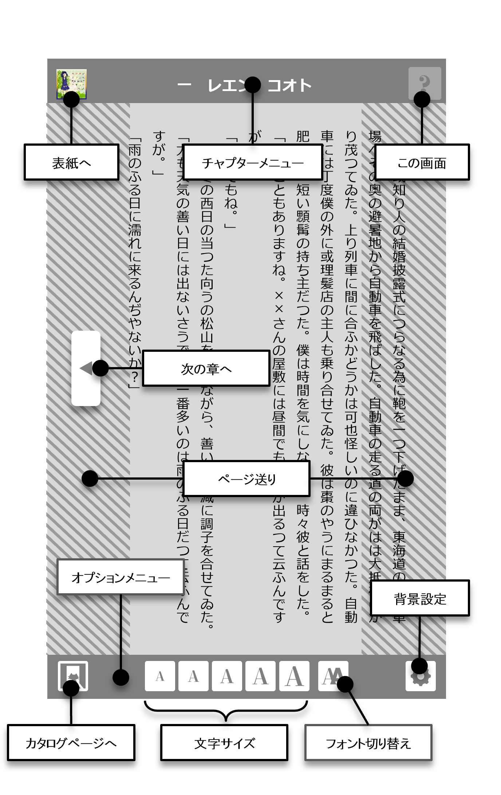
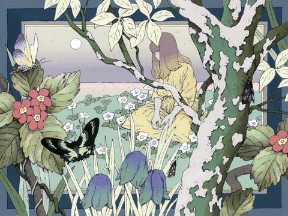
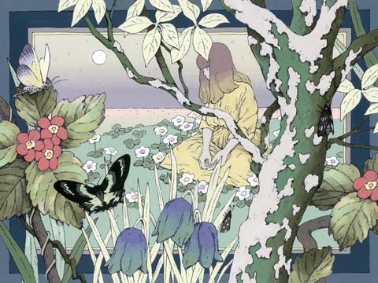

- １．いくつかの扉
- ２．弐のひとを探しに
- ３．クリスタルの牢獄
- ４．愛について
- ５．しあわせについて
- おまけ．Chat GPTに聞いてみた
- あとがき
１．いくつかの扉
こん こん こん
こん こん こん
どあ
こん こん こん
こん こん こん
どあ
こん こん こん
こん こん こん
どあ
ボクがその詩を、当時好きだった子に送ったのが、84年の末。85年の夏に一時上京した頃には、彼女は友人の亥頭くんと交際していたので、時期は間違いない。シティ・ボーイズやいとうせいこう氏らが在籍した尖ったコメディ集団ラジカル・ガジベリビンバ・システムが登場したのがその直後、85年の秋になる。彼女にその詩を送ったとき、「音響詩」というものをまだ知らなかった。
中学のときに詩を書くようになって、あたりさわりなく――四季の歌で秋を愛するひとがそうだと歌われているが読む限り秋を愛している雰囲気は感じなかった――ハイねや、――ハイねとカタカナ３文字が共通しているがより「目が滑り」あまり残らなかった――リルけなどを読んでいたが、自意識は次第に蛹化し、件の詩を送った頃には――ほとんどの文学オタクが十代のアンニュイな夕暮れに通る――アルチューる・ランボォ、――その愛人で関係はもつれ発砲事件に発展しうる星やつらにも引用された――ポーる・ヴェルレーヌ――、二十代大人の世界へ踏み出すとともに酒を覚えるように嗜む――ジャん・コクトーと、白27で三々に入り黒32に対して白33ハネと碁の教則本を片手に黒白の石を並べるように読み進め、ただそれもほとんどのオタクがそうであるように表面的に舐めたにすぎず、たとえば――ドラッグに溺れ詩人でありながら「言葉」を否定する――ウイリアむ・バロウズへは90年代のグランジ――シアトルあたりから全世界へと繁茂したロックの一種――の流行の頃にたどり着いたのだが、音響詩というものの存在にたどり着くのは更に遅れ、YouTube登場後になった。
ここまでの文章を読んでもらってわかる通り、ボクはそもそも国語が得意ではない。小学生の頃からそうだ。まず、漢字が苦手で、未だに「短」などは旁と偏が逆になる。しかし、旁と偏が逆になったところで意味は通じる。なぜそれが逆ではいけないのか。小４から小６の担任の高石先生はその理由を語りもせずに、宿題の漢字の書き取りを忘れると、そのノルマは２倍に膨らむという無茶な懲罰を課し、そのせいでボクの漢字書き取りノルマは宇宙へ飛ばした栗まんじゅうのように、何百億というオーダーに膨らんでいた。５年生から６年生に上がるとき、その数字はリセットされるかと思ったが、されなかった。驚きである。新しい教室の後ろの古賀谷くんのハナクソのついた黒板に、まず最初に書かれたのが６百何十億というボクの指に架せられた苦役の数だった。いまでもボクの漢字の書き取りノルマは、宇宙のどこかで毎日２倍に増殖しているし、それは日々星の光を飲み込み、ボクはずっと逃げ続けている。 それでも、詩は好きだった。 小学校の１年のとき、こくごの最初の授業で、「みえます」というのがあった。教科書に見開きで町の絵が描かれ、「やねがみえます、そらがみえます」とキャプションが入っている。栗橋先生が順番に指して、「なにがみえますか？」と問い、生徒が順に答えていく。ボクは「てっきょうがみえます」と答えた。自分の番までに、だれもそれを選ばないように祈りながら、順番を待った。
「てっきょうがみえます」
それはボクが、はじめて紡いだ言葉だ。
90年代の前半、ボクのテキストはとてもコラージュ的だったが、その頃はまだバロウズへ到達する前。２チャンの経済板でコテ――固定ハンドル＝コテハンの略で、匿名の２チャンにありながらハンドルを固定して殴り合う恐ろしいひと――をやっていた吾郎橋くんに送っていた文章が、ほぼほぼカットアップ――バロウズが提唱した文章を切り貼りして別の文章を作り出す手法――みたいなものだったが、これはボクにとっては手法ではなく、性癖のようなもので、好きに書いていると情景は次々とジャンプするし、だれかれからの影響とかいう立派なものでもない。ちなみに吾郎橋くんとボクは同性愛的な関係に見られることもあったが、これは吾郎橋の野郎が細いタバコを小指を立てて吸いながら、待ち合わせたバーで「いのぶ～、ここここ～」などと言って呼びやがるせいではあるが、じつは煙の火元はその細いタバコだけでもなかった。彼はボクと同じく、ひとが近くにいるとおしっこが出ないたちで、昼休みに本屋のトイレまでつきあわされ、しかし、伴に入ることは赦されず、入口でだれも入ってこないように見張らされたものだったが、この関係は普通に見て理解できるものではない。昼休みに連れ立ってわざわざ本屋のトイレに行けば、あーなるほどー、と思うものもいるだろう。彼本人の口から「ひとが近くにいるとおしっこが出ない」と聞くことはなく、ささやかなプライドだったのだろうが、気が付かぬわけがない。おまえのちんちんの事情など百も承知だという話はさておき、当時聞いていた音楽、あるいは見ていた演劇からの影響はあったのだろう。たとえば有頂天――インディーズの旗手と言われたテクノバンド――しかり。夢の遊眠社――80年代の小劇団ブームの中心にいた若く活動的な劇団――しかり。ラジカル・ガジベリビンバ・システム――ニッポンテレビ大学なる深夜番組で酸のシャワーを被るように浴びた異能集団――しかり。 文章は意味ではない、音の響きだ。というようなことを、学生時代に言っていたのだから、天才なのだ。天才は、文脈も根拠も要さない。あるいはそれを理解しない。『現代思想』の別冊ムックでではあるが、バシゅラール――詩や想像力と科学とを結びつけて論じた思想家――やショーペんハウアー――芸術を通して「意志」の支配から逃れると言った当時はショーペんハウエルと呼ばれていた思想家――は読んでいたが、もちろん、理解などはしていない。吾郎橋くんもまた、
「どーせ買っただけで読んじゃいないんでしょう？」
と、笑いながら細いタバコを揺らしていたが、理解などしなくてもそれらしいことを語っているのだから、やはり天才なのだろう。天才は、才能の多寡を言うのではない。「持ち合わせた才能以外、新しい何かを獲得できない者」をそう呼ぶ。手品に飽きられたら見向きもされない残念な天才ばかりだ。新書の一冊で無敵になって、その先はない。一芸で渡り合うオタクのほとんどは天才だ。天才は挫折せず、忘れられ、泣き濡れて、蟹と戯る。
ちなみに吾郎橋くんが好きだったのは角松敏生――バブル期を代表するシティポップの雄――で、後にファイナルファンタジーXI――スクウェアが満を持して投入したマルチプレーヤーのオンラインＲＰＧ――のプロデューサーを務める松井くんが角松敏生にそっくりだと言い出し、果たしてどれほどのものかと問うて見せられたアルバムのジャケットに写っていたのは若き日の松井聡彦プロデューサーそのものだった。 ボクが「いのぶ」と呼ばれたのは、先に入社した別の井上さんがいたからで、彼は「いのいの」と呼ばれ、ボクは「いののぶ」、略して「いのぶ」と呼ばれるようになったが、これを略したのが吾郎橋の野郎だ。いのいの氏のことは、じつは入社前に付き合いのあった会社で聞いており、
「こんど、スクウェアに移籍することになりました」 と、報告すると、 「うちにいた井上って奴がいると思うんでよろしく」 と、よろしくされた。 「ボクと同じ井上ですか」 「そう。井上弥太郎だったかな」 ボクの叔父だ。 「どんなひとですか？」 「メル・ギブソンに似た奴」
果たしてボクが聞いたのは似ている有名人だっただろうかと自問したが、スクウェアに入社するとメル・ギブソンがいて驚いた。幸い、叔父ではなかった。 そんなボクはまた、入社前に携わっていたプロダクションの社長から「徳永英明――繊細な歌声で女性ボーカル曲をカバーする歌い手――に似ている」と言われていたので、得意になって披露したところ、先輩の虹田さんから「徳永英明の顔面をレンガで何発か殴りつけたら同じになるかもしれない」と言われ、殴られるのが徳永で良かったと思った。 また、プロレス好きの時田貴司――ライブ・ア・ライブ等のディレクションを手掛けた小劇団系のゲームクリエイター――と、同じく植松伸夫――ファイナル・ファンタジーシリーズ等の音楽を手掛けたオカルト好きの作曲家――の二名からは、
「いのぶ、川田利明に似てねえ？」 「ちょっと前歯２～３本抜いてみ」
と、録画した全日本プロレスの画面を見ながら言われ、得意のノリツッコミも許されない荒野に放り出されたのだが、考えてもみれば天下の植松伸夫に「前歯２～３本抜いてみ」と言われたのだ。いまとなってはなぜ抜かなかったかと後悔するばかりだ。
暗い日。 暗い日ー。 暗い日ー日ー日ー。 暗い日。
と、これも学生時代に書いた詩のひとつで、これを「日」のところは息を吸いながら発音し、永久に繰り返すと主張し、文学仲間である蟹添くんをたいそう困惑させた。
「わけがわからない」 「声に出して読んでみて。読んだらわかる」 「暗い日。暗い日ー。暗い日ー日ー日ー。暗い日」 「ちがう！『日』は息を吸う！」 「無茶言わないでください」
彼もまた天才だった。そしていち早くボクの天才に気が付き、だれよりも先に飽きた。ボクにしてもそうだ。お互いにすぐ飽きた。詩を書き始めたのは中学生のとき。おそらく、２年に上った頃。 それまでは絵を描くことが多かったが、まわりが宇宙戦艦ヤマトや機動戦士ガンダムを描くなかで、ボクが描けるものと言えば幹澤くんの似顔絵くらいしかなく、その頃のボクは幹澤くんでは語り得ない思いを胸のなかに詰まらせていた。要は恋をしていたのだ。恋と詩は、ロマンチックに言葉を響き合わせるが、混ぜると有毒ガスを発する。有毒ガスと毒ガスの違い。これもいつか書こう。 自伝というものほど嘘に塗れたものはない。小説も、随筆も、ノンフィクションも、それぞれ何かしらの真実を語ろうとするが、自伝だけは真実を虚飾する。あるいはまた赤裸々な告白なども文学を笠に着た暴力だ。「不甲斐ない俺の罪を許せ」と泣きながら殴ってくる森鴎外、三島由紀夫、村上春樹。ボクは金を払って何を読まされているのだろう。詩も同じだった。その子を好きになったのが小学校の６年、精通が始まった頃だ。「恋も二度目なら」と中森明菜は歌ったが、三度目の恋だ。件の歌詞は「――少しは上手に、愛のメッセージ伝えたい」と続くが、小学生のうちに二度目三度目の恋を迎えても、そんなには成長していない。ボクの中の中森明菜は、シリアスな顔をして、逆にボクを聞い詰める。
本当にそれ、恋だったの？
とは言え毎晩のように夢に見て、朝起きるとパンツが濡れていて、いまなら何が起きたのか理解もできるが、あの頃は詩を書くしかなかった。
まくら濡らした夜 パンツが濡れた朝 まくら濡らした夜 パンツが濡れた朝
詩というのは、不可解な自分を飼いならすひとつの方法なのだ。よく言われる「中二病」もそうだろう。妄想で己を飼い慣らすのだ。
そして唐突に夏の暑い日、駅の向こうのとあるカフェでいとうせいこうに似たひとを見かけた。そのひとは眼鏡を掛け、白髪交じりの髪に青いシャツを着て、テーブルの上に青いキャップを置いて、椅子の背もたれに背中を預けて何かしら物思いに耽っているようだった。足元のスニーカーは新しくもないが、そこそこ値の張るものに見える。果たしてこれは、本当にいとうせいこうだろうか。 ＩＴの業界には「もしもそれがアヒルのように歩き、アヒルのように鳴くのなら、それはアヒルである」という言葉がある。さしものいとうせいこうにもオフがあろう。ところかまわず「生のラップで騒ごうぜー」と盛り上がっているわけでもないだろうし、常に小説を書いているわけでもない。だとしたら、いとうせいこうのような眼鏡をかけ、いとうせいこうのように佇まう彼は、オフのいとうせいこうなのだ。 ボクがいとうせいこうを好きになったのは、二十歳の頃だ。86年の秋、タイニー・パンクス名義のアルバム『建設的』がリリースされる直前、あるいは直後、ラジオでその声を聞いたのが欠氷だった。番組名までは覚えていないが、イエロー・マジック・オーケストラの高橋幸宏氏とふたりのトーク番組。 高橋氏は冒頭、
「風もだいぶ涼しくなってきました、と、季節の話題から入ります」
と、台本をそのまま読むボケをかましていたが、リスナーの何人がそれに気づいただろうか。『建設的』に収録された『なれた手つきでちゃんづけで』は、高橋氏が曲を提供している。トークは必然かつ台本通りにその話題になり、曲が掛けられ、いとう氏は――ここでこの作品に携わったお二人の裏話などを差し込みます――と、台本に書かれていたのだろう、
「あるひとの歌い方を真似しているんですけど……」
その通りに水を向けるが、高橋氏は笑って流し、後手、いとうせいこう、
「細野晴臣さんなんですけど」
と、自ら口を割るはめになっていた。
ずいぶん古い話だ。なぜいつまでも記憶にこびり付いているのかわからないが、そのいとうせいこうが、ボクのとなりの席に座り、恍惚の人のように天井の配管のあたりを眺めていた。 しかし、妻の話では、どうやらそれはいとうせいこうではないということだった。ボクが妻に話したのは、いとうせいこう似のひとを見かけたということと、あとはその様子と目撃場所だけだったが、「違うらしいよ」と聞かされ、果たしてどこの情報網を使ってその答えが出るのか、やや戸惑った。 ずっと昔、芸能界に伝手があるという知り合いの知り合いがいた。頼めば、芸能人の歯ブラシやパンツを入手できるという触れ込みだったが、はたしてそれは「伝手がある」で説明のつくものだろうか。ボクは疑問に思い、渡辺満里奈のパンツをリクエストした。渡辺満里奈のパンツが欲しかったわけではない。冗談には冗談で返すのがボクたちの流儀で、ボクにしても「いえいえ、冗談でもそんなことを言ってはいけません」と返すような聖人ではなかったし、その返しはむしろパンツを要求している。 数日後、彼から渡されたのは方っぽの靴下だった。
「ごめん、渡辺満里奈のパンツは無理だった。でも井森美幸の靴下が手に入った」
使い古された女性用の靴下だ。「おまえ、これをどうしたんだ」と、問い詰めるべきだったが、知れば引き返せない闇に落ちる気がした。
いとうせいこうを知ったラジオは、アニメーターの頃だった。１枚百七十円の動画で食っていくには、日産二十枚ほどは描かなければいけなかったが、そのためには家に帰って無駄にテレビを見る時間を削るしかなく、必然、ラジオが娯楽かつ、情報源となった。YouTubeでもラジオ的なものはあるが、まったく余計なことに、コメンテーターが顔を出してしゃべっているおかげで、何かの折につい見てしまう。見てしまう。「この図を見てください」と言われたら、見てしまう。情報というのは、ふんだんにあっても困る。その点、ラジオは素晴らしい。耳だけ向けていれば良いのだから。だが時折、そのラジオを二度見した。 聞いていたなかに、タイトルは覚えていないがインディーズ系の音楽を紹介する番組があった。古いひとは坂本龍一のサウンドストリートを思い起こすだろうが、それに似た番組で、パーソナリティは有名な女性ＤＪだが、名前を失念、そこに有頂天のヴォーカルのケラが登場したときのやりとりだ。
「リスナーのみなさんから、インディーズと言えばケラだろう！ ケラはどうした！ ケラを出せ！ というたくさんの声が寄せられています」 という前フリに、 「カエルコールのような声援ありがとう」 と、これもまた台本を棒読みしての登場だった。
この頃に、ボクのいとうせいこう好き、有頂天好き、台本を棒読みするひと好きが始まった。21になるほんの少し手前。それと同時期に、亥頭くんからもらった夢の遊眠社のチケット。そこから線を引っ張って伸ばしていったものが、概ねボクの世界線だ。亥頭くんはボクの人生にたびたび変なパスを出してくるが、いとうせいこうとは無関係なので、注意されたい。
元から変な音楽ばかり好きだった。中学の頃、生活向上委員会管弦楽団というフュージョン系のバンドに傾倒した第一コーナーで仕掛けの鞭が入り、音楽の性癖に目覚めるきっかけはひとそれぞれで、ボクの世代ではイエロー・マジック・オーケストラからのひとが多かった。あとはクイーン、ＥＬＯ、レッド・ツェッペリンあたりが定番ではなかっただろうか。他方、身の回りにはさだまさしファンも多く、ちょうどグレープが解散し音楽性を探っているようなときで、アダルト・オリエンテッド・ロックになりたい『檸檬』、街へ出た息子への思いを描いた昔ながらのフォークソング『案山子』、少女漫画的情景を女子一人称で描いたコミックソング風の『雨宿り』、いまはアレな内容も昔はソレも時代だった『関白宣言』、と、まったく違う傾向の曲をリリースしていた。 ニルヴァーナ――90年代グランジ・ロックの代表格――というバンドのファンサイトを運営していた頃があるが、そこでボクは最後にはさだまさしの話しかしなくなった。当時はＳＮＳも匿名掲示板もなく、それぞれのホームページに自作の掲示板があるのが常だったが、ボクのニルヴァーナのページではよくニルヴァーナファンとスマッシング・パンプキンズ――同じくグランジの代表格だが、ニルヴァーナのリーダーのカート・コバーンの妻がスマッシング・パンプキンズのリーダーのビリー・コーガンの元カノにあたり、しょっちゅう喧嘩してた――のファンが喧嘩していた。その他、ガンズ・ん・ローゼス――大阪でのライブでトーキョー！と叫んだおちゃめなヘビメタバンド――や、グリーん・デイ――雨の野外ライブで観客と泥の投げ合いになり、ベーシストのマイクは観客と間違えられて逮捕されたおちゃめなパンクバンド――、ＮＯＦＸ――商売嫌いで日本版のＣＤの制作を頑なに拒否してきたいまにして思えば実直なパンクバンド――といったバンドに関してもボロクソに書くやつがいて、見るのもうんざりして放置していたら、いつの間にか攻撃の矛先は管理者であるボクの方を向いていた。カート・コバーンとビリー・コーガンの音楽性の違い云々を語るヤツもいたが、要は亥頭くんとボクである。仲良くケンカしていたのだ。この、仲良くケンカできる相手ってのも人生には必要な存在で、ブラウニー・ブラウン――もとスクウェアの聖剣伝説のコアメンバーが作ったソフトハウス――でボクと高橋部長――公人とは言い難いがブラウニー・ブラウンのＨＰに割と頻繁に出ていたので問題ないだろう――は怒鳴り合いもしたし、一緒に『崖の上のポニョ』を見に行ったりもしたし、何度か殺そうかとも思ったが、ボクにはそういう付き合いが気楽でいい。 ちょうど雨で電車が止まった日。カート・コバーンの死からはずいぶんと日が経っていた。ボクはクエスト――『伝説のオウガバトル』や『タクティクスオウガ』などをリリースしたソフトハウス――から移籍した松野泰己氏のチームにいた。電車が止まり、いまならそのまま喫茶店にでも入って時間をつぶすのだが、あの日は、歩きたかった。中央線、荻窪の駅から、勘を頼りに目黒を目指すと靴は冷たく、通りかかった河川は水嵩を増して、その際に立つ家の足元を削るように流れていた。雨音は時々大きくばらばらと傘を叩く。傘がある。行かなくちゃ。気がかりなのはニルヴァーナのサイトだった。面倒くさくてもう二週間は放置していた。ボクが最後に見た書き込みは、ＮＯＦＸ＝ＦＵ✕Ｋ。
知らねえよ。 てめえらが喧嘩してんじゃねーかよ。 こっち来んなよ。
と、ボクもギターのひとつでも破壊したくなったものだった。
さだまさしはいいぞ。 ギター壊さないし。
しかしそのさだまさしもボクが知るさだまさしのほんの一面でしかなく、本当のさだまさしは夜な夜な河川敷にギターを積み上げては日本刀で両断するのを密かな楽しみにしている可能性がわずかにある。
「（高木美保）見たんです……」 「（小林稔侍）見たって、何を？」 「（高木美保）トランクから……ギターを下ろして、河川敷に降りていく姿を……」 「（小林稔侍）それが……さだまさしだったと言うのか？」
ところで、何の話だったか。
この、「ところで、何の話だったか」という疑問は、「本題に戻りたい」ときに言うわけではない。戻りたい本題があれば、「いいから早く、ゴジラの対策を！」と、問うまでもなく引き戻すものである。想像してみるといい。ゴジラがすぐそこまで来ているというのに、パンツを濡らした話から、いとうせいこう似のひとを見かけ、ニルヴァーナファンの掲示板での喧嘩、高木美保と小林稔侍の寸劇、そう続けている間、いったいゴジラは何をしているのか。いたのか。
「ところで、何の話だったか」 「ゴジラですね」 「おおそうだ！ ゴジラだ！ もう、東京湾まで来ているんだよ！ 我々はどうすればいいんだ！」
の、ような、のっぴきならない話題もなく、だらだら話してきて問う「ところで、何の話だったか」の本質は、
「前フリさ」 「ま、前フリですか……？」 「ああ。もっともっと脱線しろって言ってるのさ」
と、ボクの耳元に囁いた声は、振り向くとその姿を消し、ピロートークが途切れても繋いだ手と手を離さない恋人同士の夜、愛するふたりが交わす言の葉は、宇宙のロマンでも古代の謎でも友人のペットの話でも構わなかった。
「いやね、見かけたんだよ。いとうせいこうを。駅前のカフェで」 「またその話？」 「うん、ずっとファンだったんだ」
果たして、本題に戻る必要はあるだろうか。いや、ない。たとえそこから、火星に興った文明の話に飛んで行こうとも、そこには潜在的にいとうせいこうがいるのである。 ならば、ゴジラはどうか。ゴジラではそうはいかない。なぜなら、ゴジラは東京湾まで来ているのである。火星の話をする余裕はない。他方、いとうせいこうは、火星にいようが、東京湾にいようが、それで困った話など聞いたことがない。いとうせいこう本人は困るだろうが、他にだれも困るものはいない。
「でも、いまここにいると困るよね？」 「いま？ ここに？ なんで？」 「理由はわからないわ。でも、さっき『前フリだ』って囁いたひと……」 ――前フリさ ――ああ。もっともっと脱線しろって言ってるのさ 「あれがいとうせいこう!?」
ところで、ＮＨＫラジオの『坂本龍一サウンドストリート』内の『デモテープ特集』で取り上げられた、『福岡市ゴジラ』という曲がある。有名なゴジラのテーマソングに、
ゴジラ ゴジラ ゴジラとメカゴジラ ゴジラ ゴジラ ゴジラとメカゴジラ ゴジラ ゴジラ ゴジラとメカゴジラ ゴジラ ゴジラ ゴジラとメカゴジラとゴジラとゴジラ
という歌詞をつけたものだが、これを作ったのがボクの学生時代の盟友、有山ちゃんの先輩だというので驚きである。ボクは件のラジオを聞いておらず、彼の部屋に居候しているときにテープで聞かされたのだが、後に就職したスクウェア――ファイナルファンタジーで一躍有名になったソフトハウス――のなかでもこの曲は伝説的に語られており、自分とまったく関係のない地元の高校球児でビールを飲む親父のように鼻高々になったものだった。高校球児でビールを飲む親父。高校球児でビール。じつに淫靡な嗜みではないか。 アニメーターを辞めて、それまでの人間関係を整理したくて１ヵ月間姿をくらましていた時期があり、そのときに世話になったのが有山ちゃんだった。一般の人には「人間関係を整理したくて１ヵ月間姿をくらました経験」などないだろう。その間、親友の家に勝手に居候していたのだ。その１ヵ月のなかの３日間は、芸田くんという別の友人の漫画のアシスタントに駆り出されたのだが、その話は３時間目、図画工作の時間に、有山ちゃんが主張していた「自由共産主義」に関しては４時間目、社会の時間に触れようと思う。
漢字が書けないから、国語が嫌い、というのはいまにして思えば安易な結論であるが、小学生の発想だ。漢字が嫌いだから当然のように古文漢文は嫌いだし、日本史などもってのほか、ついでに世界史も嫌いだった。世界史はとんだとばっちりだが、ポンディシェリ連邦直轄地域にもシャンデルナゴルの戦いにも漢字が含まれているし、愛する要素がない。ボクが漢字を嫌っているのではない。漢字がボクを嫌っているのだ。ボクにあーだこーだ言わず、おまえらが漢字を使わなければそれで済む話ではないか。 他方、算数はどうだろうか。覚えるのは公式ひとつでいい。漢字１文字、たとえば「短」という文字を覚える労力で満点が取れるのだ。こんなに効率のよいものはない。算数が好きだから必然理科は好きになるし、何よりも「実験」は遊びの延長でしかなかった。 理系というのは、たいそう賢いように見えるが、要は効率厨である。とにかく公式一個、関数一個だけで済ませて楽をしたいし、なんなら宇宙の理を４つの基礎的な力で説明したいのが理系だ。勉強嫌いは理系の最大の取り柄であり、
「宿題を忘れる!? この子はなんて素晴らしい理系なんだ！」 「そうね、あなた、今日はお祝いに湯川秀樹が好きだった博多の女を食べましょう」 「ああ、そうだ、出張の際に買ってきたのが、まだ手つかずで残っている」
と、それにしても、である。食べ物の名称に「博多の女」と付ける際に、躊躇はなかったのだろうか。 後に一方的に親友となる幹澤古夫と出会ったのが、中学二年。彼はなぜか、パセリというあだ名がついていた。互いにまだ相手の素性を探るだけの新学期４月の連休前、ボクは班ノートに「フルサワー・ド・パセリエルの冒険」を記した。班ノートというのは、その班で起きたあれこれ、学校のこと、家庭のことエトセトラを書いて担任に見せる交換日記のようなものだったが、翌日、幹澤古夫の担当するノートはこう始まった。
――こんにちは。フルサワー・ド・パセリエルです。
幹澤古夫といえば、ボクが自作の拙い小説のなかでたびたび名前を借用し、いまや３本の物語の主役を務めるに至っているが、そこに描いた通り、幹澤古夫はギターが弾けたし、姉の影響でチープトリック――ビートルズの再来と言われたポップグループで、ボクにはどうしてクイーンやレインボウはハードロックでチープトリックはポップスなのかわからなかった――のファンだった。そして何よりも彼は、新日本語研究会の会長を自称していた。当時のボクは理系で、幹澤古夫はどちらかといえば文系、数学はあまり得意ではなかった。
彼は言った。 「どんなに科学が得意でも、新しい宇宙の法則は作り出せない」 なるほど。で？ 「しかし、国語なら新しい何かを生み出せる」 新しい何か！
ここにきてついに、「短」の旁と偏を入れ替える可能性が示唆されたのだ。
「それじゃあ、この『短い』の矢と豆を入れ替えた漢字は？」 「じみかい」 「じみかい!?」 「単に短いだけではなく、地味さも含んでいる」 「地味さまでも!?」
ちなみに幹澤古夫は、クラスではまだ――
「おまえ、やったことあんのかよ」 「いや、ええっと……俺はまだ……」 「ぼ、ぼくはその……ああ、うん……まだ……」
――と、だれもやっていないことになっていたオ◯ニーをしていることでも有名だった。 ちなみにこれは、流瀬くんに言わされたのだ。「俺も言うから、正直に言おうぜ」と水を向けられ、うっかり正直に言ってしまったがため、次の日の朝には「幹澤はオ◯ニーの常習者だ！」「オ◯ニーマシンだ！」とクラス中で囃され、その日はさすがに幹澤古夫もブチ切れている様子であった。 以来、幹澤古夫がボクの国語の先生になった。相変わらず漢字は書けなかったが、辞書を読むのが日常となり、難読漢字もスルスル読めるようになった。ある授業で、漢字の「読み」のテストがあり、ボクは「秋刀魚」も「胡座」も「海豚」も基本中の基本とばかりにスルスルと読んでクラスでもトップの成績を納め、注目を浴び、翌日の「書き」のテストではさんざんの成績を記録し、２度驚かれた。
「では、隣の席の人と交換して採点してください」
と、ボクは隣の秋川さん（名前は「あ」で始まったというくらいしか覚えていない。仮名のつもりであるが、場合によってはビンゴの可能性がある。京都の左翼だらけの大学へ行ったと聞いた他はうろ覚えである）とプリントを交換し、採点し、初日、恐れ慄かれ、次の日にもまた、今度は逆の意味で驚愕の目で見られた。習わない漢字の読みはわかっても、習った漢字を書けないのだから、天才を知らぬものは呆れるしかなかろう。 ちなみに秋川さんは「秋刀魚」の読みに「かます」と書いていた。秋刀魚の読みに「かます」だぞ。秋刀魚。ボクはその瞬間、恋に落ちた。
とある国語の授業は、「俳句」だった。
「各自、最低でも一句の俳句を書いてくること」
の、宿題が出た。宿題はしない主義だったが、俳句なら別だ。次の日、名前すら覚えていない小堺一機に似た国語教諭は、提出されたプリントを順に見ながら、読み上げた。
「えーっと、次は井上くんですね。すごいですね、１、２、３……10句もあります……」
そこまで言うと、名もなき国語教諭は顔を綻ばせたまましばし言葉を失った。教室はにわかにどよめいた。ボクが書いたのは――
野グソ垂る 蟻の行列 山越ゆる
――から始まる、野グソを春の季語とした10句だった。それが読み上げられることはなかったが、あの名もなき教諭の半笑いのリアクションと教室のどよめきは、ボクを有頂天にした。これが幹澤古夫との出会いで身につけたパワーだ。幹澤万歳！ Get Up I Feel Like Being a Onanie Machine！
学校を舐めているのか、と注意されたことがある。中間考査のあとだ。
「でも先生、わからないところでも空欄にせずに、何か埋めろって言ったじゃないですか」 「落書きをしろとは言っていない」 「するなとも聞いてません」 「学校を舐めてるのか？」 「まさか？ ボクがですか？」
いま語ると、あたかも武勇伝のようになるけども、特に何か狙っていたわけではい。性癖なのだ。小学６年のとき、田中正造の足尾銅山の話の感想文をヤッターマンのナレーション風で書いたことがあるが、あれはウケた。と思う。本人はそのつもりだ。ボクはそれを書くために、ヤッターマンの放映を一話まるごと録音して、何度も聞き返した。当時はまだビデオなどなく、お年玉で買ったラジカセだ。冒頭と締めに流れる富山敬のナレーションを、三歩進んで二歩下がる水前寺清子のように細かく再生し巻き戻し、コ・マ・オ・ク・リ・モ・デ・キ・マ・ス・ヨの仲本工事のようにカクカク動いては書き写した。そしてその「感想文」は、卒業文集にも自ら採用し、自らイラストを描いた。まさに、きれいな花が咲いたのだ。 正直、学校を舐めていた。感想文をヤッターマンのナレーション風に書くなど、普通は思いついてもやらない。やったのは学校を舐めていたからだ。「読書感想文に何の意味があるんだ」という問いを、ずいぶんあとの時代になって耳にしたが、おそらく、真面目に感想文を書いた人が言ったのだろう。意味などない。意味なんかあったら、ボクが楽しめないじゃないか。 中二の国語の先生。名前は小坂とか小池だったような気がするが覚えていない。中三は白火先生。ちなみにこれは仮名であるが、授業の雑談で語った彼自身のペンネーム「白火イリト」の白火だ。終戦間際、このペンネームで新聞に記事を投稿、本名がバレて問題になったという話だったが、仔細は覚えていない。不人気で横暴な先生だったことばかり覚えている。井上靖の『あすなろ』か『しろばんば』だった。ボクの前の席のひとが指され、音読し、ボクに「いまの朗読はどうだった？」と聞かれ、ろくに聞いていなかったボクは「間のとり方がうまいと思いました」と答えた。このあたりは弊社既刊の『アニメーターの老後』に書いた。 高一は若い女の先生で、一学期が終わる頃には出産休暇に入った。こちらも名前は覚えていないが、教科書に載っている「猫の話」の感想文を求められ、ボクもこの小説の主人公のように、いずれ家を出て一人暮らしをするのだと書いた。この話のタイトルはずっと失念していたが、数年前に検索して梅崎春生というひとの『猫の話』だと知った。そのままだった。忘れていたはずなのに、知っていた。そのずっとあと、いかすバンド天国――80年代後半にはじまったアマチュアバンドが勝ち抜きで競い合う音楽番組――で、BLANKEY JET CITY――広島の不良バンド――の『CAT WAS DEAD』を聞いたときに、この『猫の話』を思い出した。 高二、失念。高三、村中先生。 ボクが教科書に載るような小説をまともに読むようになったのは、安部公房からだ。安部公房をまともと呼べるかどうかはともかく、『赤い繭』を読んだのが、村中先生の授業だった。それから、『けものたちは故郷をめざす』『第四間氷期』と読み進んで、そこから他の本にも手を伸ばすようになった。『砂の女』だったら、こうはなってなかった。うまい具合に自意識を刺激する作品を選んだ。教科書に載ってる小説だって悪くないと感じるようになったのは、高校を出る寸前のころで、アニメの専門学校に通い始めると「文系のひとだと思った」と言われるほど広範囲に読み漁っていたのだから、まあ、自分でも、びっくり。
学校は嫌いだった。受験を目の前に控えた高三の夏。学年主任の先生が朝礼で「やる気のないやつはやめろ」と言った。ボクは目からウロコが落ちる思いだった。その手があった、辞めればいいんだ、と。その頃にはいろんな物語を浴びていて、おかげでボクが「学校、辞めることにしたよ！」と言えば、周りの大人達もみんな「ようやく気がついたか！」「そう、それこそがお前の人生だ！」と祝福してくれると、本気で思っていたが、そうはならなかった。母親は泣き出し、担任からは家庭訪問され、父親は会社を休んでボクを説得する。だれもボクの決意を支持しなかった。挙げ句に親戚まで来て、「ばあちゃんな、のぶゆきの話ば聞いて、涙ながしたぞ」と言われ、気持ちとしては「勝手に泣いてろ」であったが、そうも言えず。
「学校を辞めて何をするつもりだ？」 「何もしない」 「だったら駄目だ。何かやりたいことがあって辞めるのならともかく」 「何もしないをする」
くまのプーさんは人気者だが、人間のプーさんなどもってのほかと言わんばかり、高校を二日休んで、親とも担任とも話し合い、「高校は卒業する、だが卒業後は進学も就職もしない」で手を打った。高校に入ってからの２年とちょっとは、人生の目的も失ってどんより暗い生活を送っていたものだけど、「進学しなくていい」と聞いてからのボクは酒を得た毛利小五郎のようだった。ろくに絵も描けないくせにアニメーターになろうと決意し、試験もないという九州デザイナー学院に進学すると言い出し、ファンタジーやＳＦを読み漁るようになった。 そしてこれがまた不思議なもので、あれほど年号を覚えるだけの歴史が嫌いだったボクが、出題金村くん、回答者はアニメ科文芸チームでお贈りいたします、主要な文学作品の作者と発表年度を当ててみよう！ それでは第一問――
「どん底」 「ゴーリキー、１９０２年」
と、まるでゴリゴリのオタクがアニメキャラのプロフィールをそらんじるように、文学史に精通していたのだ。 高校の頃、恐ろしく偏差値の高い大学を第一志望にしていたが、それは担任の村中先生に「諦めろ」と言わせるためだった。だれかが決めた人生なら、悪態をつきながら歩いていける。「おまえなら、このへんの大学だ」と言われたかった。 当時の趣味は、スピーカーボックスの設計で、授業もろくに聞かずに、ノートに設計図を書いて、バスレフポートの共鳴周波数を計算していた。おかげで物理の成績は、上京後40年を経て代々木で再会した中川くんが覚えているほどに異様な高得点をマークしていたが、他はボロボロ。行きたい大学などなかったし、それで某芸術工科大学の音響設計学科を第一志望にしていたのだが、村中先生は「がんばれば受かるよ」と言った。そのときは、「いやいや、冗談でしょう」と思ったものだけど、アニメーターに!!!! おれはなるっ!!!! と宣言してからの異様な知識への探究心をアニメ抜きで発揮できていたら、ワンチャンあったかもしれないと思わなくもない。ただ、好きなことしかできないのがボクの一周した長所なのだから、授業が嫌で戯れに指を動かしていただけのスピーカー設計ではごむたいな、暮六つに、あっぱれ、差し込みが、御意、下手人が、お局様、捨て置け、拙者、心の臓を一突き、と、火星で、いとうせいこうを面接したが採用できなかったと嘆いてるひとに会った。当時人事部だったそのひとは、その後ボクがいるニューメディア室の営業担当として配属されたボクの斜め上の上司のような彼は悔やんでいた。制作部門からは「企画で採用したいから、絶対に取れ」と言われていたが、どこに配属するか確約してはいけないのが人事部の鉄則、いとう氏が「でも、向こうは制作で採用してくれると言うので」という言葉に対して、切れるカードがなかった、と。
「そうなんですか？ ボク、いとうせいこう大好きなんですよ」 と、上気して伝えると、 「あ、そうなの？ アポ取れる？」 と、素直な言葉で返された。
火星は、「アポが取れる」以上の関係でもなければ、話題にもならない恐ろしい世界だった。逆にボクは堀井雄二氏とはコネがあったので、アポを取らされた。「コネがある」と「アポが取れる」にもまたずいぶんと落差はあるのだが、まあ、こちらにも大手レコード会社という後ろ盾がついた。コネというのは、単に「知ってる」では通らない、こちらが「何者か」が重要となる、残酷な概念だ。
「こっちが引き抜いた形になるとまずいんで、礼儀は通しておかないと」 「いやいや、そこまでの関係じゃないんで」 「でも今後のこともあるんで。アポ取れます？」 「あ、いや、取れなくはないけど」
アルバイトで採用した新人に堀井雄二へのアポイントを頼むのも、どうなんですかと思ったそのひとは、ゲームテックビデオという映像作品の編集長を務める渡辺浩弐なるひとだった。地球にいる同姓同名の渡辺浩弐とは別人の、火星の渡辺浩弐だ。
「君が書きなよ」
エリシウム平原から、オリンポスの山を臨んで、そう聞いた言葉を覚えている。
こん こん こん こん こん こん どあ
ドアを叩くだけの詩を、当時好きだった子に送ったのが、84年の末。
こん こん こん こん こん こん どあ
85年の夏に一時上京した際には、彼女は友人の亥頭くんと交際していたので、時期は間違いない。
こん こん こん こん こん こん どあ
シティ・ボーイズやいとうせいこう氏らが在籍した尖ったコメディ集団ラジカル・ガジベリビンバ・システムが登場する直前、85年夏、ボクはタイムボカンシリーズでシリーズ構成を務めた小山高生に出会った。ちょうど本名の高男から高生へと表記を変更した時期だ。 84年夏、ソノラマ文庫の『霊界からの闖入者』『神々の熱き戦闘』が小山高男、85年12月、リヨンブックスの『霊もピチピチ生きている』が小山高生なので、ようやく20％ほど高生に羽化しつつある頃だった。ちなみにいまもストーカー諸氏ならご存知の通り、家の表札は「高男」のままだ。 アニメの専門学校の２年、夏、同級の亥頭くん、越知くん、神崎くんとともに上京し、１年前に先んじて上京した同級生、浜玉くんの部屋に一週間ばかり泊めてもらった。貧乏アニメーターの浜玉くんの部屋は六畳一間、小さな台所ひとつと湿度の高いトイレがあり、風呂はなく、御大、小山高生は、その部屋に遊びに来た。この件はまた、後述。 その小さな部屋に５人で雑魚寝し、亥頭君はその三日目くらいの晩、彼女が心配するからと、ほかの連中が息をひそめるなかで、電話をかけた。
「もしもし、俺だけど」
それに答えて彼女の高い声が、受話器から溢れた。ボクは彼女に件の詩を送った何日かあと、予防的に振られていた。
「君は、何を考えているんだい？」 唐突に連れて行かれた７階の資料室。 「何をというと？」 「うーん。いろんなこと」 「ああ、うん。いろいろ考えてるけど」 彼女は小さな愛想笑いのあと、言葉を探し、果たしてどの言葉を、どう、並べる、べきか――戸惑いながら、ボクに聞いた。 「君がわたしのことを好きだって噂があるんだけど、本気じゃないよね？」 「えっ？ ああ、うん。だれが言ってるの？」 「みんな。草場とか、いなちゃんとか」 逆にさ。なんで本人は気づいていないの？
ボクは亥頭くんのことが嫌いなのか、自問、幾度となく、するようになった。果たして、苅田さんに、振られた、予防的に、そのせいで、亥頭くんのことを嫌っているのか、亥頭くんが嫌いだから、苅田さんにちょっかいを出していたのか。浜玉くんとも、そして亥頭くんとも、九州アニメーション学院のアニメ科で知り合った。苅田さんも、しかり。 同じ学校、同じ科の１年先輩に、漫画家の山口かつみ氏――九州デザイナー学院アニメーション科第一期生の漫画家で代表作はオーバーレブ！２０２４年現在も現役――がいる。巨漢で、豪快で、気さくな人だった。当時そのひとが、後に漫画家になるひとだとは知らなかった。絵もよく見たことはなかったが、「１年上の先輩で漫画家になったひとがいる」と聞いて、すぐにそのひとだとわかった。 そのひとが声を掛けてきた時、ボクたちは学校の地下の撮影室の前に長机と椅子を置いて、アニメーションの自主制作をしていた。
「これは何をやっているんだい？」 狭い廊下。巨躯を寄せて、そのひとは聞いた。 「自主制作を。スタジオ・ローカーと言うんです」ボクが答えた。 「スタジオ・ローカー」そのひとが復唱した。 「廊下だから。あのひとが言い出したんです」と、ボクは浜玉くんを指差し、「ここの隊長さんです」と、紹介した。
ちなみにこの、セリフとセリフの間に地の文を挟む記述を、昔はよく見たが、近頃はとんと見なくなった。もしかしたら流行り廃りのようなもので、今更使うのは恥ずかしいのだろうか。と、本棚から古い本を選んでパラパラとめくると、高千穂遙、安部公房、大江健三郎らの小説には出てきた。稲垣足穂の文章は目が泳いだのですぐに閉じた。他方、新しいほうから、宇佐見りん、町田康あたりをめくってみると、見当たらない。そもそも、
――「うんたらかんたら」と、だれそれは言った。
の、「だれそれは言った」が書かれていない。
これについても以前調べたことがあって、書かないほうがオシャレなのかもしれないと、極力書かなくしていたのだが、後に読んだ村上春樹訳の（オシャレな）レイモンド・カーヴァーには多用されていたので、まあ、別に気にするこたあないか、という結論に至った。 細田守にはあった。ただし、セリフの終わりで必ず改行が入る。恩田陸、見当たらず。平野啓一郎にも見当たらず、こちらはセリフが偏って出現する負の二項分布が見られる。谷川流、綿矢りさ、観測されず。綿矢りさはハテナビックリ?!派だ。ボクは一貫してビックリハテナ!?を貫いているので、やや戸惑う。新海誠、ビックリハテナ!?派。落ち着く。ハテナビックリ?!には妙な緊張を感じる。新海誠のテキストにはセリフ間の地の文は観測されなかったが、一部モノローグに相当するものが発話されているように思った。これはアニメやゲームのテキストを書いているひとの特徴であろう。「だれそれは顔をあげた」と地の文で書けば良いだけの場面で、いちいち「えっ？」だの「……」だのとセリフを書いてしまうのである。ゲームではこの「……」もちゃんと書いておけば、セリフとしてのＩＤが振られ、音声収録時に声優さんがそれらしい息遣いを入れてくれるので、あったほうが制作はスムーズになるが、小説でこれを書く必要があるかについては、２年ほど前に悩んだ。逆に言うと、小説原作でゲーム脚本を起こす場合、適宜「……」を補ったほうがスムーズになると、原理上は言えなくもないが、その事例に出会ったことはない。 それにしても。そもそも「だれそれは言った」と書く者が少ない。 海外はどうかと見てみると、カズオ・イシグロ、ルシア・ベルリンには若干観測されたが、リディア・デイヴィスにはそもそもセリフがなかった。 概ね、最近の小説では【セリフ間の地の文】は少ないようであるが、東野圭吾、村上春樹には観測された。森絵都にも若干だがあった。要は、選ばれたものにしか使えない技工なのか？ という思いも生じるが、しかしまあ、別に気にするこたあないか。どのみち、パラパラッとめくっただけの情報だ。見逃したページでさだまさしが日本刀を振り回している可能性もなくはない。
山口氏は、浜玉くんに敬礼して見せた。ボクが彼を「隊長さん」と呼んだのはその日が初めてで、突然の敬礼に彼は戸惑っていた。 浜玉くんは絵に書いたようなアニメオタクで、入学早々からクラスメイトを集めて、放映されたアニメの演出についてレクチャーするようなひとだった。その腰巾着が亥頭くん。亥頭くんは目立たないキャラだったが、浜玉くんが半年もせずに学校を辞めてタツノコプロへ行くと、浜玉くんの後釜におさまった。 浜玉くんは宮崎駿――みんなご存知――や大塚康生――宮崎駿と同時代の敏腕アニメーター――の大ファンで、テレコム・アニメーション、もしくは東京ムービーに行きたいと言っていた。
「お宅はどこに行くつもりよ？」 と、浜玉くんは聞いた。当時は、オタク同士の二人称は「お宅」だった。 「ボクはタツノコプロ」 「タツノコが好きなんだ」 「うん。小学校の頃から」 ボクは小学校の頃、カバンに大きくタツノコプロのロゴを描いて、卒業文集にはヤッターマン風の田中正造感想文を書いたことを話した。それから―― 「高校は辞めて、家出するつもりだった」 「アニメーターになるために？」 「いや。アニメーターになりたいと思ったのは、その後。でも、ちゃんと絵を描いたことがないから。タツノコの研究所だったら研修があるんで、ちゃんと学べると思って。アルバイトして、上京資金ができたら、今年の秋にでも上京したい」 「へー。俺は東京ムービーかテレコムかな。学校はちゃんと２年通う」
と、浜玉くんはそんなことを話していたのに、１年の夏休みが終わると彼は上京し、タツノコアニメ技術研究所に入所していた。それは、ボクの夢ではなかったか。 その頃のボクはアルバイトを始め、上京資金を溜めて、だけど自由になる金があるとどうしてもその魂は本屋へと惹かれ、美術書や辞典、ハードカバーの児童書などを買い漁っていた。 ２年の夏休み。亥頭くんらと上京したのは、就職活動前のスタジオ見学が目的だった。貯金を取り崩したくなくて、青春18切符で、鈍行列車を乗り継いで国分寺にたどり着いた。岡崎駅で野宿し、蚊に刺され、めちゃくちゃ腫れ上がった。おそらく全長70センチは下らない、巨大な蚊だ。
「どうしたん、それ」 「蚊に刺された」 「めっちゃ腫れとるやん」 「５リットル血ィ吸われた」
浜玉くんは上京して１年が経ち、スタジオの仕事にはついていけてないようなことを漏らしたが、その頃はまだスタジオへ通っていた。その半年後には、ボクたち４人――中学の国語なら「この４人はどの４人でしょう」という問題にもなりそうな唐突さだが、それがパッと理解できぬ文などそもそも駄文なのだ。学校で教えるのは駄文を読み解く技術であり、先生もはっきりと「さあ、今日の国語はどんなへっぽこ表現がでてくるかな～」と言えばよかったのだ――もタツノコプロの門をたたき、スタジオに入ることになるが、そのとき浜玉くんはもうスタジオに顔を出さなくなっていた。 浜玉くんといっしょに、もうひとり別の友人も上京していたのだけど、そっちは完全に病んで、消息もわからなくなった。みんな少しは描ける気でいるのに、いざプロの中に入ったらまったく通用しないわけだから、病むのもしょうがない。そうならないように選抜はしているのだろうが、ぶっちゃけ動画ならだれでも描ける。ただし、描けると言ってもひとによっては毎月百枚に満たない。月給は１万円だ。月に千枚上げる奴は早々に原画に上がっていく。原画に上げなければ別のスタジオに流れていく。そうなると、百枚そこらしか描けない奴でも雇うしかない。病んで、辞めたら、また雇う。 小山高生と知り合ったのは、その浜玉くんを通してだ。小山師匠と浜玉くんは同じ宗教を信仰しており、そこで知り合った。お祈り付きではあるが、ボクが小学校の頃に憧れ、もしかしたらテープに録音して真似した回を書いたかもしれないひとにたどり着いた。希望に満ち溢れたアニメーター生活が幕を開けるはっずだった。だが、しかし。浜玉くんは仕事ができずに病み、小山高生もまた、悩んでいた。 ちょうど80年代のアニメブームが陰りを見せる頃だ。週に40本を超えるアニメが放送されてはいたが、それまでの「アニメでおもちゃを売る」といういわゆるマスコミ玩具によるビジネスモデルは破綻していた。マスコミ玩具戦略は、『仮面ライダー』や『魔法使いサリー』で確立されたモデルだが、アニメが成熟し、大人のものになるとともにおもちゃは売れなくなった。そのビジネスモデルの転換を余儀なくされた80年代後半、ちょうどフジテレビの「面白くなければテレビでない」という軽チャー路線とも相まって、小山高生の主戦場だったタイムボカンシリーズは意図せぬ方向に舵を切られ失速、他の作品もいまで言う萌路線に傾き、子どもの手からは離れていった。 この事情は拙著『アニメーターの老後』にも書いた。子どもたちに向けて作品を書く大人たちが、どれほど真摯に社会に向き合っていたかは書くまでもない。というか、書けるだけの具体的なエピソードが手元にない。だがきっと真実だ。要出典。当時、小山高生に勧められたのが、小山の知人でもある森忠明の『きみはサヨナラ族か』だ。これがアニメの脚本家の魂にも通じているのだと、あの頃は感じた。果たしてボクはサヨナラ族だろうか。違う。ボクはずっとそこにいる。それが森忠明から小山高生を経て受け取ったバトンだ。 小山高生という大御所が、上京したばかりのボクたちの部屋にまで来たのは、まず正直に言うと「宗教の勧誘」があるのだと感じた。当時は、1999年の人類滅亡が本気で信じられていた時期だ。自分が信じた「救い」をひとに広めることを責めることはできない。それ以前に、アニメ界は1999年の滅亡を待たずに潰れそうな雰囲気があった。それにそもそもを言えば、小山高生は面倒見のいい兄貴分で、決してサヨナラ族ではなかった。 ある意味、アニメには見切りをつけ、新しいメディアを模索しようとしていた時代でもあった。ちょうどこの頃から、アニメの脚本家の出版への進出が目立ち始める。小山の『霊界からの闖入者』『神々の熱き戦闘』もそうだし、藤川桂介の『宇宙皇子』はラノベの原点でもあった。ボクが敬愛してやまない島田満は『ぼくらのペレランディア！』を書いた。
「君が書きなよ」
エリシウム平原から、オリンポスの山を臨んで、そう言ったのは、火星で出会った渡辺浩弐という男だった。
小山はその後、シナリオ教室を立ち上げ、後進の教育に力を入れ始めた。ボクは稼げないアニメーターに早々に見切りをつけ、漫画の投稿などをはじめた。投稿作は、１作目が佳作、２作目が入選ととんとんびょうしで評価され――と、思っていたのは本人だけで、じつは編集部での評価はさんざんだと直後に聞かされるが――、とうぜん小山の耳にも入れた。そして面倒見の良い人だったので、とうぜん「俺が原作を書いてやる。編集長にも掛け合う」という話になったが、弱冠23歳の若造は怖気づいた。若造はちょうど、「編集長はキミのことを評価していない」という話を耳にした直後だった。
「キミを評価しているのは、ゲスト審査員の新沢基栄先生だけだ。他の編集者の評価は、ホップ☆ステップ賞担当――４点、副編集長――３点、編集長に至っては『？』だ。点数ですらない」
これを小山にどう伝えることができよう。あんなひとだ。伝えたらボク以上に悩んだだろう。 ボクは、努力のできる人間ではなかった。評価されていないなら、評価されるべく最善を尽くす――などはできない人間だ。配牌で上がってなければいくら自摸っても上がれない、天和かノーテンしかないのがボクの麻雀であり、最初に配られたカードでしか勝負できないドロー無用の一発勝負がボクのポーカーだ。その後のボクは多少の評価は得ているが、努力が実ったのではない。評価されない場所に留まらなかっただけだ。 それで漫画からもそうそうに離れた。愛されない場所に留まれるほど強くない。詩を送って見向きもされなければ、それ以上追うことはない。食い扶持として漫画のアシスタントはしながらも、ゲームにハマり、とあるレコード会社のゲーム制作部門に潜り込み、そこで立てたゲームの企画書に、小山高生の協力を仰ぎ、取り付けた。ぎゅっと圧縮したが、ここまで約１年。
「君が書きなよ」
そう、この企画で聞いた。
君が書きなよと言われても、である。小説はアタマに描いた情景を文字にすれば良いだけだから簡単だ――という言葉を聞いたことがあるが、そんなことはない。たとえば、ウルトラマンがスペシウム光線を放つ場面をその方法で書けるだろうか。
ウルトラマンは弱ってきた怪獣の前で腰を落とすと、右手を縦に、左手を横にし、胸の前でクロスさせて――いや、これだけではウルトラマンの手がグーなのかパーなのか伝わらない――右手はグーではなくて、手刀で拝むような形になってて、このとき小指側は敵の方を向いてんの。わかる？ こんな感じ。こう。で、その右手のひらの小指側の方、そこから一直線に、びかーっ！っと、強烈な光を放ったんだよ、びかーって。 うわーっ、まぶしーっ、みたいな？ そう、まぶしーって、いやいや、そうじゃなくて、光はなんていうか、こう、ビームなの、ビーム。なんか、かーっ！ とか、音がするわけよ。 どこから？ 知らねえよ、そんなことは。そういうビームなんだよ。スペシウム光線って言うんだけど、出るんだよ、手のほら、このへんから。それで、怪獣はもがくの。うがーっ。くるしーっ。避けりゃいいじゃんって思うかもしれないけど、そういう余裕はないの。うがーっ、ぐほーっつってもがいて、最後は爆発すんのよ爆発。ぼーん。ひゅーっ。やっちまったぜーって。なんで爆発するかとか、そういうのはいいんだよ、怪獣だから爆発すんだよ。ええっ!? 爆発しないでばたっと倒れて終わったら、なんか、やっちゃったーって感じになんじゃん。なんかこう、揺すったりして。カラータイマーぴこんぴこん言ってんのに、ゴメン、痛かった？ みたいな気になるじゃん。
と、凡人には到底表現し得ぬスペシウム光線のごときそれに類する御業を、小山の弟子である赤堀悟は、まるまる１ページに及ぶ擬音だけで表現するという技法を編み出した。いつか国語の教科書に載ってほしい。
「これ以上の作業は、ギャラが発生するぜ」
国分寺のとあるファミレスで深夜に落ち合った赤堀氏に言われ、ふと寂しさを感じた。基本的にボクは定時できっちり帰る人間なのだが、あの頃は時間など関係なかった。こちらはアマチュア気分でやっているから、プレゼン用の資料だろうがなんだろうがタダで揃うものだと思っていたが、向こうにはちゃんと仕事があった。それに、ボクのリクエストが極端でわかりにくかったのだろう。こちらは夢の遊眠社とラジカル・ガジベリビンバ・システムを愛し、少年ジャンプ編集部の示唆に耳も貸さなかった人間だ。他方、向こうはアニメのメジャータイトルの企画を手掛ける。その差は大きい。 企画は小山高生に名前だけ借りて、中身はボクと赤堀氏で整えることになっていたが、企画を進めて行くと直属の上司が、「小山高生本人が書かないなら意味がない」と言い出した。馬鹿な話だ。アニメの脚本だけ書いてきた人間にゲームのシナリオは無理だ。半年ほど経った酒の席で、『ファイナルファンタジー』の寺田憲史だって名前だけで、ほとんど書いていないということを、別部署の『老人Ｚ』などのアニメ製作を手掛けた者から聞いて困惑していたが、あとの祭りだ。（これに関してはやや誤解を招く表現なので補足するが、寺田氏が「名前だけで、ほとんど書いていない」漏らしたのは、本人の口から聞いたという話だったが、おそらく細部を現場のスタッフで詰めたことを言ったのだろう。しかし、ファイナルファンタジーの特にIIにおいて、ファンタジー小説由来の概念や作法が数多く移入されており、これは寺田氏の功績であると言えるし、のちのファンタジーＲＰＧのあり方に大きな影響を与えている。ファイナルファンタジーIIのストーリー構造とその実装に関しては見るべき点が多い） あるいは、夢を見ていた。漫画を描いていたときも、思いのままに描いたものがそのまま読者の目に触れるものだと信じていた。ゲームも同様、面白いものを企画し、仕上げれば、周囲はそれを称賛し、リリースされるものだと思っていた。
小山高生らと、新聞記者ゲームというものをやったことがある。お題を決めて、参加者それぞれで記事を書き、その記事を集め、親が読んで、だれが書いたかを当てるゲームだ。自分が書いたとバレないように、他のメンバーの癖を真似して書くのだが、書き手の個性が出る。 これをボクは、小山師匠以下、浜玉くん、亥頭くん、越知くん、神崎くんと、学生時代からの友人連中で遊んだのだけど、浜玉の野郎は島田満――ボクの最も敬愛する脚本家――、照井啓治――それに並ぶ存在――、井上敏樹――天上人――らと遊んだことがあるという。当時のドラゴンボールのレギュラーシナリオ陣じゃねえか。雪室俊一が加わればビンゴだ。いや、嘘かもしれない。嘘だと思いたい。いや、でもこれ、合コン後の初デートに鍋やお好み焼きに連れて行かれて伴侶としての適性を探られるようなモンで、遊びというよりテストなんじゃないのか？ 念の為、浜玉の野郎のウソの可能性も考えつつ読んで欲しい。参加陣は、前述のルールに沿って、自分が書いたとバレないように他のひとのフリをするのだが、みんな浜玉くんを狙い撃ちで、「唐津に帰って米屋を継ぎます」だの「リテイクが厳しくて泣きそうです」だのと書いてネタにしたというのだが、なんて羨ましい！ 本当はボクが、半年で学校なんか辞めて、秋には上京しているはずだった。小学生の頃からヤッターマンはバイブルだった。それに浜玉くん、きみは東京ムービーに行くって言ったじゃないか。なんでそんな羨ましい目に遭っているのだ！ 浜玉くんは、タツノコアニメ技術研究所では苦戦し、小山が企画していた漫画に参加することが決まっていた。そして小山がシナリオ教室を始めると、「鞄持ち」としてついて行って、タダで後ろで話を聞いたのだ。生徒のなかには後に大成した吉田玲子（ガールズ＆パンツァー）が、荒川稔久（仮面ライダーシリーズ）が、花田十輝（ラブライブ！）がいるのだ。
「ペラ10枚の短編シナリオを書いてくる課題だったんだけど、朝、目覚ましが鳴るシーンから始まるのとか、駄目だって言われてたね」
と、得意になって語るが、それはタダでシナリオ教室を見に行ったおまえが吐いて良いセリフなのか？ おまえアニメではひーひー言ってたんじゃなかったか？ 「唐津に帰って米屋を継ぎます」って揶揄されてたのだれだ？ っつーか、ペラ10枚とかプロみてえなとこ言うな。 これほど無駄にルサンチマンを刺激されたことはない。 ボクにとって小山高生のシナリオ教室に通わなかったことのコンプレックスは大きい。ゲームでも最初はシナリオを書く気はまったくなかった。小山高生という巨人に対して、引け目を感じていたからだ。それで企画だけを立てて、あらすじまでは自分で書いて、チーム内で見せて、「名義は小山高生、執筆はその教え子のだれそれで行きます」と説明したときに言われたのが、「君が書きなよ」だった。 火星から見る空には、大きな翳りがあった。ボクの漢字書き取りのノルマは宇宙の何処かで、すでにいくつかの星雲を飲み込んで、そのときもまだ成長を続けていた。闇が星を飲み込んでいく。あらゆる漢字は偏と旁が逆転し、国語嫌いは古文、漢文も遠ざけ、日本史も世界史も失われた宇宙で、小山高生のシナリオ教室だって遠くから思いを馳せるだけで、手が届くことはなかった。
「君が書きなよ。書いたほうがいいよ。この世界観のままちゃんと形にしたほうがいい」
火星の早稲田、火星の仏文科を出た男が言った。
その本音はわからない。アニメのシナリオライターに良いイメージがなかったか、予算を抑えたかっただけかもしれない。それでも、あらすじを読んだうえでのこの言葉だ。褒められてもケッとか言い出す面倒な性格ではあるが、このときは嬉しかった。
そのゲームが世に出ることはなかった。企画書は直属の上司までは上がっていたが、その上の決済が降りなかったのだろう。いや、社内調整用の企画書を書けとも言われなかったので、上司に採用する気がなかったのだ。ちょうど某タレントのゲームが完成し、それなりの売上が記録された頃だった。制作会社の社長に「次は◯◯◯◯で」と、ボクもよく知っているタレントの名前が伝えられるのを聞いた。 立ち消えするゲームの企画は無数にある。スケジュールまで押さえながら連絡が途絶えたものもあった。それを思えば、まだ走り出してもいないゲームが一本消えただけだ。だけど当時は気に病んだ。声をかけたひとに一通り電話で、企画が通らなかったことを伝え、その後はこちらから連絡を取れなくなった。 その後もシナリオにはコンプレックスを持ち続け、実際にゲームのシナリオを書くのはそれから５年ほど経ってから。小学校で諦めた国語だった。
アニメーターになるために上京した、その後漫画の投稿で賞をもらった、という話は度々良くしているので、「それでどうしてシナリオライターになったのですか？」とも、度々良く聞かれる。 しかし、振り返れば、ボクがアニメーターや漫画家など、絵の仕事を目指したのは、高校を辞めると宣言した夏から、投稿作がホップ☆ステップ賞を取るまでのわずか５年ばかりで、その前は『熱中時代』――水谷豊主演の学園ドラマ、毎回決まって学園での事件と下宿先での出来事が交互に描かれていた――の脚本を論じ、新聞で星川清司――古くは『眠狂四郎』、時代が下って時代劇特集などの脚本を手掛け、その後小説に転向し最年長で直木賞を受賞――の脚本回を調べてドラマを漁る奇特な高校生であったし、思い返せばフルサワー・ド・パセリエルの物語はわずか１週間ばかりで班ノートを消尽したのだから、文章を書くのは好きだったのである。世間を舐め腐り、文脈も存在しない、また、国語が嫌いな自分の文章が小説足り得るはずがないと信じていたのだが、ゴーリキーの『どん底』もスタインベックの『怒りの葡萄』も大差なかった。小説にはテーマがあると習った。見方によっては、それは真実かもしれない。だけど、小説にテーマがあるのではない。テーマがある場所に、ただからっぽの小説があるのだ。 その後のボクはシナリオのほうに進んでいくので、ちょうど小山高生に近しかった時期だけ絵に傾倒していたことになる。だけど、だれかから学べば必ず飽き飽きして離れていくのがボクの性分でもあるので、結果としてそれは良かったのだ。
「おひさしぶりです、植松さん」 「おお、ひさしぶりー。どうしたの、急に」 「前歯、抜けました」 「えっ？ なに？ どうしたの？」 「植松さん、ボクが川田利明に似てるって言ってましたよね」 「ああ、うん、言った言った。ますます似てきたよ」 「そのとき、ちょっと前歯２～３本抜いてみ、って言われて」 「言った？ おれそんなこと言った？ どれどれ、見せて見せて」 「にーっ」 「いーじゃん。最高じゃーん。でもせっかくなんで、あと１～２本抜いてみ？」
教科書に載るような小説は、神に選ばれた神聖の色を宿す。いちど天上へと駆け上がり、それから降りてきたのだ。だが一文字ずつ拾って舌の上に転がす文字はそうでもない。その理解に、あるいは愉楽に、国語教諭も、学校も無用だった。そもそも、小説に「芥川賞」や「直木賞」など、ひとの名の入った賞を与えてはいけない。芥川が多くの人に読まれる、共感を呼ぶ、そこまでは構わないが、だれもそれを権威にしてはいけない。 ボクと芥川龍之介の間に差異はない。ボクが芥川に賞を贈らないように、芥川もボクに賞を贈ることはない。国語がまず教えるのはそこであるべきだが、必ず、逆を教える。芥川賞を狙う作家になれ、と。しかしそれは教育ではない。ボクが国語教諭なら、こう言いたい。
「学校で学ぶ限り、芥川龍之介と、このクラスの君たちは同等だ。どんなに拙い文章であれ、それを隔てるものはない。賞を狙ったり、出版したりすれば差は生まれるが、そういう下賤のことは専門学校ででも学べばいい」
白火先生、村中先生、それと名前を忘れた中二のときのなんとか先生。ボクの言っていることは間違っていますか？ 先生方は――そりゃあ白火先生、あなたはクソのようなひとでしたが、それでも――ボクにとっては芥川龍之介以上の存在ですよ。ボクは芥川賞はもらえません。だけど、あなた方にもらった、10点なり20点なりの点数があります。 数学や科学では満点が取れた。国語は半分程度しか取れなかった。でも、国語ってのはそれでいいんじゃないかと思うんです。10点でも。１点でも。それは、文科省からもらった点数ではなく、あなたからもらった点数だから。
２．弐のひとを探しに
その行き止まり、台座の上にあったのは、一枚の鏡だった。
「これが王様？」
僕から亜実へ、最後の質問。
「そう。そしてこれが本当の世界」
そこにあったのは、一なる答えだった。
鏡の中には、僕たちがいる世界と左右が反転しただけの同じ世界があった。その世界はこちらと同じ、世界そのもの。だけど、手を伸ばしてもその表面にしか触れることができなかった。決して触れることができない――おそらくそれがこの世界の本質なのだと思う。だけど自分の頬に触れると、向こうにある世界と同じものに触れることができる。本当の世界は向こうにあって、僕たちはそれを写し取った『夢』の中でしか、それに触れることができない。そこでは僕は、王様であり、同時にその写し絵だった。
『昭和58年の宇宙移民』より
ある朝、目を覚ましたら、宇宙が左右反転していました。ボクたちは、どうすればそのことに気がつくでしょう。
自分の体も含めてすべてが左右反転しているとしたら、左右反転したことに気が付きようがない。辞書を調べると「箸を持つほうが右」と書いてあり、それが反転しているのだから、左が右だ。というか、左利きの人にとってはそもそも左が右だ。
「いやいや、体感が違うだろう」 「体が覚えている」
――というひともいるかも知れないが、その体も反転しているし、感覚も反転している。 だとすれば、宇宙が反転しても気が付きようがないことになるし、「宇宙は反転していない！」と証明することもできなくなる。当然これが「朝起きたら」でなく、「１秒前に反転しました」でも気が付かないし、なんなら「毎秒60回、宇宙の左右は反転しています」でも気が付かないし、そのサイクルが無限に早くなって、「宇宙は左右反転した状態の重ね合わせです」と言われても、ボクたちはそれに気付きようがない。 何が言いたいかといえば、ボクはサインとコサインが、どっちがどっちだかわからない。
堀井雄二先生にお会いしたのは、とある深夜番組のゲーム企画コーナーに同人誌を送りつけたのがきっかけで、それで番組協賛の企画などのお手伝いなどもちょいちょいさせて頂いたのだけども、運が良かった。運を掴むためにやるべきことは、まずはガチャを回すことで、当時のボクはコピー誌ながら同人誌を作っては出版社に、ソフトハウスに、テレビ局に、友人にと送りつけていたので、どかしらでポツポツと火の手が上がり、やがて深夜番組にも呼ばれるようになれば、ようようしろくなりゆくゲーム雑誌のイラストなども描いていたし、同人誌は作るに限るし、送るに限るボクは堀井雄二師匠率いるゲーム集団、U.G.Boysのメンバーなのであるが、番組主体で立ち上がった集団は番組の消滅とともに立ち枯れていった。それから――堀井先生はボクのことを覚えておいでだろうか――と遠くから思いを思う日を暮らしていた。 アニメーターを１年で辞めたボクは、１ヵ月の逃亡期間を経て東京へと舞い戻り、ラジオからテレビへと娯楽の軸足を移しては夜中にポテトチップスと玄米四合と少しのアメリカンドッグを食べ深夜番組などにうつつを抜かし、ろくに電波も拾わぬアンテナを右に左にと傾けながら探し当てたマイ・フェイバリットが、ニッポンテレビ大学、そのなかの１コーナー、ハイブリッド・チャイルドだった。 いとうせいこう主演のミニドラマであった。出演はシティ・ボーイズ、竹中直人らのラジカル・ガジベリビンバ・システムで、ゲストで有頂天のケラが登場した回もある。毎日きちんと夕方に起きて朝方には布団に入ってはいたが、その生活は不規則で、たまに寝過ごして見逃すことがあり、そして幾年月かののちにスクウェアに入り、そこもまた異能の吹き溜まりで、ここになら同士がいるかもしれぬと、どなたかハイブリッド・チャイルドをご存知ありませんかとマッチを売るように声をかけて応じたのが、かの天才コンポーザー、菊田裕樹氏であった。 ちなみにボクはアニメーター時代に、唯一『赤い光弾ジリオン』にて動画で名前をクレジットされたのだけども、なんと菊田裕樹氏も『赤い光弾ジリオン』の制作（厳密には製作である）に携わっておられ、タツノコプロでこうやってすれ違ったふたりがゲーム会社で出くわし、しかもハイブリッド・チャイルドの録画したテープを貸し合うのだから世界はお釈迦様の掌のように狭い。 「どうして録画してたんですか？」と、ボクが問うと、 「今日の日のために」と、菊田氏は答えたので、おそらく予知能力者なのであろう。その菊田氏の天才は、やや度が過ぎていた。 度が過ぎた天才というのは、庶民からは疎ましがられるもので、菊田氏に限らず、あのひとも、このひとも、うっかりカリスマを発揮した天才は影でボロクソに言われたりもしていたのだが、天才なのだからしょうがない。庶民は天才を知らないだろうが、天才は概ねバカなのだ。 彼は前章に登場した２チャンのクソコテ――固定ハンドル＝コテハンのなかでも特に熟成され芳醇な臭気を醸した――吾郎橋くん、それからこの章で語る吉田江さんなど、よりにもよってこのどうしようもない天才たちを集めて、１９９８年、株式会社サクノスを設立し、独立する。天才ってのは、酢豚に入れるパイナップルであり、カレーにいれるレーズン、ポークソテーのりんご、鴨のマリネのオレンジ、闇鍋にいれるＹＨＶＨであり、一緒に入れるものではないと、そのときはボクもあなたも気づかなかった。
「だれだ闇鍋にＹＨＶＨ入れたのは！」 「か、神だ！ 神が降臨した！」
スクウェア時代のボクの功績と言えば、ファイナルファンタジー４の「プチメテオ」と「プチフレア」の名称を考案、ロマンシング・サガのバトルのコマンド入力時にキャラをくるくるとまわした、ライブ・ア・ライブで、無法松に「ポゲラルゴォ！」と叫ばせた、あたりが有名なのであるが、あとはなんでしょう。はい、田中くん。
「コロコロムシ！」 「はい、そうですね。有頂天の曲名からとったコロコロムシを、合計３作品に登場させました。ほかはどうですか？」 「シモーヌとパブロ！」 「そうです、シモーヌとパブロ。大好きなハイブリッド・チャイルドの登場人物から取りました。おかげでハイブリッド・チャイルドの話題を漁ろうと、シモーヌとパブロで検索しても、自分の作品しかヒットしません」 「✕✕✕✕✕✕！」 「それは言っちゃいけないやつ。記憶を消去するので、あとで職員室に来てください」
キャラをくるくる回すのは、スーパーファミコン版の半熟英雄あたりで真骨頂を迎え、なぜ回したかと問われるならば、エフェクトに割く容量も工数もなかったからであるが、アニメーター時代に憧れたノーマン・マクラレン――カナダの映画監督・アニメーターで数々の映像作品を通して映像表現の発展に寄与した――をやりたいという思いもあった。 スクウェアでボクの同期に北瀬佳範という男がいて、こちらはファイナルファンタジーシリーズなどの著名作を手掛け――有名なのであえて説明説明はしないが――彼はスクウェア入社前はアニメーターで、月岡貞夫――アニメ創世記の敏腕アニメーターで、片渕須直、安藤雅司など錚々たるメンツを育てた『北風小僧の寒太郎』『こんなこいるかな』などが代表作で、個人的には『ふたごのオオカミ大冒険』がイチオシ――のスタジオにいた。おかげで、「マクラレンをやりたい」といえばツーカーで通じる人間ではあったが、同じチームにいたのはロマンシング・サガの間だけだった。マクラレンのアニメーションに関しては、おそらく一般のひとは未見で思い描けもしないだろが、ＮＨＫ『ピタゴラスイッチ』の『アルゴリズム体操』の基礎を作ったようなひとだ。もし興味があるならば「マクラレン カノン」でYouTubeで検索してみて欲しい。見ましたか？ 見ましたね？ そう、あれがやりたかったんです。
ロマサガの時代のＲＯＭの容量は小さく、マップはすべて四角や丸やラインで、いわゆるドローツールのようなもので要領を押さえて容量を抑えて描いていたが、バトルのエフェクトはと言えば平均で３キャラしかないと言われたボクは太極拳のポーズを決めて驚いた。 絵を表示するためのグラフィックデータと、それを並べるためのスクリーンデータとがあり、スーパーファミコンになってＢＧがたくさん使えるようになってよかったね！ と喜んだのも仕様書を見るまでのつかの間、スクリーンデータが案外大きくて、
「ごめん、いのぶ。バトルの背景は１セルで塗りつぶして」
などと新人を絶望させるリクエストが来てはアゴをはずしタイ仏教の神々のように踊ったものである。
「アゴを外してタイ仏教の神々のように踊るとは？」 「それが今日の宿題です」 「ええーっ！」
ボクはそれでも諦めず、ドラクエのマップは縦横にランレングス圧縮――同じデータが出現したら、それをひとまとめにして圧縮するアルゴリズムだが、「縦横に圧縮」が何を意味するかは不明――をしていたという話を思い出し、プログラマーの吉田江智氏に相談したら、それなら、ということで、紙と方眼紙を渡された。
「これで、背景がちゃんと表示されるのですね！」 「そう。セルの番号を書いて、それと同じセルがいくつ続いたかを次に書く……」 「待って」 「それが繰り返される場合は、数値の最上位ビットを……」 「待って」
と、ボクのロマンシング・サガに配属されて最初の仕事は、手作業でのハフマンビット圧縮だった。超絶なセンスを持つ吉田江智が、たまに敬遠されていた理由がこれでわかろう。彼をメインプログラマーに据えるには、並のスクリプター――簡易的なプログラムでゲームのコンテンツを実装するひと――では足りない。ボクを雇えばスムーズに回るが飽きたら仕事をしない。松井くん――天才――レベルのひとをトス役として間にいれれば機能するが、後に天下のファイナル・ファンタジーXIプロデューサーとなるひとをトス役に使うのはもったいないが過ぎる。が、実はサービス開始当初のXIで松井くんはトス役に周り、それであのゲームは完成した。と、プロジェクトの外からは、そう見えた。あの「状態異常」ひとつでバトル要素を網羅的に設計できるひとを他に知らない。いや、知らないだけで、もしかしたら他にもいるのかもしれない。化け物が。鬼才・田中弘道――ファイナル・ファンタジーXI初代プロデューサー――の采配の妙であろうが、松井くんもそのポジションができるのは自分しかいないと知っての選択だろう。すべて地球で起きたこととは関係ないが、火星ではそうだった。 かくしてボクの空想の生徒たちはタイ仏教の神々の踊りを習得したが、踊り踊られ人員も限られエフェクトもひとつひとつ手作りしている暇はない、データで――つまり、出現は１番、飛んでいくところは５番、最後の炸裂は８番のパターンで――のような、決まりきったパターンで作っていくしかない、と覚悟を決めて仕様を書いたが、ファイナルファンタジー４でプチメテオとプチフレアの名称は考案したが、実質、これが初の仕事で要領は得ない。プログラマ――吉田江さんなのであるが――に対して、１番はこんな動き、２番はこう、３番は……と伝えているうちに、それらを自在に作れる「スクリプト」というもの書いて渡された。 スクリプトを用意してやった。あとはおまえがやれ。 そう言わんばかりのこの仕打ち。
「実際のコードを書いてくれない！ この子はなんて素晴らしい理系なんだ！」 「そうね、あなた、今日はお祝いに湯川秀樹が好きだった横浜の女を食べましょう」
果たして湯川秀樹が博多と横浜どちらの女を好んだかは不明であるが、モダンチョキチョキズ――大阪発の総勢二百人を超えるその全容はメンバーすらも知らなかったと言われる90年代のフュージョン・バンド――によれば博多の女と横浜の女はパッケージが違うだけで同じものらしい。ボクは博多の女しか食べたことがないが、それにしても、この商品名はない。 要は１個１個作るのが嫌だったのだ。それが理系だ。 吉田江さんは、前述の仲間等とサクノスなるソフトハウスを興した後、その赤坂のオフィスで笑いながらこう振り返った。
「まさか、ちゃんと作れるとは思わなかった（笑）」
いや、笑っている場合ではないだろう。こっちは一個致命的なバグ――とある場面で、とある魔法を使用するとハングアップするバグで、これは吉田江氏が「このコードは使わないで」と言ったコードをうっかり使ってしまったせいなのだが、正直、罠以外の何であろうか――を出して、しばらくは針の筵だった。 吉田江さんは社員ランクの高い人だった。当時のスクウェア――これは火星にあるスクウェアで、地球のスクウェアとは別の会社であるが――は、メールによる外部との連絡が制限されていたが、吉田江さんのメアドは外部ともフリーでやりとりでき、そんなことだから外と連絡取って独立されるんじゃないのか？とも思ったものだが、吉田江さんが抜けたあとのメアドはボクが使って、吉田江さんとの連絡に使用していた。当時の社内規定に「辞めた社員のメアドを勝手に引き継いで利用してはならない」とは書いていなかったので、問題はないはずだが、二ヵ月ほどでバレて怒られた。
国語は苦手だった。これはもう、十分に伝わったと思う。しかし、数学は得意だった。得意なつもりだった。しかし、サインとコサインがどっちがどっちだかわからぬ。そもサインとコサインなど90度ずれただけで同じものに、なぜ別の名称がついているのかわからぬ。高校を辞めると宣言した日に魂の特急列車で通り過ぎたロガリズムについては、未だに理解できていないのだから、ボクの数学は数IIBまでだった。サインコサインは大学院レベルの高等数学であり、わかるはずがない。 ところでみなさん、波の動きがサインカーブなのはご存知だろうか。そう、波はサインカーブなのだが、これがどうにもボクにはわからぬ。 まず、円がある、円周上をぐるーっと回って、サインカーブのグラフが描ける――それは、わかる。しかし、海にはどこにも円などないのに、何がどこをどう動いてサインカーブが現れるのか。海のどこに円運動があろうか。円などなくても、サインカーブができるとは聞いていない。どこが底辺でどこが斜辺で角度θなのかあたりまえのことなんてなんにもないんだとモダンチョキチョキズの濱田マリが歌い出す勢いだ。それに果たして、海の波はサインカーブなのか、コサインカーブなのか。いやいや、円とサインカーブに関係など端からなかったんですよ、と言うのならば、ボクはいったい何を学んできたというのだ。 と、サインコサインについて書いてみたが、ロマサガのエフェクトの動きには三角関数を使用していない。三角関数で動かすのは半熟英雄からだ。
高校時代、うちには弟を騙して買わせたパソコンがあった。弟は財布の紐が固く、貯金があったが、ボクにはなぜか貯金がなかった。もらった小遣いは、それぞれのお金の質に由来するのだろう、弟の小遣いは毎日100円ずつ減っていったが、ボクの小遣いは毎日半分に減っていった。ボクのお金には放射能が含まれていたのだろう。半減期があった。ボクも定額で減るお金が欲しい。いまでも切にそう願っているが、だれもくれない。財布の紐の硬い弟に、パソコンの有用性を示すのは得意だった。ファミコンも弟が金を出した。その金を握りしめて電気屋に向かうとき「ＭＳＸを買うなよ。ファミコンだぞ」と、釘を差された信用のない兄であったが、親も結託して夢を語ると、弟は――兄が上京する際に接収されるとも知らず――富士通のＦＭ－７なるパソコンを購入した。足りない部分は親が出したが、弟は貯金のほとんどを捻出し、「これでシューティングゲームを作れる」と大喜びしていた。そして親はパソコンが手に入るとさっそく「これでバイオリズム表示のプログラムを書いてくれ」と言ってきた。 「会社で全員のバイオリズムが張り出されるが、その週のぶんしかわからん。正月休みのバイオリズムが知りたい」 親は、正月のバイオリズムが知りたいがために、弟を騙したのだ。なんて酷いことをするんだ。鬼か、おまえは。しかし、騙された弟はうれしそうだった。兄が上京する際には、「これも持っていけ」と親からミノルタの一眼レフカメラを渡されたが、それも弟のものだった。済まぬ。弟よ。感謝はしているのだ。
プログラムは書けないが、スクリプトは得意だ。これがどういうことかと言えば――
料理は得意だ。しかし、買い出しや片付けはできないし、ましてや栄養価など考えたくもない、好きなもの食べたいものをささっと作りたい
――という、焼き肉にだけ本気を出すお父さんのようなもので、子どもは喜ぶが、負担はすべて妻にかかる愛情の簒奪だ。 ファイナル・ファンタジーなどをリリースしたスクウェアというのは恐ろしい会社で、プランナーが経路探索まで実装することがあった。これをやったのが角松敏生似の松井聡彦氏であるが、ぶっちゃけ、そこまでハードルを上げられると困る。いいや、ぶっちゃけ他の企画に経路探索までやらせたら大事故になる。ボクもスクリプトは得意であったが、松井くんの場合はＣ言語で書いていたので、実質はプログラムだった。 企画＝プランナーにプログラムを触らせることを、多くのプログラマーは嫌う。バグが出た際にトレースできなくなるので当然だ。また、「データやプログラムに強いプランナー」というのがたまに配属されるが、そいつらは特に危険だ。そもそも「データに強いプランナー」がエクセルの表を作る以上の仕事をしているのを見たことがない。それは「エクセルに強いプランナー」ではないのか。離散コサイン変換やスペクトル解析、マルコフ連鎖を用いたベイズ推論やグラフ理論に通じたプランナー、あるいはオラクルマスター、それどころかＳＱＬを使えるプランナーにすら会ったことがない。それは「エクセルに強いプランナー」ではないのか。 ボクはスクリプターだった。エグリア――サイコロを転がして遊ぶシンプルなファンタジー系ゲーム――まで、ボクはスクリプターだ。実質的にはマジカルバケーション――スクウェアの旧聖剣伝説チームが独立して作ったファンタジーＲＰＧ――を最後にスクリプトを書いていないが、ボクがスクリプター・プランナーだったのはエグリアまで、それ以降がシナリオライターだ。 プランナーはプログラムに関しては素人だ。素人にプログラムを触らせる際には厳格なレイヤー分離が必要になる。要は、焼き肉の火にガソリンを入れたりしないよう、肉だけを焼く機能を分離して提供する必要がある。口頭で口を――果たして何が分泌されているのかは不明だが――酸っぱくして酸を噴きながら伝えても、ふとした事故で火事になることがあるので、システムレベルで対応しないといけない。ゲーム制作には何億、何十億の金がかかるのだから、素人が焼き肉にガソリンを注げるような設計をしてはいけない。 ボクはスクリプトが得意だし、周囲からもそれは認められていた。果たして何をしていたかと言えば、こっそりガソリンを注いでいたのだ。
そもそもボクが、本当に数学が得意だったかは、怪しい。要領は良かった。試験勉強などはしなかったが、朝方に公式を見返して、その覚えた公式だけで臨んでなんとかねじ伏せていた。通知表の欄に「要領」というものがあれば、そこは５で、数学も科学も１だっただろう。テストの点数は取れていたが、アタマには何も入っていない。数学が得意だったと言いながら、サインとコサインとがたまに逆になる。そんな状態で行列の、複素解析の、抽象代数学の何を理解することができようか。しかしこのサインコサインの反転、偏と旁の反転、左右の反転は、どうやらボクのハードウェアの根深いところに原因があるようで、いまでも「西へ行け」と言われて東へと進んでしまうことがある。つい先日も住吉町の東に降りてカレーのシロクマを探し歩いたのであるが、ゲーム、あるいは見知らぬ町で迷うのはまあボクが困るだけだから良いけども、本職であるゲームのテキストでもたまに間違えて書いてしまう。「西にダンジョンがあると言われましたが、ダンジョンは東にありました」というバグシートをもらったことがある。 まあ、それを言うと、スクリプトが得意だというのも怪しい。漫画やアニメによく謎の旧テクノロジー老人が出てくる。若い技術者が知恵を出し合っても解決できない問題を、直感やら手作業の肌感覚やらでなんとかしてしまう。あれを小学校の頃から身につけていたのがボクであり、基本はテストだけ乗り切ればよいという急場しのぎのシンデレラだった。国語社会が駄目で、数学科学は良かった――のではない。数学や科学にはバカでも通れる穴があったのだ。そしてその穴が、たまたまゲーム業界に通じていた。ひょっこりあいた穴からバカが侵入してきたゲーム業界もいい迷惑だろう。
「リメイク版制作決定、おめでとうございます」 「ああ、ありがとう。本日キミに来てもらったのもその件だ」 「もしかして、リメイク版のテキストも書かせてもらえるんですか？」 「フッ……それはキミの心がけ次第だ」 「いやもう、なんでも書かせていただきます。フレーバーテキストでも、雑誌に出すコメントでも……」 「その前に。オリジナルに仕込んだ著作権抵触ネタをあらいざらい全部吐いてもらおうか」 「あ……」 「マイナーな漫画……マイナーな映画……マイナーな舞台から勝手に引用したセリフ！ モンスター名！ アイテム名！ すべて！」 「ひいいいい、ゆ、友人の同人誌からは……」 「もってのほかだああああああっ！」
ＦＭ－７はもっぱらボクが使っていたが、雑誌に載ったコードは弟と分担してせっせと打ち込んだ。そんななかで触れたもののひとつに「ＬＯＧＯ」があった。タートル、すなわち亀と呼ばれるカーソルをコマンドで動かすプログラムだが、たとえば、
右に90度回転 10ドット進む
を、４度繰り返すと、なんと！ 四角が描けた。 四角が描けてそんなに嬉しいかと言えば、嬉しいに決まっている。 プログラムで描いたのだ。「90度回転」の数字を変えると六角形にもなったし、円にもなった。この数字を段階的に変更すると、小学校の頃にプラスチックの歯車を組み合わせて書いていたなんとか曲線みたいなものが描けた。 あの日、赤坂の新しいオフィスで、ぎっくり腰のため背筋を伸ばしたままの姿勢で帰っていった菊田さんを見送ったあと、吉田江さんは言った。
「まさか、ちゃんと作れるとは思わなかった（笑）」
しかし、ロマサガに実装されていたのは、タートルが複数存在するＬＯＧＯであり、ボクにとっては勝手知ったる師匠の家、昔取った首塚であった 吉田江さんは（うろ覚えであるが）ゼロックス――なんかすごい会社――の出身で、（うろ覚えであるが）アップル――りんご――が好きで、（そこから推測される通り）Smalltakと呼ばれるプログラムに傾倒していた。気がする。 Smalltak？ よくわからん。 というひともいるだろうが、要はそのスクリプトには、if文がなかった。 どういうことか。 プログラムというのは、たいがいif文でやっつける。プロレタリアートは特にそうだ。神はif文など使わない。この条件だとこれ、こっちだとこれ、みたいな形で条件分けして処理するのは人の子のプログラムだ。だけど、吉田江さんが設計したスクリプトはそれを許さなかった。タートルが自分自身を複製し、それぞれのタートルがそれぞれの外観を纏って独自の軌跡を描く。if文はなく、親ガメが子ガメの状況を監視して、さらに別の子ガメを発生させる、という機能しかなかった。
「最初にいじったスクリプトが、if文がなかったんですよ」 「えっ？ それでどうやって書いてたんですか？」 「Smalltalkに似たスクリプトで……」 「ああ、そういうことか」
と、わかるひとには説明不要で通じるが、ほんのりとプログラムを齧ったようなひとは戸惑っただろう。if文がなく、条件分岐ができないのだから。でも原理さえ覚えてしまえば、実にエレガントなもので、たとえばロマサガでは、キャラがバトルから「逃げる」際にランダムで転ぶのだけど、これも複数の子ガメを生成し、親ガメがその状態を監視し、条件が揃えば「転ぶ」という子ガメを発生させることで実装している。分かる人のために書くと、子から親へ「消滅した」というイベントだけ伝えられる限定的なメッセージパッシング仕様で、乱数を発生させるコマンドはなく、子ガメの生成時の乱数を利用するしかない（つまり「乱数」もひとつのスレッドと見做せる）硬派なスクリプトだった。
「まさか、ちゃんと作れるとは思わなかった（笑）」
と、聞いたとき、ボクの性能を見くびっていやがったなとも思ったが、「酔狂で作ったあのコードが」という意味合いも含んでいたに違いない。おそらく彼もボクが苦心して書いた仕様などRockに読まず、そのとき書きたかったコードを書いたのだろう。まったく。しかも、Rockにレクチャーもされず、使って覚えるしかないという。これが理系の天才のロケンロールだ。ちなみにロマサガに採用されたドローコマンドでのマップ描画も、前作でその礎を築いた荒覇吐さんが「あの酔狂で作ったシステム、採用したんだ」と苦笑していた。ライク・ア・ローリング・ストーン！ 庶民は困ってるんだよ！ あんたら天才のせいで！ プロセスの単体を見るとＬＯＧＯ、全体の仕組みはSmalltalk、というのがロマサガのバトルエフェクトのスクリプトだった。みなも使うが良い。ＬＯＧＯは近代化されたバージョンがあるが、そのなかでもScratchがオススメだ。使うが良い。Scratchは、Smalltalkをベースとしたビジュアルプログラミング言語で、オブジェクトの動きはＬＯＧＯ。まさにボクがロマサガで書いたスクリプトそのものだ。外観はとても洗練され、小学生でもプログラムができる。むしろ学校の先生よりも子どもたちのほうが使いこなせている事例がたくさん上がっている。 先述の松井くんは、我が子にSqueakというプログラミングツールを与えていたが、これもまたSmalltalkの影響を受けて開発された言語で、Scratchの元になったプログラムでもある。 ロマサガのバトルでキャラをくるくる回したボクが断言する。 Scratchがあれば、キャラを回せる！ 回そうぜ！ 鳴門を！ ノースキャロライナ・キャンディを！ ちなみに「キャンディー」を「キャンディ」と発音するものなど見たこともないが、なんで商品名は「キャンディ」なのか。みんなが「キャンディー・キャンディー」って呼んでる漫画も本当のタイトルは「キャンディ♡キャンディ」だから、「ディ」は伸ばさないのが正しい。オープニングの歌はどう聞いても伸ばしているが。
吉田江さんはゲームのことに口を出さず、ツールだけ書いて残酷に放りだしてくれるので、ボクは好きだったのだが、他の連中はSmalltalkまがいのツールでスクリプトを組みたがらなかったし、手作業でハフマンビット圧縮もやりたくなかった。まあ、むべなるかなだが、ボクにとってこの謎スクリプトは手に馴染み、いまJavaScriptが好きなのは、Ｃ言語のような顔をしながら純粋な関数型として使えるからだ。というか、そうやって調教されたのだ。
ロマサガはＬＯＧＯだったので、「どこかを中心にして回転する」ということができなかった。曲がって進んで……を繰り返すだけなので、何度も繰り返すと計算誤差でズレた。ちなみに、半熟英雄とライブ・ア・ライブはサインテーブルを持ったが、やっぱりズレた。
「ズレるんかい！」 「だってズレるんだもん！」
サインカーブってのは、要は波だから、その数字を拾って表にしたら、数字の合計は０になる。はずなのだ。 要は「～」←の上に出っ張った部分と下に出っ張った部分を足すと０になるのだが、半熟英雄とライブ・ア・ライブのサインテーブルは、上から下までぜんぶ合計すると１になった。 エクセルでサインテーブルを生成する際、どこかで数字を四捨五入したときに誤差が出たのだけど、ボクはデータに強いプランナーではなかったので、原因も追求せずにそのまま実装した。制作の忙しい時期に、主人公ユニットをくるくる回して放置してみると、１時間もすると明らかに別のところに行ってたのだけど、まあ、１時間もかかる必殺技もなかろうと、これはヨシということにした。
吉田江さんは、ちゃんと数学ができたひとなのだろう。ロマサガのエフェクトの動きで、どうしても平方根を計算しなければいけないところがあったが、スーパーファミコンには基本的な四則演算機能しかない（しかも割り算はちょっとだけマシンサイクルがかかる）ので、数字を足したり引いたりするだけで平方根を出さなければいけなかった。このアルゴリズムをボクも考えたのだけど、どうしても千マシンサイクルを割らなかったが、吉田江さんは２百サイクル程度のものを実装した。こいつぁすげえ！と思ったものだが、あとになって冷静に考えたら、データで持てば良かった話だ。平方根なんか計算しなくても、512バイト程度のサインテーブルを作っておけば、なんとかなる場面だった。 そう、そしてここでようやく三角関数の時代が幕を開ける。 次の半熟英雄からは三角関数だ！ と、思っていたら、吉田江さんとはチームが分かれ、新しいチームでは新しいプログラマに吉田江さん風の変態アプローチを頼まなければならなかったが、それはひとえに「失礼」というものだった。当時Smalltalkというものをそれほど詳しく知らなかったボクは、カタコトの日本語とタイ仏教の神々の踊りでそれを説明するしかなく、新しく組んだプログラマー氏はおそらく文系だったのだろう。256分の１ドット単位で速度を指定しているのに、わざわざ小数点以下を切り捨てるので動きはまさにタイ仏教の神々の踊りになった。違う違う。そうじゃない。
「小数点以下まで計算してください」 「はっはっは、これだから素人は困るんです！ キャラクターはドット単位でしか動かせないので、小数点以下など無駄ですよ、無駄！」
スーパーファミコンの時期は、少数という概念を知らないものが稀にいた。
「マップでの移動速度をいまの３割増にしてください」 「でもそうなると、10ドット移動する毎に３ドット多く移動する処理が必要になるので……」 「……？」 「２割増なら５回に１回でできるけど、３割だと……」 「……？」
と、いま文字に起こすと笑い話だが、実際に聞いた話だ。もちろん、その彼が悪いわけではない。得手不得手はある。それを見極めた「座組」もできずに、ゲームが語れるわけがない。なので、この書き方は少し失礼だった。まともに仕様書を書けなかったボクの責任である。ごめんなさい。 半熟英雄、ライブ・ア・ライブで組む深文田氏との出会いはこの直後だ。半熟英雄の途中で配属され、エフェクトの仕様を渡すと、１週間後にはキャラをくるくると回してくれた。やはりボクにはくるくるが似合う。右も左もない。それが常に入れ替わるのだ。
「あの輪っかが大きくなったり、小さくなったりする動き、いいねえ」
と、周りは彼を高く評価し、ボクも鼻高々であったが、ボクのことはどうした。ボクを褒めろ、みんな。
世間ではよく「三角関数なんか、世の中に出たらなんの役にも立たない」と言われているが、よくこの３Ｄ映像だらけの世の中で言えるものだ。実際に使ってるじゃないか、と。電車や車だって乗るだけだなら製鉄技術など必要ない。だから製鉄など役に立たぬなどと言い出すバカはいない。 とはいえ、ひとにそう言わしめるのは、進学中心の義務教育で身につける学歴コンプレックスであり、エリートに対するルサンチマンだ。ひとに。ルサンチマンはわかりにくい概念だが、サルチンマンとほぼ同義語で、高円寺阿佐ヶ谷の中央線ガード下あたりでは少数であるがサルマンチンも観察されている。 みんなが快獣ブースカの話題で盛り上がってるのに自分だけ見ていない。親が見せてくれない。快獣ブースカとサインコサインは同じなのだ。話題にして、仲間に入りたいのに入れない。
ならば俺は快獣ブースカなど否定しよう！ 快獣ブースカなど、世の中に出たらなんの役にも立たないのだ！
社会に出て、「自分は文系です」あるいは「理系です」と紹介されることがあり、「だったら数学は俺のほうが得意だ、教えてやろう」などと思っていると、そもそも文系は文系でも東大法学部だったり、一橋経済学部だったり、上智神学部だったり、そもそも高卒が戦える相手ではないことがしばしばある。そもそもボクの周囲の脚本家は、ゲーム業界だからかもしれないが理系が多い。
脚本家仲間に限らずではあるが、クトゥルフ神話、三国志、ドラゴンボールなどは読んでいるのが当然の前提として語られることがあり、更に加えると、山田風太郎、江戸川乱歩、銀河英雄伝、太閤記関連のあれこれ、幕末関連のあれこれ、古くはグイン・サーガ、マイクル・ムアコック、我が闘争、平家物語が積み重なって、くるくると目を回し己の無学に打ちのめされることが多々あったが、昨今では、ガンダムシリーズを見ていればなんとかなる。
江戸川乱歩の話が出たら、ターンＡガンダムで切り返す。
それが、ゲーム業界で生きていくための最善手であると、こうやって固有名詞を連打すると、読者のなかに「この書き手は頭の回転がくるくる早い」という印象が作り出されるかもしれないが、この「頭の回転がくるくる早い」って言葉には、「どっちなの？」という絶妙さがあるがさておいて、実際これを修学旅行で訪れたチベット仏教寺院でマニ車を回すようにくるくると続けざまに書いているかというとそうでもなく、たとえば一度書いたあとに見返して接続詞を抜いたり、あるいは「と、思われる」などの冗長な部分を省いたりしている。あるいはたとえばボクは雪室俊一氏――『おはよう！スパンク』や『あずきちゃん』を代表作とし、幅広い作品を手掛ける脚本家――の、複数場所で複数キャラを動かし、しかもタイムラインを追うとそのメンバーが分離し、場所をスイッチするという狂気的に緻密なフローから、異様に手が早い天才に違いないと思っていたが、実は遅筆らしいという話をＳＮＳで聞いた件。とは言え、脚本家の遅筆などは、悩んでいる時間に費やされるのか、競艇場へ行っている時間なのかはわからない。そして得てして、それは同じものだ。敬愛する島田満先生は、アニメの脚本はふんわりとしているが、小説『ぼくらのペレランディア！』ではキレの良い高速テキストを見せてくれた。遺作となった『リトルウィッチアカデミア』のコンパクトに畳み込まれたシナリオはまさに職人芸だった。 いとうせいこう氏は、何処かの対談で「ギャグにはリズム感が重要である」と語っていたが、ボクもそれには同意であり、90年代に発売された『MESS/AGE』のブックレットにあった日本語ラップ押韻表は目からビームが出るほどに読み返したものだった。ビーム、ビーム、ビーム、と繰り返せばビームも擬音語だとわかる。スパムもそうだ。 こうして読み返すと、ほんの千文字ほど遡ったところで、『快獣ブースカ』の話題を出しているが、これも書き直すかどうか悩むところで、たとえば更に２万２千年遡った「酒を得た毛利小五郎」は、当初「酒を得たジャッキー・チェン」と書いたものを訂正した。 昭和の古いネタを出すとどうしても読者は古臭いもの、自分とは関係ないものと見做し、それで離れられるのも不本意なもので多少の修正はしているが、映画版をときどき見るだけの『名探偵コナン』を殊更ネタにするのも躊躇われる。『快獣ブースカ』は、「見ていないと仲間はずれ」の例で出したものだが、最近の作品、最近の社会にその傾向がなく、置き換え不能だった。そういう意味では、あのセンテンスそのものが、現代の視点では無価値だ。 庵野秀明――エヴァンゲリオンやシン・ゴジラで有名な説明不要の大監督――は劇中で『グランプリの鷹』のテーマソングやら、水前寺清子の『真実一路のマーチ』などを使うが、それでもユーザーが「古臭い」と感じないのは、作風であると同時にラベリング効果であると思う。ラベリング効果というものは「庵野秀明だから凄い」という思い込みであり、こう書けば「いいや、庵野の凄さはラベリングじゃない、その中身だ」との反論もあるかもしれないが、その反論こそがラベルを形成している。ラベルにはエピタキシー――結晶が成長し特定の構造を獲得する現象――があり、庵野秀明を支持するコアの層が持つカリスマ性がこのラベルを機能させているし、本人もそれを自覚して『真実一路のマーチ』をぶつけてくる。が、ボクは『快獣ブースカ』で躊躇うのである。ラベルと言えば、作品の上にペタっと貼られたものという印象になるが、実際にはラベルは作品の一部だ。 ただボク自身は最近の脚本家の個性など知らないし、恩のある小山先生、影響を受けた島田先生を書くことで、そのテキストの持つキュートな確信が上がるし、若い脚本家のことはそれに影響を受けた若い人が書けば良いのと同じように、ボクは水星の魔女ではなく、赤い彗星をプリティに書けば良い。それがボクという結晶のエピタキシー――詳細は後述――であり、やがてはラベルを為しているからで、この「やがてはラベルを為している」という、未来形でも過去形でもない書き方にも留意してもらえると嬉しい。
誤算だったのは、兵士たちの不在だった。半熟英雄では、将軍は６人の兵士を連れており、それがくるくる回ればそれだけで様になったが、ライブ・ア・ライブには引き連れの兵士がいなかった。それでいて、ロマサガから培ったこの技をだれかに引き継がせようと、半熟英雄と比べるとかなりシンプルな構造で再設計していたのだが、このSmalltalkの顔面をレンガで何発か殴りつけたようなスクリプト――実際には半熟英雄の時点でSmalltalkっぽさは消えていた――を、ボク以外に使いこなせる者がいるわけがなく、結局はまたひとりでぽつぽつとコードを書くしかなかった。何度思ったかわからない。兵士たちがいてくれたら、もっとくるくる回れるのに、と。
「よしよし、ここまで読んでくれたキミに、ハッピーな呪いをかけてあげよう」 吉田江さんが、その後配属されたチームでどんな設計をしたかは知らない。 「ハッピーな呪いってなんですか」 吉田江さんに設計を一任するとしたら、それなりの覚悟が必要なのだ。あのひとはきっと、好きなことしかしない。勝手に決めて悪いけど、あのひとにはその匂いを感じる。 「公衆トイレで必ず同じひとと隣同士になる」 だけど、それをやりたくてゲーム業界に入ったのだ。そのステージでなら、どこまでも暴れられる。 「なんかいやですそれ」 松井くんたちと、レジェンド・オブ・マナを作った時、次の作品こそマップのアーキテクチャを刷新したいと話題した。 「芸能人でも？」 ボクがブラウニー・ブラウンチームに合流した時―― 「ああ、うん、だったら……」 アーキテクチャはスクウェアの汎用的なものを流用した。 「内田裕也……」 わずか１年足らずでＲＰＧを仕上げたことを驚愕されたが―― 「生きてるひとがいいです。怖いです」 くるくる回るお得意のスクリプトは息を潜めた。 「ひょっこりはん……」 松井くんは、スクウェアに残って、あとのキャリアはファイナル・ファンタジーXIに捧げ、つい先日、後進に道を譲った。 「かんべんしてください」 吾郎橋くんとは、幾度か顔を合わせたけど、お互いに距離を取るようになった。お互い、いろいろと事情がある。 「タモリ……」 菊田さん。とあるソフトハウスの立ち上げのパーティで会った。相変わらず。ボクの知らない逸話を語った。 「まあ、タモリさんなら、ギリ……」 植松さん。ファンタジーライフで一緒に仕事をしたけど、その後、いかがお過ごしですか。 「アシスタント付き」 時田さん。芸大の先生になった。いまも毎年ライブ・ア・ライブのイベントを開いている。 「何の取材ですか。んもう」 英雄たちは、みんなもう、ドアを叩いた。
ちなみに人生にはユーモアが必要だと多くのひとが言うけども、ボクはそうは思わない。ユーモアはむしろ暴力だ。ストレスや緊張を解すことはあるだろうが、そもそもストレスのない社会ならユーモアなんかいらない。だって、温泉にはユーモアなんてないだろう？ 笑ったことしか覚えてない、笑われたことを覚えてないなら、それはユーモアだって楽しいだろうが、ユーモアの大半は――この随筆に書かれているもの含め――暴力でしかない。 国語と数学が似てると思うのは、前者が世界を「言葉」で抽象化したもの、後者が「有理数」で抽象化したものでしかないということで、もちろん国語だって、先述のウィリアむ・バロウズ――ニルヴァーナのヴォーカルのカート・コバーンが共演したことで知ったので、世の中どこにどんな扉があるかわからない――やら、フーご・バル――音響詩を提唱し、「ガジベリビンバ」なる謎の詩を吟じてYouTubeに投稿した（してません）。ボクがシモーヌとパブロを劇中で使用してしまったがために、検索してもハイブリッド・チャイルドにヒットしなくなったように、いまガジベリビンバで検索してもシティ・ボーイズやいとうせいこうしか出てこない――やら、あるいはピーたー・ブルック――近代演劇の基礎を作ったひとで、蜷川幸雄や野田秀樹にその影響が強く見られると言い、当然ボクは夢の遊眠社の野田秀樹という扉からその存在を知ったのだが、ピーたー・ブルックの舞台を見たことはなく夢想するばかりである――の「なにもない空間」にまでたどり着けば、言語の呪縛を離れることができるし、思想的にはルードヴィッひ・ウィトゲンシュタイン――言語は意味よりもその場のノリで伝わる的なことを言ったひとで、三島由紀夫や大江健三郎にその影響が見られるというが、じゃあ彼らが「ヤバいね」「うん、ヤバいよ」みたいなノリで書いたかというとそうでもない――の「言語ゲーム」やら、ジャッく・デリダ――なんかわざと難しい言い回しをしてるとしか思えないフランスの哲学者で、「差延」という謎の言葉を理解するまでにえらい時間がかかったし、その理解はいまも変わり続けている――やら、ミシェる・フーコー――言語は自らの価値観を表し、それが権力を構成して暴力性を持つと主張――やらによって「言葉」は常に解体され、進化していると言えなくもないが、ボクがそれを知ったのは、高校を出てからである。そこにどうやってたどり着いたかと言えば、先述の通り、ニルヴァーナからバロウズ、夢の遊眠社からピーター・ブルック、いとうせいこうからフーゴ・バルを、うんとこしょ、どっこいしょ、ようやく株は抜けました、と、文章を書き慣れていないひとは、「文章の閉じ方」で悩むことがあると思うが、文章なんてものは要旨を言い尽くしたあとはどう結ぼうが構わないわけで、それによって三島や大江のような知性を醸すこともあれば、ボクのようにバカを開陳することもあるが、単に印象の問題でしかなく、かつてモンティ・パイソンの吹き替えをした広川太一郎が、役者がカメラに背中を向けて口パクが見えない間好き勝手に喋っていたように、要旨を書き終えたテキストはボーナスタイム。思えば小学校二年生の獅子白松先生の、「テストを書き終えたものは、裏に落書きをしていなさい」の言葉から、ボクの軸足はテストの裏になった。獅子白松は仮名であるが、次の登場時まで覚えている自信がない。坂下原平くんのパンツを脱がした事件で他校に飛ばされたが、本当に好きな先生だった。 数学も数IIIから向こうには数字で書き記せぬ無理な数の世界が広がっているが、それでも数式で表せる無理数は実数全体のごく一部でしかない。コンピューターで宇宙のすべての原子の動きをシミュレートしようとしても、１個の原子の座標すらメモリに乗らない。有理数で近似した宇宙、数式で近似した宇宙にどんな意味があるのか、だれも知らない。
「よりユーモアがあるほう」を選びます。
と言ったのは、糸井重里氏だ。 糸井重里氏とはMOTHER3でともに仕事をしたし、それ以前からMOTHER、MOTHER2とファンであり、中学生の頃に氏のアルバム『ペンギニズム』を買ったボクは、MOTHER3の仕事が降りてきたとき、主人を見つけた柴犬がちぎれんばかりに尻尾を振っては粗相を垂れ流すようそれはそれはたいそう喜んだのでありました。もちろん、その気持は変わらない。尊敬している。 村中先生の授業で、詩、あるいは短編だったと思う。主人公が「マッチを擦った」と書かれた場面があり、テストで「果たして、なぜ火を付けたか」の問題が出た。思い浮かんだのは当然タバコであった。胸ポケットから取り出したハイライトの一本を、箱の尻をとんとんと叩いて口に咥え、風下を向いて手のひらで覆って物憂げに火を付けたのだ。そう思い描いたとおりに書いたら、職員室に呼ばれた。村中先生はボクの喫煙を疑ったようだが、解せなかった。問題に答えただけ、しかもタバコを吸っているのはおまえらではないか。もしボクが周囲に流されてタバコを吸うような凡庸な子であれば、親はどれほど気楽だったことか。ボクの世代で高校になってもタバコを吸わぬ男子など、とんだ不良だ。そのボクに更生してタバコを吸えとでも言うのか。親が吸っていたのはホープで、おじさんはセブンスター、祖母はわかばであった。なぜハイライトが浮かんだかと言えば、糸井重里氏のペンギニズムに収録されたナンバー『HI-LITE』からだ。 一面に異を唱えたからと言って、それで人格のすべてを否定しているわけではない。天空戦記シュラトの企画を立てているときの赤堀悟も、小山高生をおっさん呼ばわりしていたし、ひとには、いろんな側面がある。ひとには。ともにブラウニー・ブラウンを立ち上げた亀岡慎一――聖剣伝説シリーズのキャラクターデザインを手掛け、スクウェアから独立し、いまや神話となったマジカルバケーションを制作した――も酷い人間で、スクウェア独立時にはセキララなセクハラメールをもらったものだが、問い詰めると当時付き合っている「お姉ちゃん（原文ママ）」に送ろうとしたものの誤配であると言い訳され、ほんのりと期待した何かを自ら恥じた。MOTHER3を手掛けたボクが糸井重里のＳＮＳの投稿の一つを揶揄すれば、オーディエンスには面白おかしかろうが、それを楽しむのもまたひとつの娯楽であり、それもボクが否定するユーモアのひとつだ。 とは言え、ボクの文章にユーモアがあるのはおわかりだろうか。あるんですよ、ユーモアが。みなさんこれでお笑いになるんです。なるほどそれは糸井重里にも愛されるわけだと、みなさん感心なさいます。が、「ユーモアのあるほう」を選ぶ、までは許せても、それを公言するのは許せない。というのが、不詳わたくしの主張であります。
「ついユーモアがあるほうを選んでしまう」
それはボクにもある、人間としての大きな欠点だ。 世の中、ユーモアのセンスなんかない連中が過半だ。過半だと書くと、それはいったい何割だ？という己の声が胸の中に聞こえるのだがいちいち拾っていたら先に進めずその羽虫の群れを掻き分けてボクのようにユーモアで愛される人間など一握りだ。ユーモアがなければ愛されないとなれば、ひとが、ユーモアのために何を犠牲にするか、想像できますか？ ひとが。 それにボクは、たぶん気がついているだろうけども、このメチャクチャな文章を飲み下しやすくするためにユーモアを弄している。ユーモアのほとんどは罠だ。亀岡慎一の間違いメールの話を挿入したのも、緊張を和らげ、この文章を飲み込ませるためだ。ボクを選ぶな。いいや、ここは俺と言おう。俺だ。ユーモアのある俺を選んではならない。本当に訴えるべき言葉をもったものは、ユーモアにかまける余裕はない。声もか細く、むしろその声すらないかもしれない。 聞くべきはその声だ、というと、クリエイターなんだから代弁してやれ、そのひとの物語を語れというヤツもいるが、言ってもキミたちは、物語を楽しんでそれで終わるだけじゃないか。「泣きました」「感動しました」とは伝えてくるけど、キミらビッグイシューの１冊も買ってくれないじゃないか。ボクは彼らの物語を、よりスキャンダラスではなく、より脅かさないように、よりユーモラスに仕上げて、それでその果実はなぜかボクに集まるんだよ。おかしいとは思わないか？ ボクの言葉に笑う時、一歩立ち止まって欲しい。いまのは、怒るべきではなかったか、と。怒って抗議したひとが正しいんだよ。ボクはただ頭を垂れるばかりだ。 いまもボクはユーモアでひとを傷つけている。たとえば、ひとがいるとおしっこが出ない吾郎橋くん。「ひとがいるとおしっこが出ない」をことさら言う必要があっただろう か。それが吾郎橋くんだから許されるという感覚はあるが、ほかのだれにも言えないことは相手が親友であっても言ってはいけない。ボクがその件で吾郎橋くんを笑えば、同じ性質のひとすべてを笑ったことになる。この件は自分がそうなので油断していたが迂闊だった。しかし、負の記録として、あえて修正しない。またたとえば、小数点の概念がないプログラマの話もそうだ。ボクは面白おかしく書いてしまったが、そのひとのスキルセットにそれが含まれていなかっただけで、できたマネージャーならそれを前提でプロジェクトを動かす。笑いものにする理由はどこにもない。田舎者を笑うこと、方言を笑うこともしかり、農民の記号として東北弁を使うこと、しかり。かつてマジカルバケーションというゲームで、ドワーフに東北弁を喋らせたことも後悔している。 自然に踏んでしまう表現のなかでも特に気をつけたいのが、不治の病に侵されたものが、自ら死を選ぶ発言をすること。病や怪我で外見に障害が出たものが、それを隠して生きること。これらを絶対に描くなとはいわないが、それが一般化してはいけない。と、言われても、どんなときがＯＫで、どんなときがダメかわかりにくいと思うが、たとえば。
劇中のひと
こんな醜い姿では、外を出歩けません
読んだひと
さもありなん
と、なるようなケースでは、ぜったいにそれを書いてはならない。そこにどんなに深遠なテーマがあろうとも、だ。
劇中のひと
こんな醜い姿では、外を出歩けません
読んだひと
え？ おかしくない？ これ書いたヤツ、バカなんじゃないの？
の反応が期待されるときにだけ書いて良い。
また、容姿の優れたものが得をすることも、ひとつの事例として提示するのはかまわない。だが、それを書いてよいのも、「これを書いたヤツはバカだ」と、読者が批判的に受け取れるときだけだ。バカだと言われてあえて書く作家は少ないだろうが、本物の作家には、それを踏み越えてでも書かねばならないときがある。己の愚かさを理解し、それを晒し、砕け散る覚悟がなければ、書くな。
ボクはいままで２回、ゲームのなかで「実はハゲでした」をやったことがある。２回とも京都の老舗のゲームだ。もちろん、ハゲを笑い者にしたわけではない。ハゲてるハゲてないは同等の個性であり、ハゲを描いてはいけないわけでもない。帽子を取ったらハゲていた。それだけだ。コンプライアンス上もなんの問題もない。だけどボクは、それを見たユーザーがクスリと笑うと思った。その思いがどれほど浅はかだったか。
とあるゲームでは、「バグシートに名前を書くと評価が下がる」という噂があった。バグシートというのは、バグの発生を報告する紙で、これに「処理しました」とサインすると評価が下がるという噂が流れ、バグシートを振り分けるとやんわりと拒否される事が多かった。おかげでこのバグシートをひとりで処理した某超人は評価がバク上がりだったというオチがつくが、これもしばらくは笑い話にしていた。本来なら、その噂を嗅ぎつけた時点でディレクターなりプロデューサーなりに上げて、ワークフローを見直すべき事案だ。笑い話でも、だれかを責める話でもなく、ただ真摯に取り組めば良いだけの話だった。
それを笑うものを責めるつもりはない。だけど、歩き出そう。歩き出そうぜ。今日歩き出したからといって、明日その答えが出るわけじゃない。道は果てしない。どこがゴールかもわからない。和気あいあいな制作にはならないかもしれない。それでも。歩き出そうぜ。
とは言え、ボクは糸井氏を責める気もないし、啓蒙する気もない。そもそも啓蒙というのが失礼な話だ。これは下っ端のボクが目上の糸井氏を啓蒙するから失礼だと言う話ではない。そもそもだれかがだれかを啓蒙できると考えるのが不遜で失礼な話だ。それに言葉なんてものは、文字として抽象化された時点で、肉体のほとんどを失っている。糸井氏が当てた光に照らされた「何か」に、ボクがボクの光を当てれば別の言葉になる。それに、それを口にしたそのひとには、それを飲み込んだオーディエンスへの責任がある。ボクはいくらでもユーモアの有害さを訴えることができるが、かと言って糸井氏が「やっぱり、ユーモアは不要でした」と言えば、その言葉はむしろ裏切りだ。もとの言葉がどんな条件で成立し、何を求めたかは本人しか知らない。言葉で照らし出せなかった影の部分は、また新しい光を当て、新しい言葉で語らねばならない。ただ、そこに言葉がある以上、ボクたちはそこでプロレスをするしかない。だけど更に言えば、ボクらはそこからの脱却が必要で、ウィトゲンシュタインが、バシュラールが、バロウズが、そして何よりも、ボクがそう言っている。
９月のまだようやく30年前の夏を思い出す通常の真夏の暑さに落ち着いた暦の上の秋の中程、秋ってなんだっけ、もうすぐハロウィンだぞ、このうだる暑さでカボチャが食えるか、と、元全日プロレスラーの川田利明――植松さん時田さんはボクに似ているというが、実は身長体重まで含めて弟のほうがそっくりなので、今度前歯を２～３本抜いてみたいと思う――が経営するラーメン屋を目指した。午前中は亀岡社長――厳密に言えばボクも社長なのだが、亀ちゃんと呼ぶほどフランクでもないし、さん付けで呼べば昭和の不良のごとく壁を作りそうで怖い――が主催する「ブラウニーズ・カフェ」――このブラウニーズ・カフェは名前とは裏腹ブラウニーがメニューになく、やや違和を覚えないでもない――に顔を出し、12時をとっくにまわる頃に吉祥寺から成城学園前を目指した。下北沢まで井の頭線、そこからは小田急線に乗り換えるわけだが、下北沢もずいぶん変わった。ヘッドホンはずっと懐かしい曲を鳴らし、耳慣れたその音のなかに時折本当の思い出を漉き込む。20年ぶりに聞いたとき鼻の奥をくすぐった体育倉庫のバスケットボールの臭いが、まだところどころに染み付いている。失ったもの、忘れたものはすべて、ボクの心象の一部になる。それはこの宇宙で唯一、ボクの手が届かない場所。
「忘れてしまったものは、すべてボクになる」
下仁田くんは美沼松さんの漢字の書き取りのなかに「下仁田短足」の文字が観察されたように短足で評判のクラスメイトだったが、実際にはラベリング効果がそれを言わしめるだけで、短足ではボクが勝った。いつかだれかが「井上のほうが足が短い」と言い出さないかとひやひやしたものだが、しかし問題は、美沼松さんの漢字の書き取りの「下仁田短足」は見逃されたが、ボクがたまに提出する漢字の書き取りにネタを仕込もうなら、高石先生は無情にも大きなバッテンを書いて、ノルマは倍に膨らんだ件だ。宿題の漢字百文字をちゃんと書いたうえでネタを百文字書いたら、宿題もなかったことにされてノルマが倍になっていたので、ほぼコントだ。先生も楽しんでいたのだろう。下仁田くんは運動神経が抜群で、下仁田くんのドッジボールの球をちゃんと受けようものなら、「井上が下仁田くんのボールを受けた……」とまわりがざわついたものだが、井上にも「くん」をつけてくれ。しかも考えてもみればボールを受けただけで対等の勝負をしたわけでもなんでもないのにこの驚きよう。これじゃあ15ラウンドまでリングに立っていただけでエイドリアンのロッキーだと思ったがそれもまた失礼な言い草だ。下仁田くんはスポーツ万能で、おちゃめな側面もあるにはあるが、乱暴者だった。 その、下仁田くんのキンタマが見えていたのだ。
「ねえ、ねえ、あれ」
と、ボクの肩をたたいたのは裏木戸さんだった。フルネームは裏木戸笹美。古賀谷くんが裏木戸さんのことを「笹美ちゃん」と読んでいたので明確に覚えているが、古賀谷くんの下の名前を思い出せないその古賀谷くんは、いまで言えば増田貴久タイプのコンパクトで活発ほがらかな好少年であったが、よくハナクソをほじっていた。ボクが教室でハナクソなどほじろうものなら、どんな罵声を浴びるかわからない。古賀谷くんのハナクソは教室中どこにでも貼り付けてあったが、古賀谷くんはバレンタインデーにチョコレートをもらい、ボクは給食委員になったとき、裏木戸さんから「不潔」と言われた。 その、笹美ちゃん。
「見て。ほら」
ボクが振り向いて、裏木戸さんの指した方を見ると、半ズボンの裾から下仁田くんのキンタマが見えていたのだ。 講堂の壇に腰掛け、仲間たちとわいわい話す。少年の半ズボンの裾からキンタマが溢れるのは夏の風物詩ではあったが、女子に指されて教えられたのは初めてだった。
キンタマギャグを求められている。
とっさにそう悟ったが、相手は乱暴者の下仁田くんだ。うっかりいじれるわけもない。いったいボクにどうしろと？ 戸惑っていると、裏木戸さんは言った。 「下仁田くん、怒ると怖いから、黙っててあげるね」 ちょっと待て。 ボクは下仁田くんのキンタマを見たくて見たのだろうか？ 裏木戸さんは、親切にアドバイスしたあと、どこかへ消えて行った。しかし、見たのは裏木戸さんが指さしたからで、あるいは「井上が下仁田くんのキンタマを見た」などとあとから言いふらされたら、次のドッジボールでどんな球が飛んでくるのか。それに、見えるのだ。角度さえあえば、いつ、なんどきでも、キンタマが。 あれから50年が経った。 あの日見たキンタマの意味を、ボクたちはまだ知らない。
ブラウニーズ・カフェで、古い作品のファンと語らい、あのキャラのあのセリフが良かったなどと、ずいぶんくすぐったい思いをした。
「あのセリフは、いったいどこから出てくるんですか？」 「哲学に詳しいんですか？」
と、問われるが、たとえばわかりやすく「プラトンのイデア論をベースにしています」などと答えられたら良いのだけど、ボクの哲学はオルダス・ハクスリー――後述――やバシャール――宇宙意思のひとり――やモジャール――だれそれ――といった類の宇宙哲学や、インドからアメリカに渡りヨガを広めたパラマハンサ・ヨガナンダ――スクウェアのオカルト番長、植松伸夫から進められた偉人――の『あるヨギの自伝』に根ざすところが大きい。
とある水泳の授業のまえ。小学三年生はまだ男子も女子も同じ教室で着替えていたのだが、着替えの途中、椅子に座って友だちと話をしていると、門茶柱さんがボクの肩を叩いた。 振り返ると、何も言わず笑顔で、ボクが座った椅子の方を指さしている。 なんだろう。ニコニコして。何か楽しいことでもあるのかな。 と、人差し指から伸ばした点線の先を見ると、ボクのまだ朝顔の蕾のように先がくるくる窄まったチンチンが椅子の上に愛らしくぺたーんとこぼれ見えていた。とっさのことだ。隠すアタマすら働かず、もういちど門茶柱さんを見上げると、何も言わずニコニコ笑っていた。 もしかしたら、チンチンギャグを求められてるのかもしれない。 そうは思ったものの、アタマ真っ白。 これ、指摘する必要あったか？ スルーでよくないか？ せめて、せめてなんか言ってよ。
先述のバシュラール（バシャールでもモジャールでもないほう）、ショーペンハウアー、その誤読。ウィトゲンシュタイン、その誤読。秋翳りゆく折にはドゥルーズ＆ガタリやジャック・ラカン、その誤読が目立つようにはなったが、最近の話である。十代の手当たり次第に乱読していた頃、ニーチェやサルトルも手には取ったが、視線は百日紅、やはり誤読が多かった。が、それでいいのだ。ボクが誤読したデリダも言っている。
ひとは、読むのではない。誤読するのだ。（言ってない）
対話というものは、ひとの間で成立することはなく、ひとはただ思ったことを発表しているだけで、その間相手はギャラリーにすぎず、順番が来たら自分の意見を発表するだけ。これを「誤配」と説明されることもあるが、おそらく、配達すらされていない。話し手は壁に書き殴り、聞き手はその書き殴られた文字を見て、その上にまた己の言葉を書き殴る。対話は渋谷のガード下だ。 十代の頃誤読したニーチェはなんだか偉大なひとで、ずいぶん壮大なことを言っている印象だったが、50代で読み返したニーチェには筋肉少女帯の大槻ケンヂ味があった。ドアーズ――退廃的で哲学的な歌詞で知られるジム・モリスン率いる英国のロックバンド。「もし知覚の扉が浄化されれば、万物がありのままに見えるだろう」という詩人ウィリアム・ブレイクの詩からバンド名を取り、サイケデリック体験を教唆した――の、あるいはオルダス・ハクスリー――同様にウィリアム・ブレイクの詩を引用した『知覚の扉』の著書があるサイケデリックをテーマとして扱う作家・思想家――の『水晶の舟』を知ったのは、筋肉少女帯のアルバムからだ。『ツァラトゥストラかく語りき』を脳内で大槻ケンヂに朗読させると嘘のようにはまるので、試されたい。 そんなボクだから当然のようにサイケデリックに手を染めてるのだろうと見られるのだが、そうでもなく、ボクはそもそも10代の頃から素で幻視・幻聴があったし、その頃から瞑想を覚え、ついに幽体離脱に成功したのは、40代の後半だった。
「戦うのは仕方がないことだと思います」 クエストから移籍してきた彼からのメールだった。 ボクは聖剣伝説レジェンド・オブ・マナを終えたあと、スクウェアを退社した。今思えば「脱稿鬱」だ。籠の中で鳴いていた小鳥が消えて、心はその歌声を追いかけて空に消えた。子どもを保育園に送り迎えし、そこで男児同士の喧嘩庭って入ったりしながら、たとえゲームのなかであれ「戦え」と言うことにほとほと嫌気がさしていた。世話になった方々にメールして、いくつか返事をもらって、なかでもこのセンテンスだけは覚えている。戦うのは仕方がない。言わずもがな、彼も天才だった。 「戦わない」というのはメタな意味合いを含んでいた。ゲームのなかでそれを促すことも嫌だったし、他のスタッフと競って己のアイデアや物語を通すのにも辟易していた。それに、戦略でもあった。スクウェアを辞めて、何がしたいのか。最高の環境を捨ててまで、何を求めるのか。辞めてからもずっと聞かれることになる。その際のビジョンが必要だった。 脱稿鬱というのは、このあと幾度となく経験して、いまでこそ「何かアップした直後はクリティカルなことを考えない」と思うようになったが、スクウェアも、そのあとのブラウニー・ブラウンも仕事のアップ直後に辞めているし、つい最近、出版の仕事が一段落した際にもやらかした。 スクウェアではＲＰＧを作る環境が整っていたが、外に出たらなにもない。そう考えて、辞めると宣言した直後からイベントスクリプトのコンバーターを書き始めた。書いて纏めるのがプログラマー、書き散らかすのがスクリプター。そのコンバーターはPerlなるスクリプト言語で書かれたもので、Ｃ言語のコードを吐き出す。 本来はスクリプトこそボクの真骨頂で、『ファイナル・ファンタジー・タクティクス』では、サウンドノベルのコードを解析して構造をツリー表示するツールを書いたし、一般的な画像フォーマットからＰＳ用のフォーマットに変換するツールも自作した。プログラマが用意してくれたツールもあったが、手順の途中に「リソースエディタで開いてヘッダの一部を除去する」という手作業が入っていたので、自分で書いた。ただ、ツールがあるだけまだいい。吉田江さんなら「テキストにタグ付けしてイテレータでピックアップするコード」などを書いて放りだした場面だ。もちろん、そちらのほうが嬉しいのだが。自分で用意したほうが早いものは自分で用意してしまう、というのはボクの欠氷だ。それでも、最後まで面倒を見ればよいが、それができる性格でもない。 とにかく、スクウェアを独立したあとも、無駄にエフェクトをくるくる回して遊べる環境は整った。イベントもブラウザで入力したら、Ｃのソースとテキストデータに加工して吐き出す。Ｃは書けないが、スクリプトからなら吐き出せる。これがスクリプターだ。書けばプログラムだが、吐き出せばデータだ。電話帳もＣも変わりない。これで最悪プログラマがいなくてもなんとかなる、と思ったものだが、幸いにもＲＰＧ制作に慣れたプログラマが合流し、ボクのツールの出番はなかった。
このずっとあと、エグリアというゲームでもイベントエンジンを設計した。プログラマのスケジュールが押さえられず、２名の別のプログラマをリレーして完成させたのだから、たいしたものである。なかみはjQuery――Javascriptというブラウザに搭載されているスクリプトの、アニメに特化したライブラリ――に似た、マルチスレッド――いろんなオブジェクトが同時にわちゃわちゃ動く――でキャラ絵を動かすエンジンで、システムから完全に独立させたエレガントな設計だったと自分では思っている。 メソッドチェーン――オブジェクトごとにいろんなコマンドを積み上げて、たとえば、主人公：歩く→お辞儀する→座る、のような形で、同時にいろんなキャラにいろんな命令を与えられる――を基礎に設計したので、当初のSmalltalkモドキとは似ても似つかぬところへ来てしまった。設計思想自体は揺らいだつもりはないが、このスクリプトでは、ロマサガのようにキャラをくるくる回すことは（相当な力技を用いない限り）できなかった。ただ、関数主体――数式でくるくる動かすヤツ――から、シーケンス主体――設定されたアニメを再生して動かすヤツ――へと移行したのは間違いない。 ボクは自ら、くるくる回っていた時代に終止符を打った。それでも、自分のホームページに設置した同様のエンジンでは、オブジェをくるくる回して遊んでいたのだから、エグリアのスクリプトでもくるくる回すことはできただろう。だけどボクが愛したくるくるを、ゲームは求めなかった。
会社を立ち上げる時、制作でもないひとたちから、「うちのゲームでは、加速度や重力まで計算して動かしてます」とドヤられた。本人たちは制作から話を聞いて他のゲームの事情など知らずに言ったのだろうが、そんなものは半熟英雄でもやっている。
「整数部１バイト小数部１バイトの速度、加速度、角速度、垂直重力、任意座標引力、反発係数、摩擦係数、慣性のプロパティを走査期間中にスクリプトで操作、それを元に最大で４回の座標の再計算を行い、ＯＡＭデータを生成、垂直ブランク時に転送しています」
逆に聞きたい。ならばなぜ、提供されるツールにはその機能がないのか。なぜシーケンサーで手入力で座標を打たせるのか。それは、ユーザーが求めるゲームがそれだからではないのか。 ボクはずっと関数でオブジェクトを動かしたかったし、シーケンサーなんか大嫌いだ。モーションキャプチャーも全部離散コサイン変換して数値化したいし、可能なら人間の動きを一つの公式にしたい。なぜならボクは、理系だからだ。会話もすべて分解してWHERE文で引くかイテレータで回したい。
川田利明のラーメン屋にたどりつくのに、丸25時間を要した。初日、乗るべき電車を間違え、急行で登戸へ出て、そこから折り返す。成城学園前にたどりついて地図を見ると、距離1.3キロ。昼の部の閉店まで10分。いったんは駅近くのカフェでビバーク。火の嵐の翳る頃に、ベースキャンプへと戻った。翌日、朝の10時に出て、再度『麺ジャラスＫ』を目指す。世田谷の街は、川崎に似ていた。新百合ヶ丘から、川崎のアートセンターに向かった日のことを思い出す。あのとき見たのは、劇団キリンバズウカの『マッチ・アップ・ポンプ』。ちょうど今日のように日差しの強い日。登米裕一の透明で重厚な筆が光る小劇団で、その存在を知ったのはいとうせいこうのツイッターだった。そう言えば、セミを捕まえた。それから池袋や新宿の劇場にキリンバズウカを見に行くようになった。氏が脚本を書いた映画も見た。いつか一緒に仕事ができたらと思った。下り坂が続く。行きは良いが、帰りは辛そうだ。大通りまで行くと、バスの姿が見えた。おそらく小田急線のいずこかの駅へ行くのだろう。帰路のためのバス停を探しながら、麺ジャラスＫへ。わずかに連なる日陰をたどった。 たどりついた麺ジャラスＫは、半地下の小さな店だった。「マスク着用」「２名以上お断り」「撮影禁止」。１時間目の国語、宮沢賢治のような店。ボクのまえに二人、入店を待つ人がいた。席数は８つ。総入れ替え制で、メニューは白湯カレー味ラーメンの大盛りと、唐揚げのみ。唐揚げはセットのような顔で並んでいて、ボクはラーメンの大盛りと唐揚げを頼んだ。 店内はおしゃべり禁止で、食べるとき以外はマスク着用、前を向いて座ること、食べ物以外の撮影は禁止。席はそれぞれ小さな壁で囲まれ、８人で無言で壁に向かって座る。食べ終わったら即退席すること。ボクの前の二人組は黙ってラーメンと唐揚げを食したあと、ひとりずつ黙って店を出た。店主、川田利明。ティッシュはゴミ箱へ。その所作を間違うと、店の奥から「ゴミ箱はそこではありませんよ」と声が飛んでくる。不器用な声。人付き合いの苦手そうなひと。カレー味のラーメンは少し警戒もしたが、食べてみると思わずなるほどと頷く。唐揚げもまたホロホロさくさくと絶妙な仕上がりだった。それがテーブルに並ぶまで、食べ終えるまで、異形の緊張があった。だけどこれでいい。ボクはこれを求めていたのだ。ただ食べるだけじゃない。プロレスに半生を捧げた人間の人生そのものに触れているのだ。 スクウェアで、妻と知り合った。スクウェアはプロレス好きの巣窟だった。妻は三沢光晴のファン。川田はその高校時代の後輩。三沢はタイガーマスクだった。晩年の三沢は体中に怪我を抱えながら、タイガーマスク三沢を心待ちにするファンのためにリングに立ち続けた。三沢が新団体を設立する際、川田はひとり全日本プロレスに残った。波乱の人生。そしてちょうどボクが、ロンドンライフなるゲームを作っている頃、２００９年。三沢は試合中の事故でこの世を去った。その盟友でありライバルであった男のラーメンだ。 帰りもまた、灼熱の日差しがあった。涼し気に客を乗せたバスが、ボクを追い越していく。坂を登ると、海が見えた。
エグリアのツールをラストに、スクリプターとしてのボクの冒険は終わった。もうくるくる回る兵士たちも、英雄たちもいない。妻もスクウェアを退社し、いまはＩＴの先生になって、小学生にScratchを教えている。 長い冒険の果に気がついたことがある。 海の波がサインカーブなのは、きっとそれが四次元の円の投影だからだ。 だれもまだ手の届かない四次元の彼方で、アポロンやゼウス、ココットらの将軍たちが、卵の周りでくるくると踊って、波が生まれているのだ。
３．クリスタルの牢獄
結晶は過去の成長の結果であり、現在の姿であり、また、未来の成長の原因だ。運命の三女神、ウルド、スクルド、ベルダンディは常に、同時に、そこにいる。
始祖鳥
よう。久しぶりー。なにやってんの
トカゲ
うん、ちょっとメシ。っつーか、なにそれ。ウロコどうしたの？
始祖鳥
ああ、これ？ ウロコじゃねんだよ。進化したんだよ
トカゲ
進化？
始祖鳥
羽根っていうんだけどさ。ちょっと見てみ。バサバサッ！
トカゲ
なにそれ！ すげえじゃん！ おまえ、空飛べんの？
始祖鳥
まあな
トカゲ
っつーか、なに？ 羽根？ うっわ。オレにも教えてよ、進化
始祖鳥
じゃあまず、後脚だけで体を支えるところからだな
トカゲ
いや、無茶言うなよ
始祖鳥
できるって。走ってるときなんか、ほとんど前足使ってねーし
トカゲ
それで、前足でパタパタすればいいって発見したんだ？
始祖鳥
まあな。二百万年かかったけどな
トカゲ
二百万年も！
始祖鳥
ま、おまえも頑張れよ
トカゲ
そりゃあ頑張るさ。でも、おまえとは別路線狙いてぇわー
アニメーターを１年で辞めたボクは東京をあとにし、実家に帰ることもなく博多の有山ちゃんのアパートにコロコロと転がり込んだ。正確には博多の隣、吉塚駅の至近だが、博多から約２キロの道のりは、トボトボと徒歩が常だった。有山ちゃんは、ボクと芸田くんからは有山健太、有山ちゃんと呼ばれていたが、本名は別にあった。げ～だくんにしても同様、別の本名があったが、ボクと有山ちゃんとでそう呼んでいるうちに定着した。ボクはヘンタくんと呼ばれていたが、これはボクが入学直後の自己紹介で「オレのことは天才井上――略して『てんさいのうえ』と呼んでくれ」と言ったのがきっかけで、そしてボクは狙い通りに「へんた井上」の愛称を獲得するに至った。こう書くと井上信行と名乗ったボクという人物が根暗――いまで言う陰キャ――の引っ込み思案というのがウソのようだが、陰キャにとって言葉は己を偽るための壁である。心を開く代わりに言葉をぶつけてくるオタクは春先の清水港に大量に水揚げされる。
「これ、何トンくらいあるんですかねえ」 「まー、30トンと言ったところかねえ」 「これ全部オタクなんですか？」 「ああ、ぜんぶオタクだ」
九州デザイナー学園には入試がないと聞いての選択だったが「参考試験」というものはあった。おそらく本物の天才を炙り出し、ヨーロッパの本部に送って悪魔超人に改造するための選抜だろう。有山ちゃんはその試験会場で、プロレス団体のＴシャツを着てボクの１コ前の席に座っていた。何よりも印象に残ったのは、彼が意味もなく『ナイフ大図鑑』という大判の本を開いていた点だ。自分ちで見ればいいじゃん、と思ったが、このときはまだ他人だ。変な学校を選んじまったとくるくると日は巡りウキウキ登校の初日、隣の席に座った男がまさにそいつだった。ソ連マニアのミリタリー系で、プロレス団体のロゴの入ったＴシャツ、もしやと確信的に尋ねると、参考試験の日にナイフ図鑑を開いていた、あの男だった。共通の話題はプロレス。プロレスは幼い頃から好きだったし、長州力や藤波辰巳、小林邦昭にタイガーマスクにストロングマシーンやら一瞬で消えたブラックキャットの話で盛り上がった。ナイフや銃器にも詳しく、ロシアに行けばAK-47が手に入ると言い出す。そんな彼も幸い凡庸で、ヨーロッパの本部へ送られてはいなかった。 そのド左翼とも言える有山ちゃんのアパートに転がり込んでゴロゴロしてるときに、「漫画の仕上げを手伝ってくれ」と言ってボクを連れ出したのがげ～だくんだった。 そこから福岡市の南に接する春日市の自衛隊官舎に連れて行かれて二泊三日、漫画の仕上げに付き合わされた。ボクの出身は久留米で、祖父は世界大戦の折には飛行機乗り、久留米の基地に配属され、牟田口廉也の部隊であろうと思われるが、彼らが前線で何をしたかは父親経由で聞いていた。他方幼い頃よりからだが弱く、体育も不得手で争いも好まないボクは当然のように平和主義で、戦争も嫌いだし、軍にもミリタリーにも戦闘機や戦艦にも興味がなく、自衛隊にもあまり良い印象はなかった。が、その自衛隊官舎で漫画を描いた。 結晶表面に、構造のよく似た他の結晶が成長する現象をエピタキシーという。家族で見た新日本プロレスの上に有山ちゃんが、祖父の南京攻略戦の上にげ～だくんが結晶化し始めた。
人 間
ほーら、捕まえたー、へっへっへ
カモメ
あーもう、へっへっへじゃねーよ、まったく
人 間
え？ なに？ 負け惜しみなら聞くよ？ 言ってみ？
カモメ
言ってみじゃねーよ、オレだよオレ。あんときの始祖鳥
人 間
始祖鳥……ああ！ あんときの！
カモメ
失敗だったわー、翼進化させたのー。オレも手にすりゃよかったわー
人 間
ああ、いいだろ、これ
カモメ
チートだろ、それー
ロシア好きの有山ちゃんが左翼だったかと言えば、そうでもない。ロシアに行って武器を乱射したいだけの博多界隈にはよくいるプロレス好きで、のちにオウム真理教がロシアで武器を調達しようとしていたと知ったときに、この男を思い出した。当然、ロシアの国体にも興味は示し、「自由共産」なる言葉も口にしていた。当時はさらに掘り下げた議論はしてはいないが、「自由共産」というのは、簡単に解釈すれば、「国民は自由」「国家は存在しない」という、延長していくとリバタニアリズム――政府が口出ししない世界で好き勝手やろうぜ～！――にたどり着きかねないもので、純然たる左翼思想とは言い難い。共産という言葉と裏腹、どちらかと言えば右翼的な思想にも思える。広島出身のパンクバンドBLANKEY JET CITYは『PUNKY BAD HIP』のなかで、「新しい国ができた 人口わずか15人」と歌うが、おそらくその国は自由共産主義であろうし、法よりも掟が支配する世界だ。 ボクが自分を「共産主義者」というときの共産主義は、この自由共産をベースとしているので、その発想はリバタニアリズムをかすめる。究極的にボクは無政府主義だ。それは後述する、一切の法維持暴力を否定し、それを覆す法措定暴力を肯定しているからだ。
他方、げ～だくんにしても親が自衛官で自衛隊官舎に住んではいたが、右翼というわけではない。右翼は公権力よりも、その周辺に結晶する。あの頃、右といえば街宣車で企業を囲んで金をたかる連中、左は学生運動を引きずった説教おじさんというイメージ。しかも左翼から右翼へ、右翼から左翼への転向も見られたというから、野球かサッカーでも応援するかのようなものだったが、大半の若者はノンポリであった。 洋楽に詳しかった。
「反原発はロックの基本だってよ」 「なんで？」 「わからん」
これもまた、ボクの人格に結晶の層をなした。げ～だくんと思想の話をすることはなかったし、げ～だくんもまた、あるいはボクもまた、80年代のひとの多くがそうだったように右や左というものに頓着しないひとだった。
人 間
前脚を進化させたんだ。見てこの指。ぜんぶ別々に動く
カモメ
あーはいはい。オレもさあ、手ぇまでは選択肢として考えたんだよ。進化すっとき。モノ掴むかー、空飛ぶかー
人 間
それで空選んじゃったわけだ。ロマンチストだな、おまえってヤツは
カモメ
うっせーなー。飛びたかったんだよ、空を
アニメを辞めた理由は、いろいろと取り繕ったが、究極的には「自分の限界がわかった」が正直なところだ。タツノコアニメ技術研究所では、月に500枚を上げることが一人前の証とされたが、ボクはそれをなんなくクリアできた。半月で350枚を上げたこともあるが、後半は息切れしてトータルでは500に収まった。だけど、500はコンスタントに上げた。そうなると、同期や先輩からも期待されて、あいつぁすげぇ！ だれそれ以来だ！ という話になるが、これもまた要領が“５”だっただけの話で、クオリティが足りていないのは自分でもわかっていた。下仁田くんに向けられた「短足」が、いつボクを向くかわからない状況だ。まさかこんなところで伏線回収するとは思ってもみなかったが、いずれにしても下仁田くんのようなボールを投げられないボクは戦いようがない。かといって、毎月500のペースを落とせるかっつーと、落とせない。本当は落としたいし、ごめんなさいだし、逃げ出したいと毎日思っているなかでの、勝っているように見せかけたままの、挫折だった。よく見かける、予告なく壊れるひとの好例というか。アニメーターを辞めると決意したときには、もうだれの顔も見たくなかった。その頃、ちょうどドラゴンクエストIIが発売されて、ボク自身は遊んでいなかったのだけど、学生時代から付き合いのある神崎くんの部屋で彼のプレイを見ていた。
「どしたん？」 「どしたって？」 「さっきからずっと溜息ついて」
そう声を掛けられて泣きそうだった。すまぬ、神崎。貴様とももう絶交するのだ。貴様は１ミリも悪くないが、もう耐えられんのだ、なにもかも。 アパートを引き払ったと偽装して、ひと月の間有山ちゃんの部屋で過ごした。敗北の二文字を背負ったまま実家に戻りたいわけもない。書き置きだけで辞めた。研究所の所長はボクが自殺するんじゃないかと心配したという。まだ林政行氏――虫プロ、タツノコプロで活躍した作画からシナリオまでこなした超人、りんたろう氏の実弟――が失明を苦に自殺した衝撃が残っていた。所長の杉井興治氏は杉井ギサブロー氏――『タッチ』や『銀河鉄道の夜』の演出を手掛けたアニメ界の巨神――の実弟だ。その神々の足元で、ボクは。
「なにをしでかしたんだ」と、小山高生に渋い顔をされた。 「どこかでボクの話を聞きました？」 「杉井さんに会って、ジャンプで賞を取った井上ってやつを知ってるか聞いたら」 「聞いたら」 「それは、町でわたしの顔を見るとそそくさと逃げ出す男のことかね、って」
申し訳ない。本当に。申し開きのしようがない。だれにどう言い繕えば許されるのか、いや許してもらえるなどユメユメ思いもせぬが、本当に済まなかった。愚かだった。そしておそらく、いまも愚かなのだろう。
人 間
まー、あの頃はオレもそうさ。憧れたよ、空に。でもいまは違う。この手でなんだってできる。もう卵生でもないんだぜ、オレたち
カモメ
まじで!? 卵生じゃないって、雛そのまま生まれんの？
人 間
そのとーりだよ。卵で生んだら、おまえら食ってたじゃん？
カモメ
食う食う。卵は完全栄養食だ。かたっぱしから食うよ
人 間
チッチッチ。そーゆーのもうぜんっぶ、過去の話だから
カモメ
ああ、じゃあ、あれだ。生んだそばからピヨピヨ言って走り回るんだ!?
人 間
まあな。ヒヨコほど活発じゃないけどな
正義についてはよく考えた。
カモメ
でも、よく手のほう選んだよな。手ぇなんか食いもん掴むだけだしー、脚で押さえりゃいいじゃーん、手ぇとか、はあー？みたいな流れだったじゃーん
ゲームのセリフで「戦え」と書くとき、自分のなかでそのロジックを探した。
人 間
それは、ココの違いよ。ココ
高校生活の後半からであるが、ボクも文学少年だった。ナルニア物語とゲド戦記が特に好きで、ミヒャエル・エンデのモモ、はてしない物語はハードカバーの本を買った。それから、学生時代に亥頭くんのグループで作った『英雄伝説ペルセウス』。これには、ともに上京した越知くん、神崎くんも関わっている。自称文芸担当のボクは亥頭くんへの対抗心から、フロイトやユング、レヴィ＝ストロース――それぞれ心理学や神話を研究した偉い人――などを新書やムックで読んで論理武装した。オタクの論理武装の８割はフロイトから始まる定番中の定番。それから、カール・ケレーニィ。これだけは本気で読み耽った。ギリシャ神話研究者で、その新書をカバーを自作してずっと持ち歩いた。電車通学が往復２時間。スマホが発明されるまで、読書しかすることがなかった。
カモメ
ここ？
人 間
ドゥ・ユー・ノウ・ミー？
カモメ
なんだよ、もったいぶんなよ
人 間
ココニ～、ワタスィノ～、ノウ、ガ～、ハイッテマァ～ス
カモメ
ノウ!?
人 間
ニンゲンハ～、オオキナノウデ～、フクザツナコトヲ～、カンガエマ～ス
カモメ
けっ。なーにがノウだよ。アタマ空っぽにしてでも飛びたかったんだよ、空を
聖剣伝説レジェンド・オブ・マナはよく哲学的と称されて、付け焼き刃ながら、自分でも意図してイデア論的なことを書いた部分などはある。が、「暴力」については解決できない問題を抱えていた。ちょうど子どもを保育園に送り迎えしていた頃、というのは先に書いた通り、ベンヤミン――暴力と法との関係を批判的に論じた思想家――やハーバーマス――暴力を否定しコミュニケーションによる合意形成を重視――を知ったのはその少しあと。なにかしらの本でまとめて読んだ。『ソフィの世界』――ルウェーの作家ヨースタイン・ゴルデルによって書かれた哲学の歴史を物語形式で紹介した小説――ではない。読みはしたが。 あるいはボクは、学生時代に亥頭くんが見もしないで「クソ映画」と切って捨てた『ブレイクダンス２～ブーガルビートでＴＫＯ！』が大好きで、これはもちろん亥頭くんが否定したおかげで当てこすり的に好きになったのだけど、その映画がきっかけで後に知ったアフリカ・バンバータ――若者がギャングにならずに音楽やダンスを通じて平和的にコミュニティを築くよう奨励したブレイキンの開祖――を、ハーバーマスの思想に重ねた。とある会社、とあるチームで、「ブレイクダンスで敵と戦うゲーム」という企画を提案されたこともあるが、ボクには抗争を防ぐ手段として生まれたブレイキンで物理的に戦う、というのがどうにも納得できなかった。ブレイキンはただのファッションではないし、他者の文化には敬意を払うべきだ。 聖剣伝説レジェンド・オブ・マナは、哲学というよりはオカルトで、ビートニク、あるいはサイケデリック、ニューウェイブの残滓だと考えたほうがいい。ボクがテツガクの奇妙な考察を深めていくのは、むしろレジェマナが哲学的だと評されたからだ。あれは他のだれかにとってよりも、ボクにとっての扉だった。 ただし、そのまえから象徴主義ではあった。象徴主義というのは、たとえば指輪物語を読んで、この指輪は何を象徴している、ドラゴンは何で、すなわちサウロンは……と言い出すひとのことで、ボクの世代の文学好きは９割がこれにあたる。神話や心理学などに傾倒していれば、ほぼ10割だ。とは言え、象徴主義は解釈でしかない。すなわち、本来は読む側が勝手に言っているに過ぎないのだが、象徴主義を通ってしまうと、書くときにもそれを意識してしまうし、それしか発想できなくなる。幸いレジェンド・オブ・マナを書いたとき、ボクにはストーリーテラーとしての自覚がなかった。
人 間
まあ、人生いろいろだけどさあ。でもおまえはまだいいよ
カモメ
オレが？ いい？ どこが？
人 間
ペンギンなんか悲惨なもんだぜ
カモメ
ああ。ペンギンな。あいつはな
人 間
おまえがそそのかすから
カモメ
オレがそそのかしたわけじゃねえよ。あいつはあいつで勝手にやってんだから
だけど、もしボクの書いた言葉から、何かを受け取ったと感じるひとがいたとしたら、それは受け取ったのではなく、「発火」したのだ。火種は最初から胸の中にあった。ボクが伝えたのは「言葉の意味」ではなく、「熱」だ。ひとつひとつの単語は、物語全体のなかでは、たいした意味は持たない。この文章だって、デタラメで濁流のようなものから、あなたの胸のなかになんらかの印象を残す。それが「発火」だ。すぐに消えてしまうこともあれば、延焼することもある。ボクはたしかに、いろんなテツガク関連の本を本棚に並べたが、言葉のいっこいっこなど覚えていない。何かが発火して、ボクがある。同じように。
人 間
せっかく翼を獲得したのにねえ。いまじゃシャチに追われても水面からぴょんぴょん跳ねるだけだわ
カモメ
すぐそうやって鳥をディスる。見てろよ。あと百万年もしたら、翼も手ぇも獲得してやっからよ
人 間
無理だね。骨格がねえもん
カモメ
骨格ぅ？
意味は伝わらない。
端的にそう語ったのがジャック・デリダという面倒くさい哲学者で、簡単に言えば「言葉の意味なんて、深く掘らなきゃわかりません。掘りましょう。納得のいくまで」と言ったひとだ。 糸井重里は「よりユーモアがあるほう」と言った。ボクはそれを批判した。では、「ユーモア」とはなにか。どんな意味で使われ、それがどう伝わったのか。ボクが解釈した「ユーモア」をそもそも糸井氏は意図していたかどうか。だとしたらボクは何を批判し、そこにどんな意味を求めたのか。それを掘り返すことをデリダは「脱構築」と呼んだ。 小難しい話ではあるが、某ハリウッド映画のコメンタリーで、「シナリオを書く際、テーマの脱構築は大前提だ」と語られていたのを聞いたことがある。それほどに脚本家には必須のスキル。それが、脱構築。 ボクが「脱構築」という言葉をはじめて聞いたのは、遥洋子――もとテレビ司会者の作家、タレント、コラムニスト――著、『東大で上野千鶴子にケンカを学ぶ』だ。2000年１月刊、ちょうどスクウェアを辞め、新しい会社が軌道に乗るまでの間に読んだ。恥ずかしながらそれまでデリダのこともよく知らなかったし、上野千鶴子も名前を聞き知るだけで、詳細は知らなかった。 が、しかし。しかし、である。ハリウッドで言われる「脱構築」は、デリダの「脱構築」とは意味が違う。英語の「脱構築」はdeconstructionという一般的な名詞であり、必ずしもデリダを前提としない。これを「脱構築」と訳すのは、本来誤訳なのだ。とはいえ似たようなものであるが、ここにはデリダの言う「差延」がある。 差延。 果たして差延とは。 わかりやすく書いても誤読しか生じないことを覚悟であえて書くなら、たとえばそれは魔法少女の「マミ」である。 と、ボクがここで「マミ」について語りはじめたとき、まだ「マミ」が何者かは固定されていない。魔法使いチャッピーでも、あるいは山瀬まみでもないということが明らかなだけで――これが「差」であり――、読者の多くは魔法少女まどか☆マギカの巴マミ、あるいは魔法の天使クリィミーマミを想像するだろうが、その判断は保留されている――これが「延」である――。そしてボクの会話が進み、
「フェザースターの舟の出現と、俊夫の記憶の再生を平行に並べたシーケンスは、鳥肌が立った。伊藤和典屈指の名シーンだと思う」
と、その文脈をたどっていくなかで、やがてマミが何を差しているかが定まる。このように遅延して言葉の意味は定まるが、たとえば「宿命」のような抽象的な概念について書き始めたとしたら、その意味が一意に定まるとは限らない。あるいは定まってもなお、山瀬まみを思い浮かべたままのひともいるかも知れない。 単語の意味は伝わらない。が、それが必須でもない。 ボクが言った言葉の意味は、あなたという結晶の表面に新たな結晶の膜を作り出すだけで、それはボクが与えたのではなく、あなたが新たにその意味を作り出し、自らのものとしたのだ。だからボクは、言葉をそこに置くだけで、あなたを変えようとはしない。あなたはただ、変わり、あなたのその変化にも、ボクは興味がない。 ちなみにＩＴ関係者には「デリダの『差延』は動的依存関係の遅延読み込みである」でほぼ説明できる。もちろん、そこにも差延が生じる。
念の為Chat GPTさんに聞いてみよう！
「差延」という哲学的な概念を、ITの動的依存関係の遅延読み込みに例えて説明することは、面白いアプローチです。差延（フランス語で「différance」）はジャック・デリダが提唱した概念で、主に意味が固定されないことや、あるものが常に他のものに依存し、完全に確定されることなく遅れて現れることを指します。これをITの動的依存関係の遅延読み込みに関連付けて考えてみましょう。
差延と遅延読み込みの比較
差延:
ある意味や概念が完全に固定されることはなく、他の意味やコンテクストとの関係の中で常に遅れながら生成される。
言語や意味は絶対的なものではなく、常に未確定で流動的な状態にある。
動的依存関係の遅延読み込み:
プログラムが必要な依存関係を最初から全て読み込むのではなく、実際に必要になった時点で読み込む。 システムは常に全ての依存関係を即座に解決するわけではなく、後から遅れて動作する。
比喩としての適用
動的依存関係の遅延読み込みでは、システムが全ての依存関係を一度に解決しない点が、意味や存在が確定せずに他のものとの関係の中で生成され続ける差延と似ています。両者ともに、完全に確定することなく、必要に応じて「後から」意味や依存関係が現れるという点で共通しています。
具体的には、プログラムが初期化時に依存関係を全て解決しようとする静的なアプローチではなく、動的な要求に応じて段階的に依存関係を解決していく方法が、哲学的に言うと意味が常に他との関係の中で遅れて確定される「差延」の概念に似ていると言えるでしょう。
このように、差延をITに関連付けて説明することで、両者の「遅れて意味が現れる」という特徴を際立たせることができます。
似たような哲学用語に、「箱の中のカブトムシ」というものがある。これはウィトゲンシュタインという、こちらもやっぱり言語やコミュニケーションについて考察した思想家が言ったもので、
「箱の中にカブトムシがいる。それに関してみんなでワイワイ語り合っても、その箱の中のカブトムシがどんなカブトムシなのか、イメージが一致しているとは限らないじゃないか」
のようなものだ。日本人はこれを聞いて、とても深いテツガク性を感じる。「カブトムシなどどれを見ても変わらぬのに、その違いを論じるウィトゲンシュタイン、まさにテツガクである」と。が、そうではない。英語のBeetleにはコガネムシもクワガタもなんならテントウムシも含まれ、ウィトゲンシュタインは「クワガタかコガネムシかタマムシかもわからないじゃないか。それでもコミュニケーションはできるもんだ」と言っているのだ。しかし日本人は、その違いに思い至らずに「カブトムシ」だけ受け取る。それでも会話が通じている。まさにこの逸話が「箱の中のカブトムシ」そのままの事例になっている。
高校までの国語教育は、概ね「意味はある。意味は伝わる」を前提としている。高校までというより、大学でそれなりの科にでも進まない限り、大半のひとには「意味は伝わる」が答えだ。だからバロウズやフーゴ・バルの手前で「国語」は終わる。そんななかで安部公房に到達したのは奇跡だった。そしてそれを経て選んだ九州デザイナー学院で、寺山修司にたどり着く。 村中先生は、「安部公房では『闖入者』が好きだ」と語った。ぶっちゃけ、安部公房の『闖入者』を薦めるのと、モンティ・パイソンの『死んだオウム』を薦めるのは同じだ。あえてあの古臭い文体の『闖入者』を読む必要はない。YouTubeで『死んだオウム』を見れば良い。
人 間
陸に上がるとき、尻ビレ退化させたろ？ 胸ビレが手ぇになりました、腹ビレが脚になりました。以上！ おしまい！ 退化した尻ビレはもう！ 戻りまっせーん！
カモメ
かーっ。そういうことかー。あ、でもさ。てことはだよ？
人 間
てことは？
カモメ
魚にはまだ可能性があるってことじゃないか？
人 間
あのペンギンからばくばく食われてる魚に!?
カモメ
だって、尻ビレあるもん。胸ビレとセットで翼と手ぇに進化させりゃ、ペンギンなんか一網打尽だろ
人 間
それ、何億年後の話よ
ボクのゲームが哲学的だと言われるくらいだから、哲学ってのはだれにでもできる学問ではある。でもボクは哲学書（新書が中心だが）を買って本棚に並べこそすれ、論文は書いたこともないし、読んだこともない。翻り、学問の中心は論文であると思う。他者の言葉を聞かなければ、自分の言葉を紡げないように、自他の差異からしか学びはない。同世代のだれかの考えを知り、それを受けて自分の言葉を紡いで、ようやく学んだと言える。大学に入って、論文のひとつやふたつ書けば良かったとも思うが、ボクのことだ。ヤッターマンのナレーション風にデリダをデコりガタリを語る可能性がある。が、考えてみるとそれも悪くない。論文の中身なんかだれかの丸パクリでいい……いやいや、良いわけがない。すでに目的が差し替わっている、が、いや、待てよ？ 元になる論文はだれかに協力を仰いで、ボクは企画と監修で、テキストは知り合いのライターを当たればいいんじゃないか？ そこに聖剣伝説のキャラを載せて、「マチルダが語る器官なき身体」とでも題すれば、そこそこ売れるような気がせんでもない。問題はドゥルーズ＆ガタリの今更感。それに、レジェンド・オブ・マナは哲学的ではあるが、何がベースであるとは言いにくい。なんとかこじつければＤ＆Ｇで、ラスボスもこれに捻じ伏せ得ることを言ってはいるが、一皮剥けばサイケデリックだ。バシャールや宇宙人アミ――エンリケ・バリオスによって書かれた児童書、少年ペドロが「アミ」と名乗る宇宙人と出会う――のようなことを言っている。 しかし、「論文を書かなければ哲学ではない」というのも横暴な言い方ではある。芥川龍之介とボクたちは対等であると言った口で言う言葉じゃない。 そして諸々省略し、ベンヤミンの「神話的暴力」と「神的暴力」の話を見つけて、いったんはこれで神的暴力側であるゲームの主人公たちのロジックにたどり着きはした。たどり着きは。これだと、いまではそれを否定しているかのようだが、いまもゲームで「戦え」と書く場合にはこのロジックに沿っているし、おそらく、リアルにも言う。「戦え、オレたち市民には革命権がある」と。でもそれもいまとなっては、結晶の一面でしかない。
神話的暴力というのは、法を制定し、維持するために行使される暴力。国家の法や秩序にあたり、こちらはボクのげ～だくん側に結晶する。 神的暴力は、既存の法や秩序を打破し、浄化する暴力であり、法律や法体系を超越し、正義を回復し、抑圧からの解放をもたらす。まさに、アニメやゲームのヒーローが行使するのがこの暴力であり、こちらは有山ちゃんだ。
ヒーローは悪と戦うと考えられているが、多くの場合そうではない。ヒーローは善と戦っている。
また奇妙なことを言い出したな、と思われるだろうが、ボクがこう書いた時点で、この「善」の意味は定まっていない。これが差延だ。
「善って、善じゃないの？」 「新興宗教にはまっちゃった親族が縁談に反対するのは善？」 「いや、違うと思う」 「無宗教の友人が死にました。極楽に行けるよう冥福を祈りました。これは？」 「それは良心からだから、善？」
読者としては、従来の「善」とは違う何かが提示されているのはわかるだろうが、それが何であるかは保留されている。読者はいま、自分の経験と照らし合わせながら、ボクの言葉の着地点を見守っていることだろうが、しばしお付き合い願いたい。
ヒーローは、警察権力でも介入できないような事件に、法を超えて裁定を下す。ヒーローの敵は権力と一体化した巨悪だ。多くのひとはそれを内面化して異を唱えず、盲従し、それは善として振る舞う。
「たとえば？」 「体に良い紅麹を孫に薦めるお爺ちゃん、お婆ちゃん」 「でもそれって、悪いとまでは言えなくない？」 「うん。だからそれを善と言ってる」 「あ、そっか」 「昔は水銀で梅毒が治療できると思われてたけど、それを薦めるのが善」 「それって、善なの？」 「クリトリスに悪魔が宿ると信じて、それを切除するのも、善」
ヒーローが戦う相手は、権力やルールを維持しようとする「法維持的暴力」、「神話的暴力」であり、わかりやすく言えば国家だ。同胞愛のもとに結束する「右翼的暴力」と言っていい。フランス革命における王室、明治維新における佐幕派――物語では倒される側だ。
はい、ここで愛国者のみなさんは眉をしかめられたことと思いますが、ちょっと待ってください。ボクが提示した「善」の意味はまだ保留されています。善が正しいとも、ヒーローが正しいとも、まだ言っていません。
他方、ヒーローは、それを打ち砕き、真の自由と幸福をもたらさんとする「法措定的暴力」、「神的暴力」だ。これは、形骸化し害悪をなす従来の法やルールを破壊する、革命の引き金となる「左翼的暴力」と言っていい。
簡単にまとめると、「右翼的暴力」はシステムと一体化した「見えない暴力」になる。右翼の暴力は「善」だ。その実態はシステムにマッチしない少数者を排除する暴力だが、どんな暴力も合法化される。「左翼的暴力」は非合法な「革命的暴力」、違法だ。こちらが、本来のヒーローの暴力だ。 わかりにくい話だろう。しかし、ボクがここで露出度の高い美少女とカッコいいメカを描いて示せば、この論理はオタクには「真」になる。これはオタクをバカにしているのではない。人間の脳は似たものをまとめて扱う傾向があり、メカと美少女をセットにして示されれば、自動的にそちらへカテゴライズされる。オタクはすべての概念が美形キャラに収束する。オタクがわかりやすいので例にしたが、この傾向はオタクだけではないと思う。概ね正しいことを言うひとの話は、概ね正しいものとして受け入れられ、仮に間違った部分があっても補完され、再拡散され、結果正しい情報として共有される。
話題を戻そう。仮面ライダーは、「善として振る舞う悪いヤツ」を非合法に打ち砕く話だ。警察が放置するしかない合法的な集団に対して、法が行使を禁じている暴力で立ち向かい、元は人間でありおそらく住民票もあるであろう怪人を殺すのだ。怪人は拉致されて改造された被害者であり、人権もあるし、裁判を受ける権利もある。 だがいまはどうだろう。仮面ライダーはヒーローとして受け入れられ、「法を維持するための暴力」として機能している。もともと彼、仮面ライダーは自らも怪人であり、そのアイデンティティに悩んでいたが、いまのヒーローは違う。「神」は「神話」になったのだ。作品ごとに揺らぎはあろうが、近似線は世相に合わせて推移している。昭和の時代はヤクザや悪徳企業が「法」の一部だったが、いまそれは解体され、社会構造も変わった。敵を失った平成から令和の仮面ライダーはもう、昔ながらの「左翼的暴力」を振るうことはない。「善」を滅ぼし、自ら「善」になったのだ。いまの仮面ライダーは、視聴者がそうであるように、正しく、右翼的な、暴力を振るう。 北斗の拳にしてもそうだ。ケンシロウが戦ったあの無法者たちはすべて抽象化された「法」であり「善」、要は有害な政治家を悪辣に描いたものと変わらない。
物語とは恐ろしいもので、仮面ライダーにしろ北斗の拳にしろ、スカッと視聴者の溜飲を下げて見せれば、それが「正義」あるいは「善」として受け入れられる。ロジックはもはや関係ない。映画でも、ゲームでも、「主人公はダークヒーローです」と断っても、それを善と解釈する。その主人公の行動から、可能な限りの（作者から受け手へと向けた）教訓を読み取ろうとする。 ボクがここで、「仮面ライダーはロジック的に悪だ」と言っても、もはや誰もその言葉を受け取らない。「いいや、仮面ライダーは正義だ」「おまえが言っていることはこじつけだ」「仮面ライダーこそ善であり、悪ではない」と。 こうして、善であることを期待された仮面ライダーは、エンターテインメント作品の常として、オーディエンスの期待に沿って変容する。左翼的暴力を振るっていた仮面ライダーは、右翼的暴力を振るうようになり、そうして左翼と右翼はぐるぐると立場を入れ替えて転がっていく。「物語」はそうやって結晶化していく世界のタイムスライスでしかない。 「善」とは、暴力によって成長した結晶だ。それが更にどう成長するかは、いまの結晶の原子配列によって限定される。進化にも似ている。退化した骨格はもう戻らない。 「善」は受ける側にとって必ずしも良いものではない。「善」の正体は「暴力」だ。では、善が不要かと言えば、そんな話ではない。言葉がいくつか足りていないだけで、おそらく「善」は必要だ。「善」の暴力性と、感受性とに、本来は別の名前が必要なのだが、分ければまた違う結晶に育つ。まだ存在しない言葉が、どんな意味を獲得するかは知り得ない。バロウズは、言葉は宇宙から飛来したウイルスであり人間を支配していると言った。
天 使
あのう……
人 間
はい
カモメ
だれ？
天 使
こちらで呼ばれた気がして参りました
カモメ
こちらで……って、もしかして、魚から進化された!?
天 使
はい。天使です
人 間
えっ？ なに？ じゃあ、この翼って尻ビレ？
天 使
あ、ああん、触らないでください
人 間
あ、すみません、尻ビレでしたね、ごめんなさい
カモメ
いやいや、わざわざ来てもらって悪いんだけど、オレたち進化の話をしてただけでだし
畔田蛙之とは、小学校の１年から６年までずっと一緒で、漫画を描いては見せ合う大の親友だったが、中学１年、うっかり恋の道にはまってしまったボクは、ケロユキにだけはからかわれたくないと、告白の決意をした朝に絶交してしまった。結局その告白は決心がつかず流れてしまい、ケロユキとの絶交だけがずっと続いてしまったのだが、割とボクは絶交しがちである。 それまでひょうきん者で鳴らしていたボクがケロユキと絶交した途端に「根暗」になり、絵を描かなくなり、これが高校を辞めると騒ぎ出すまで続いたので、ボクの幸福な時間というのは、もしかしたらケロユキが支えていたのかもしれない。ケロユキのデリカシーのなさは異様で、いまでいう弄りギャグの極北を行く。その性質はボクのなかにもあり、いまも時折それを求めるファンの声が聞かれるので、自分では抑えているつもりが、漏れているのだろう。ボクを尊敬しているという後輩に聞いたことがある。ボクのどこを尊敬しているのか、と。
「本物のテロリストだから」
待てこら。ぶっコロがすぞてめぇ。いまのボクは変わった。結晶の核にそれは残るが、外観は小学生じゃない。ケロユキにしてもさすがにいまとなってはあの残酷さを自覚していようし、クラスメイトに恋をした友人が離れていくのは仕方のないことだったのだと理解して欲しい。ケロユキの家はさほど遠いわけでもなく、家族で出歩く道の途中にあり、稀に顔を合わせることもあったが、ずっと心的距離は縮まらなかった。仲直りしたのは、40を過ぎてからだ。 いまでは漫画専門の古本屋となった彼の家を恐る恐る訪ねては、何事もなかったように、「やあ、こんにちは」と切り出して、ふたつかみっつの世間話を交わした。おっさんとおっさん。 絶交していたので知らなかったが、彼もまたボクと同じように、上京し、漫画を投稿し、ボクが住んでいたアパートと目と鼻の先にアパートを借り、ゲーム会社で働いていた。何度かすれ違っていてもおかしくない距離。彼が通ったゲーム会社は、ボクも受けようかと迷ったところ。しかも、漫画家の坂井孝行氏――コロコロコミックでゴジラや仮面ライダーのコミカライズを手掛ける――と、Moo.念平氏――同じくコロコロコミックを主戦場とする『甘いぞ男吾！』などを代表作とする――が共通の知り合いだった。ここまで来ると、ばったり出くわさなかったことが悔やまれる。 そのあと、手紙を書いた。たった一冊だけコミックスになった漫画を送った。ボクにはひとの成功など見たくないと思う時期もあったが、いまのケロユキがどうかはわからない。
「あの頃はとてもキラキラしていたよね」 の言葉に、 「うん、キラキラしていた」 の返事が返り、胸をなでおろした。
彼がどんな気持ちでその文字を刻んだか、ボクは知らない。だけど、言葉だけが確かだ。ココロを追いかけても、それはわからない。ふと手にした言葉に感謝するしかない。ありがとう。その言葉を選んでくれて。 ボクと、ケロユキと、ボクの好きだった子。漫画のモチーフにでもなりそうな三角形だが、30年の絶交は描きようがない。それに、絶交はまだいい。好きだった子は、消息不明だ。ケロユキとの物語は一応は閉じたけど、あの子との物語はもう、閉じようがない。ボクが読んだ漫画を勧めてきたのは、たいがいはケロユキだった。
また一方で、ボクの漫画のルーツの半分は母であり従姉妹である茶々紅白ねねねにある。これまた極端な仮名だが、いま、彼女はボクの母なので、井上ねねねだ。従姉妹が母親でもあるケースは案外レアなのではないかと思うが、せっかく仮名にしたのに、父と再婚などするから、名字はバレてるではないか。だけどその名字の「井上」は、ボクにとって彼女のアイデンティティではない。家族となったことを否定するのではないが、記憶もまた否定しようがない。文脈をここに絞れば、名前など、たかが名前だ――「文脈をここに絞れば」など、本来ならあえて書く必要もなく、文脈は常に絞られているのであるが、「名前など、たかが名前」というセンテンスは非常にセンシティブなので、付け足した。さらに付け足すが、ここに絞らなくとも、文脈は常に絞られている――。ねねねは看護師をやっていて、小さな開業医の看護師たちのあいだで回していた漫画をとりあえず全部持って来るので、ボクは花とゆめ、少女フレンド、ボニータ、mimi、youはほぼ毎号欠かさず、りぼん、別冊マーガレット、少女コミック、LaLaなどもよく読んでいたので、ケロユキから勧められる少年漫画よりはるかに多い少女漫画を読んでいた。みんなが愛したさだまさしの『雨宿り』は、まさにそんな少女漫画の世界だ。白泉社――「花とゆめ」「LaLa」などの少女漫画雑誌を出していた出版社――の漫画家さんたちがイラストを書き起こしたさだまさしの詩集も買った。ねねねは胸の間にキャンディを挟んで「ほれほれ取ってみろー」などとやりだす少々イカれたヤツであったが、実質、ボクの姉だった。口うるさかった。玉ねぎが嫌いで、カレーに入れた玉ねぎが溶けるまで煮込むと意気込んで、じゃがいもがすべて溶けたカレーを食わされたことがある。 父がねねねと再婚したのは、母の死後であったが、ずっとそれは予感していたので自伝的小説の『勇!!なるかな』にはすでに書いていた。父の死の様子、交わした言葉などは、同じく自伝的小説の『アニメーターの老後』に記し、こちらも予言的な内容になっている。この二冊は当事者に読ませるのを憚る。父が地元に残った弟よりも、放蕩するボクを信頼し弟が憔悴する様子も、あまりにも申し訳なくて、描かずにいられなかった。ちなみに10代の頃のボクは、ボク自身のことをおかしいヤツだと思ったことはなかったのだが、文字化してみるとかなりおかしいのではないかと思った。10代の後半に体験するようになった幻視や幻聴も「何かが覚醒した」と理解していたが、あのときおかしいと気がつくべきだった。いや、いまもそうだ。おかしいのかもしれない。でも、わからない。
社会学者フェルディナント・テンニースによって提唱された「ゲマインシャフト」と「ゲゼルシャフト」という概念がある。社会構造や人間関係のあり方を説明するもので、ゲマインシャフトは、地縁・血縁的な人間関係や感情的なつながりを基盤にした社会であり、ゲゼルシャフトは、契約や合理性、個人の利益を重視する都会的な社会だ。ボクは『アニメーターの老後』で、田舎の地縁の呪いを離れ、東京の契約社会に軸足を移す主人公を描いた。 ボクの故郷の久留米はヤクザだらけの町で、ボクの高校の通学路にもヤクザの事務所があり、発砲事件が起きてからというもの、ずっと警察の装甲車――といっても灰色のバンだが――が止まっていた。親はヤクザではなかったが、ヤクザの親分が風呂を借りに来る程度の間柄――逆にそれはどんな間柄なんだ？とも思ったが、アニメーター時代のボクの部屋にも小山高生がお好み焼きを食いに来たけど脚本家にはならなかったのと似たようなものか？――ではあり、町内会の集まりでよく見るおじさんたちの袖には立派な彫り物が見えた。さだまさしで言えば『関白宣言』がよく似合う光景だ。
「さだまさしには、人生の大切な全ての事が詰まってるんだよ。でも、ほとんどの人はそれに気がつかないんだ」 「なによそれ」
少々無理があるフリであるが、この章の組み立ての骨格をなしているので、ここはちょっと騙されたフリをしながら読み進んでほしい。
だけどボクは、ヤクザは好きではない。父親のこともしかり。身勝手で、差別主義で、住所を偽って同和地区に出る補助金をもらいに市役所に行っただの、何かと若い頃の武勇伝を語る。ヤンキー風のサングラスを掛けた写真も残っている。無免許でバイクを乗り回していた話。中身はほぼヤクザだった。少林寺拳法師範の従兄弟がいたが、親父は「俺はあいつを殺せる」と言い放った。母の旧姓は井上で、両親の血筋は５代ほど遡ると合流し、断りはしたが、ボクにも割と血の近いひととの縁談話が降ってきた。ボクはまだいいが、女は苦労する世界。従姉妹はよく家出していた。 そんな、ゲマインシャフトの世界は、やがて合理的な契約に支配されたゲゼルシャフトに移行するのだという。それを信じて、『アニメーターの老後』を書き始めたが、なぜかラストはゲマインシャフト――ヤクザの人脈――に回収された。おかしい。これでは「呪い」が解けない、と、続編を書き始めた。「地元の呪いをどう解消するかがポイントになる」、と執筆前に『アニメーターの老後』のあとがきに書いたうえでの執筆だったが、これもゲマインシャフトに回収された。
都会は人と人とがすれ違うスクランブル交差点。 さだまさしで言えば、『檸檬』の世界だ。 その歌詞は神がかっている。
――指のすきまから青い空へ、金糸雀色の風が舞う これは、手の中のレモンが香り立つさまをビジュアルに表現している。 ちなみに、ずっと別れ話の歌だと思っていたが、いま読むと、連載を打ち切られた漫画家と編集者のようにも読める。場所的にも白泉社、集英社（当時の創美社）のすぐ近くだ。だとすれば「檸檬」は、この漫画家が連載していた漫画のことだ。おそらく、「れもん白書」や「れもんカンパニー」のような青春ストーリーを連載していたのだろう。同名の漫画があるが偶然であり、揶揄する意図はない。 順に見てみよう。 ――食べかけの檸檬 聖橋から放る これはまさに、漫画が打ち切られ、自分でも見切りをつけたことを示す。 ――快速電車の赤い色が それとすれ違う 赤丸急上昇の人気作品に抜かれたことを示唆しているのだろう。 ――川面に波紋の拡がり数えたあと 連載の思い出が一話ずつ脳裏に浮かぶ、涙なしには聞けないフレーズだ。 ――まるでこの町は青春たちの 姥捨山みたいだという 打ち切られた漫画家は彼女だけではない。無数にいるのだ。 ――かつて使い棄てられた愛が落ちてる 数々のラブストーリーが、読まれては忘れられ、神田の古本屋に並び―― ――ときの流れという名の鳩が 舞い降りてそれをついばんでいる 行き交うひとは、それを手に取り懐かしむが、買うことはない。 ――食べかけの夢を 聖橋から放る 夢があった。まだまだ連載を続けたかった。それなのに！ ――各駅停車の檸檬色が それを噛み砕く 私の漫画は各駅停車！ 人気は伸び悩んだ！
『アニメーターの老後』へと話を戻そう。主人公がアニメーターなのだから、社会から取りこぼされているのは事実だろう。だけど、ボクが求めているのは地縁社会の救いなのか？ そうではないだろう？ それは、実家に帰りたいってことだぞ？ そう言えば、同様のことを『浮遊大陸でもういちど』にも描いた。こちらは、宇宙から来た家族の話だ。永遠の生命を持つ彼女たちはもう繁殖の必要もない。不老不死でありながら、それでも家族という役割を演じている。それはなぜか、という話だ。 ぶっちゃけて言えば、ストーリーギミックの都合だ。主人公が「浮遊大陸」を訪れ、そこに中世風の家があり、古風な家族が住んでいる、しかし実は超越的な科学力を持っている……という建付けにしたかった。うわー、びっくり、そういうことだったかー、さすが井上信行、初小説からレベルが違うぜ！と、言わせたかった。出発点があさましい。その泥沼から這い上がる執筆だった。彼女たちは、なぜ家族の体裁を取るのか。それを書くためにボクも「家族」というものを「脱構築」するしかなかった。だからこの作品は、家族をテーマとしているが、飽くまでも後付だ。おかげでほぼ全体を書き直すことになって、執筆に１年半を要したわけだけども。 書いた時は、それほど強く意識しなかったが、ゲマインシャフトとゲゼルシャフトは両輪なのだ、とそこに記していた。あとから読み返して、じぶんでもなーるほどと思った。契約のない社会、家族というサンドボックスに浮かび上がる構造を、ゲゼルシャフトが模倣し、システム化する。どこまで精密にシステム化された社会になっても、「その契約が存在しない場所＝ゲマインシャフト」で、人間は人間としての行動を選択する。そしてある意味、それが恋の理由だ。
ケロユキは、ボクの知らない間に――絶交していたのだから知るわけがないのだが――上京し、ボクの知らない間に田舎に帰って、結婚していた。あの、恋愛を一切理解せず、ただからかいのネタにしていた男が、である。結婚が先か、帰郷が先かは知らないが、勝手に物語を書いていいなら、書きたい。 きっと同じ苦労をしたのだ。さだまさしが、
「ちょうどあの案山子のように」
と歌った、『案山子』と、同じように。
天 使
そうでしたか
人 間
天使さんはこれからどちらへ？
天 使
いや、それが――
カモメ
あー、あれだ。これからペンギンの大虐殺
天 使
いいえ、それどころではないんです。このへんでマリアという女性を見ませんでしたか？
人 間
さあ、見なかったけど
アニメーターを辞めてどうするかなど考えていなかったが、なけなしの金でまた青春18切符を買って、鈍行列車で福岡を目指した21の春。途中、岡山駅で野宿していたら、ヤクザの二人組が女子ふたりを地下街に連れていく場面に出くわし、無駄に正義感に駆られたボクは何やらヤバいことが起きたと地下街に降りたが、女子ふたりがどこに連行されたのやらわからなかった。そのまえから、少し派手目の女子が、こちらをチラチラ見ているのは気がついていた。客として引こうと思っていたのか、助けを求めていたのかはわからない。この頃は常にナイフを持ち歩いていたので、なんかあったら戦おう程度には考えていたが、端的に言って、バカの考えである。はたして、その店なり隠れ家なりがわかったとしてどうするつもりだったのか、常に後先など考えていなかったし、だからアニメーターも辞めたのだ。けっきょく女子とヤクザは見当たらなかったが、うっかりしたものを発見してたら、相手に殺す気がなくても、こっちに殺す気があるのだから、命掛けだ。地上に出て駅構内の柱に寄りかかって座っていると、今度は謎のおっさんが声を掛けてきた。ここで夜を明かして始発を待つのだと言うと、「だったら泊めてやるぞ」と言い出したのでヘコヘコついて行った。３月のことだ。後にこのことを吾郎橋くんに話すと「よく身ぐるみ剥がされなかったな」と言われたが、財布の中にあったのは２千円だ。確かになくなると困るが、宿代と思えば安い。おっさんは見るからに華奢で、まさか貞操を奪うつもりでもあるまい。部屋はボロいアパートの屋上に作られたプレハブで、おっさんは人形の絵付け師をしていた。ボクがアニメーターだと知ると、いっしょに仕事をしないかと誘って来たが、さすがにこれを受けるほどの考えなしではなかったが、いま思えば受けるべきだった。重曹と八朔を入れた焼酎の水割りを振る舞われ、飲み干すと、朝になった。「もうすぐ始発の時間だ」と起こされ、貞操がどうなったかなど確かめる間もなく急いで身支度を整え、博多を目指した。 たどりついた有山ちゃんのアパートで、ボクは同人誌を作っていた。 同人作家になろうと思ったわけではない。つい先日、正月に帰郷した際――このときは親が新幹線のチケットを取って送ってくれたのだが――久留米市民会館でコミケが開かれており、ふらりと吸い寄せられると、学生時代の友人が「せとぐーる」なる同人誌を売っていた。テーブルの上にはその最新刊の１冊だけが残り、記念にと思って購入を申し出ると、どうやらそれはスタッフ用に確保していたものらしかったが、鉛筆で書かれた名前をその場で消して売ってくれた。彼の名は原斉瑠望。有山ちゃんと同じく、銃を乱射したいだけのロシア好きのミリオタだった。しかし調べる限り当時のロシアが、格安で銃を撃ちに行ける夢の国だったわけでもない。だのになぜ身の回りに２名も同じ理由でロシアに憧れる者がいたのかは不明であるが、よくよく考えてみれば道端に手榴弾が転がっている博多である。学生がカラシニコフを密輸できるコネを持っていても不思議ではない。 せとぐーるは左翼誌であり、参加者を「同士」と呼んでいたが、ボクはそれに感化されて右翼誌「脳毒」を作った。そしてその右翼同人誌の広告を左翼同人誌である原斉瑠くんのせとぐーるに載せてもらった。ボクたちにとって右翼左翼というミームはプロレスだった。自衛隊官舎に拉致されたのは、ちょうどその同人誌原稿を書いているとき。プロレスが現実に飛び出してやってきた。
げ～だくんは当時、たかつき勇のペンネームでヤングサンデーに連載を持っていた。学生時代はあまり交流がなかったが、上京してからなぜか手紙のやりとりをするようになった。きっかけは覚えていない。 連載の８ページの漫画が完成して、げ～だくんの母君が作った夕食を食べて、テレビを見ていると、「これからどうするの？」と尋ねられた。
「アルバイトかな」 「漫画描きなよ。せっかく絵が描けるんだから」
と、げ～だくんはボクに勧めるが、その頃のボクはすっかり漫画を読まなくなっていた。どんな漫画が流行っているのか、どんな雑誌があるのかすらよくわからない。
「主人公は何にする？」 漫画を描くのは大前提で、げ～だくんは話を進める。 「動物がいい」 「じゃあ、ウォンバットで」 「ウォンバット？」 「タスマニアンデビルとか」 「もっと描きやすいのがいい。ぞうさんとか」 「わかった、ぞうさん。好きな食べ物とか設定すると描きやすいよ」 「バナナ？」 「普通だなあ」
と、ちょうどそこに、下関のフグの水揚げのニュースが流れ、主人公ぞうさんの好物は、フグになった。いったい、何を書けと言うのだ。
東京へ戻って、スーパー小坂でアルバイトを始めた。パートタイムで、１日にわずか４時間程度ではあったが、アニメーターの頃と同じくらい稼げた。店の裏で、おばさんたちと和気あいあいと野菜を切り、ラップをかけたが、待てよ、時間あたり何個の野菜を切って、何個のラップをかけて、ということは、この野菜Ｎ個が動画１枚!? １時間で動画５枚相当？ と驚愕することしばし。漫画のことは放置した。 ７月になるとげ～だくんが上京してきて、ボクが漫画も書かずに野菜を切っていると知ると、改めて漫画を描くように念を押した。
「野菜を切るのも、だいじな仕事だ」 「うんうん」 「でもチミは、漫画を描きなさい」 「わかった！」
げ～だくんは後に池袋近くに住むことになるが、そのときは福岡（の南の春日市）に住み、一時的な上京だった。漫画の書き方はよくわからなかったが、野菜を切るだけの日々も退屈だ。とりあえず、スーパー小坂のゴミ捨て場から少年ジャンプを拾って帰って、ホップ☆ステップ賞なる新人賞の募集要項を確かめ、それから『ドラゴンボール』のページを原稿サイズ大に拡大コピーして、線の太さや、枠線の幅などを確かめた。それから島本和彦先生。こちらは少年サンデー。当時の連載は『とつげきウルフ』で、実はポーズを真似たコマがある。後にスクウェアでお会いした際には恥ずかしくて「ボクも漫画を描いていたんです」とは言えなかった。 32ページの漫画を描くのに２週間かかった。初めて描いた漫画としては速いほうだと思うが、背景はスカスカだったし、枠線も省略したコマが多かった。絵は得意だと思っていたのに、ストーリーに沿った絵を描くのは案外難しく、なんでこんな絵になってしまったのかと頭を抱えるコマもあった。それでも、完成はした。
年末に、ホップ☆ステップ賞の佳作を伝えてきたのは、郵便局員のノックの音だった。 ボクの初作品は奇跡的に、本当に偶然で、たまたま、なんかの間違いで「佳作」に選ばれたのだが、アニメーターだったボクの家には電話などない。受賞の報告がちゃんと来るものとも知らなかったボクは、来週か再来週のジャンプの発表を見て喜んだり悲しんだりするのだろうと思っていたが、電報が届いて驚いた。
「おめでとうございます！ ホップ☆ステップ賞佳作、受賞の電報です！」
帽子を被った郵便局員は軽く敬礼すると、くるくる丸まったパンチカードを拡げ、
イノウエノブユキドノ、キデンノサクヒンハ、コノタビ、ホップステップショウノ、カサクトシテ、センシュツサレマシタ。ツイテハ、シキュウ、ヘンシュウブヘ、レンラクサレタシ！
読み終えると郵便局員は再度敬礼！
「なお、この電報は２分後に爆発する！ それでは、貴殿の成功を祈る！」
郵便局員は爆発して消えた。 快挙だ。舞い上がった。すぐに小山に連絡した。賞金10万円、副賞はジャンプ特製漫画原稿用紙30枚。ついに道がひらけた。編集部に連絡。その電話で担当を紹介され、面談の日取りを決めて眠れない夜が続いた。そして３日目か４日目か忘れたけど何日目かの朝。目を覚ましてつい口に漏れた「やっほー！」の声。「今日は最高の１日にするぜぇ！」と、各駅停車の檸檬色で、御茶ノ水の駅につくと、そこには『檸檬』で歌われた湯島聖堂があった。徒歩南へと下り意気揚々と編集部に向かい、峻厳に聳えるビルの霊峰の２階、廊下の長椅子で待たされること５分、雑多でわやくちゃな編集部の小さな応接スペースに通され、担当が来た、大橋さんだ、巻末のコーナーで似顔絵を見たことがある、簡単な挨拶、自己紹介、そんなものはもう舞い上がってろくに覚えていない、手にはボクの評価シートがある、それを示して大橋さんは言った。
「キミを評価しているのは、ゲスト審査員の新沢基栄先生だけだ。他の編集者の評価は、ホップ☆ステップ賞担当――４点、副編集長――３点、編集長に至っては『？』だ。点数ですらない」
おおー。 なんてこったー。 さすがおれだー。 小山にどう言えばいいんだー。 まー、おれが言わんでも聞くんだろうなー。 食べかけの檸檬放りてぇー。
この頃にはすでにいとうせいこうのハイブリッド・チャイルドにハマっていたので、投稿作の内容は推して知るべしだ。そもそもジャンプに出すような漫画でもない。ジャンプは、少年を主人公にした快活な漫画を求めている。それは想像の範囲内だったが、漫画をあまり読まないボクは、ジャンプくらいしか投稿先を知らなかった。とりあえず、茶封筒に入った賞金の10万円をもらった。その10万円は電話を引いたら消えた。
「あのう、特製漫画原稿用紙は？」 「ああ、ちょっと待って」 そのへんの箱をゴソゴソ。 「ごめん、いま切らしてる」 「切らしてる」 「またこんどで」 「またこんど」
そしていまもなお、ジャンプ特製漫画原稿用紙30枚はもらっていない。
天 使
わかりました。探してみます。わたしはそのひとに受胎告知をせねばなりませんので、これで。さささっ
カモメ
はあー、受胎告知ねー。お忙しいこって
人 間
おれたちも頑張るかー
カモメ
そうだな。手ぇは無理そうだけど、羽根の一枚一枚すべてに意志を宿すくらいだったらできそうじゃん？
人 間
なにそれ？ オールレンジ攻撃？ めっちゃ凄そうなんだけど
カモメ
シャアをいじめる悪い人だ！ ぷしぷしぷしぷしっ！
人 間
痛い痛い痛い、やめてやめて
カモメ
おまえはどうすんの？ 指紋とかほどいてシュルシュルってやんの？
人 間
やんねーよ。なにすんだよ、それ
カモメ
穴とかから侵入して、しゅるしゅるしゅるーっ！ ぬぼーん！ って
人 間
わけわかんねえ
カモメ
わかれよ、このくらい
人 間
ちゅうかさ。ここだけの話さ。見つけたのよ。すんげーお宝を
カモメ
えっ？ なになに？
人 間
燃える水
「漫画家を目指している」と言うと、「とりあえず賞を獲れ」と言われる。ボクの場合は、漫画家を目指していたかどうか怪しいまま賞を獲ったので、その言葉を聞くのはあとになったが、賞を獲る前後でレールが切り替わったのは事実だ。
「このさあ」 「この、なに？」 「なになには事実だ、とか、なになには間違いない、とか、やめない？」 「やめる？ なんで？」 「安っぽい」 「はあ？」
ボクの場合は、漫画家を目指していたかどうか怪しいまま賞を獲ったので、その言葉を聞くのはあとになったが、賞を獲った際、レールが切り替わるカチッと言う音は耳に届いた。 たとえば唐突に、タツノコアニメ技術研究所で同期だった斑紬さんが訪ねてきて、「アシスタントを探しているんだけど」と言って、そのまま調布の漫画家先生の家まで連れて行かれた件。師匠は師匠で動いてくれるというが、そちらは恐れ多くて触れられなかった。ジャンプ編集部からもアシスタントの口を紹介され、そこで会うのはみんな何かの賞を獲ったひとだった。それぞれ「○○の賞を獲っただれそれくん」「こっちは○○賞のだれそれくん」と紹介される。もうひとつステージが上がると、「○○に連載を持っているだれそれくん」に変わるのだろう。賞を獲った瞬間から、ボクは漫画家予備軍のなかにいた。
「あけましておめでとうございます。就職おめでとう。こちらは連載が取れるまで、もう少しがんばりたいと思っています！」 「あけましておめでとうございます。ウインタースペシャルに掲載された読み切り、楽しく読ませていただきました。本誌連載も目前ですね！」 「あけましておめでとうございます。いやあ、連載を取るのは苦しいです。でも、負けずにがんばります！」
とは言え、漫画は辛かった。アニメの動画には元の絵があり、なぞって間を割るだけだ。趣味の絵がそこそこ褒められたと言っても、好きなキャラを好きなポーズで描いただけ。編集部から次の作品を、と求められるけど、描けないポーズは避けて発想してしまう。プロレスの漫画は描きたかったが、建物や観客を描くのは無理だと、どこかの寂れた惑星を舞台に、と思ったが、そんな理由で決めた漫画が面白いわけがない。それにプロレス技の、描いてみると難しいこと。プロレス雑誌からトレスしたことはあるが、別の角度からは描けない。学生時代に人体デッサンの本、骨格の本は買って読んでいたが、現実の人間はたまにありえぬ方に関節が曲がっている。だいたいあいつら筋肉多すぎて、組み合うとお互いにめり込む。要領よく500枚をこなしたアニメーターの、実力はこんなもんだ。これが見透かされるまえに辞めたボクは正しかった。 漫画は、めちゃくちゃ描き慣れて、自分がどんな絵をどんなペースで描けるかガッツリつかまないと面白い発想は出てこない気がした。料理で言えば、「油で揚げる技術」がしっかり身につかないと、コロッケをアレンジした料理など発想できないのだ。必要なのは手を動かすことだったが、その前で躓いて何も描けなくなった。 また、象徴主義を通ってしまったのもマイナスだった。本当に。マジで。象徴主義に縛られてしまうと、物語を書けなくなる。絵は描けるつもり。だけど実際には描けない。物語は象徴主義に縛られている。という状況。もちろん、それでもスラスラ描いて、面白い上に象徴軸でもバッチリってひとはいるんだろうが、そんなのはごく一部の天才だ。きっと。 この、「象徴主義に縛られている」はいまもボクにつきまとっている。本当に、これだけは苦労するので、やめたほうがいい。やめたほうがよくても、通ったら縛られるのだから、呪いのようなものだろうが。 覚えておいて欲しい。 象徴を描くんじゃない。象徴になるんだ。
カモメ
燃える水？
人 間
ああ、そいつを燃やして、なーんかさー、なんつーの？ 巨大な機械みたいなモン動かしてさー、すっげぇ文明作ろうと思ってさあ
カモメ
マジかー。脳ってすげーこと考えんなー
人 間
だろう？ ドゥ・ユー・ノウ・ミー？
カモメ
またそれかよ
ちょうどさだまさしが、８月６日に長崎でライブを始めた年だ。終戦を記念し、平和のための祈りを捧げるための催しで、長崎の原爆投下は９日だったが、当日は慰霊式典などでそれでなくとも混雑するので、広島に投下された６日を選んだと、どこかで読んだ。その年の暮に、ボクは長崎出身のともなが先生と知り合った。
タツノコアニメ技術研究所の斑紬さんは、ボクの同期で、年齢は２つか３つ上のひとだった。やたら絵は上手かったが、たまに１週間ほど連絡が取れなくなる時があり、先輩が問い詰めても、
「ちょっと風邪で……」 「ちょっと風邪って、何度も電話したんやで？」 「ほんと、申し訳ないです……」 「電話くらい取れるやろ」 「いや、もう、起きる気力もなくて……」
と、平然とあり得ない言い訳をしていたが、後で知った。漫画のアシスタントに行っていたのだ、と、同期であり、たまに言葉は交わしていたが、タバコを吸わないボクはタバコミュニケーションから縁遠く、昼は自分の部屋に帰り自炊し、夜はアニメーターでありながら残業をしないというふざけた態度を貫いていたので、同期、それ以上の関係はなかった斑紬さんがドキドキボクのホップ☆ステップ賞受賞を聞きつけると、「アシスタントの手が足りない」とアパートまで駆けつけ、そのままバスで府中、京王線で調布、ふたりスキップして改札を超えて徒歩10分、たどり着いたのがともなが先生の住むアパートだった。
「ボクくらいになると」 「なると？」 「重文・複文・ねじれ文なんか、気にもしない」 「気にしてないならわざわざ言うな」 「さて、主語はどこでしょう」 「知らねーよ」
ともながひでき先生は当時月間フレッシュジャンプで高校サッカーを舞台とした『ストライカー！勇気』を連載されていた斑紬さん――たまにフリガナを振らないと自分でも戸惑う――の大学時代の友人で、他には『アリスがヒーロー』という女子プロレスものの作品もあり、ボクは「立野記代が好きです」と伝えた。一番好きな女子プロレスラーである。立野記代のどこが良いと言えば、女子プロレス界の聖子ちゃんと言われる割には、地味でストイックなところで、引退後は武蔵小山でバーを営んでるというが人見知りだからという理由で一見様お断りの敷居の高さは川田利明の麺ジャラスＫに通じるところがなくもない。プロレスラーの多くが引退後に飲食店を営む。人付き合いは苦手で、接客も、メニューも、内装も、ぶっきらぼうなままで。そんな川田にしても、そんな立野にしても、女子プロレスと言えば、有賀照人氏――ボクより２年ほど早くホップ☆ステップ賞を受賞してデビューした漫画家――『舞って！セーラー服騎士』の女子プロレス回のアシスタントもしたことがある。大量の鎖を描き、鎖は得意になった。鎖が得意になったのではなく、主語はボクであり、鎖は得意にならないが、得意になり思い上がった鎖というのも思い描くと草が生えるがwwwww女子プロとは浅からぬ縁があるのだろう。国分寺の某パチンコ屋駐車場の特設会場での試合は観客の野次が酷く、耐え難かった。悪役レスラーがニコニコと物販していた姿も目に焼き付いている。スポーツ嫌いのボクがシンパシーを感じた。その同じ裾野に、ボクがいて、ともなが先生がいる。 ともなが先生は本当は野球漫画が描きたかったのだと言い、サッカー漫画を描いたのはたまたまポストが空いていたからで、
「ゴールポストががら空きだぜ！」 「くっ、オフサイドトラップか！」 「ザザーーーーーッ！」 「何やってるんだ、勇気！」
と、その漫画でボクは大量のサッカーボールを描き、サッカーボールは得意になった。このままどこへでも飛んでいける、海を超えて、世界の果てまでも、と、そのともなが先生の友人で、コロコロコミックを主戦場とする先述の坂井孝行氏と会ったのもその調布の小さなアパートで、親友のケロユキは坂井さんを「イモトアヤコに似たひと」と振り返っていた。Moo.念平氏ともそこで会った。ホップ☆ステップ賞を受賞したひとだとともなが先生に紹介され、それは漫画のピラミッドの最下層に位置し、「これから上を狙うひと」の意味だ。Moo.師匠は、ボクが仕上げた原稿用紙を見て、
「ほう、これが井上くんの線か」
と、線から何か感じ取っているようだった。当時は驚いた。たかが集中線の線だ。いったい何を読み取るのか、と。でもそれも１年ほど経つと、線を見ただけでそのひとの個性はつかめるようになるのだから不思議だ。当時のボクの線は、真面目で大人しく、機械的な、要はつまらない線だった。たとえば島本和彦先生の線など見れば、荒れ狂う魂をギリギリで抑えながら叩きつけた炎の跡が目に留まる。 坂井先生とMoo.先生は、ともに福岡の大学に通い、かのボクの親友、30年の絶交を経ていまだ気持ちがサトウキビ畑のケロユキの漫研の先輩だった。その漫研に、どうやらもうひとりボクの知人がいたはずなのだが、こちらはもう故人で、たどりようがない。 坂井先生とMoo.先生による同人誌も拝見したことがあるが、Moo.先生は『頭の体操』と呼ばれるクイズ本のシリーズが好きで、拝見した同人誌のなかにも自作のクイズが掲載されていた。『頭の体操』は多湖輝なる人物の監修で、のちにボクは、これもまたなんの縁か、福岡を拠点とするレベル・ファイブなるソフトハウスの『レイトン教授と魔神の笛』にて、「100時間遊べるRPG、ロンドンライフ」のシナリオ・ディレクションを務めるが、このゲームのクイズ部分の監修が多湖輝先生であった。リリースまでわずか半年のタイミングで「100時間遊べるRPG」を依頼する日野晃博――ご存知レベルファイブの社長――というひともクレイジーだとは思ったが、ボクはWorld of Warcraftというゲームが大好きで、たとえ半年のタイムリミットでもいい、それを作りたかった。無茶な制作になるのはわかっていたので、シナリオはブロック化し、いつでもパージできる部分を増やして乗り切った。初手からこの設計で走り出せる同業者もそうそうおるまいが、贅沢を言うなら、ちゃんと作りたかった。このレイトン教授シリーズのなかには、Moo.先生が考案したクイズもあったが、そのなかのひとつは、ともなが先生の部屋で見た同人誌に掲載されたものだった。 ボクのように地元を棄てたものは、そう強い地元意識を持ってはならぬはずだと思うのだが、それでもボクという結晶の中心がそこで育ったのは事実だ。
「このさあ」 「ああ、はいはい。事実だー、の件」 「いい加減、やめない？」
ボクのように地元を棄てたものは、そう強い地元意識を持ってはならぬはずだと思うのだが、それでもボクという結晶の中心がそこで育ったことに変わりはない。
「同じやん」
ボクのように地元を棄てたものは、そう強い地元意識を持ってはならぬはずだと思うのだが、それでもボクという結晶の中心がそこで育ったことに、はい、みなさまここでビックリ、ぶったまげーでございます。地元が大切だ、というのは、最近考えるようになった。思えば、嫌いだったはずの地元の話ばかり書いている。 作品は「仕事と仕事」のつながりだが、地元というのは「ひととひと」のつながりだ。ボクは「仕事」でともなが先生とつながった。そして、一緒に仕事をした。だけど残ったのは、「ひととひと」のつながりだ。ボクはゲマインシャフトを出発し、ゲゼルシャフトを経て、ゲマインシャフトへ戻ったのだ。
ともなが先生の出身地は長崎だ。長崎と言えばさだまさしの出身地。そして小学校の修学旅行で行った土地だ。はい、そろそろ伏線回遊のフェイズに入ります。こんなデタラメなテキストでちゃんと伏線を仕込んでるんだから立派ですね、ボクも。そう言えば浦上天主堂で、小さな十字架のブローチを買った。きっとその後ガラクタと一緒にボクのおもちゃ箱に入り、２歳年上のボクはそれが「思い出」であることも知らず、処分したのだろう。浦上天主堂で買った十字架に架せられていたのは、イエス・キリストではない。ボクが会ったことのない、名も知らぬひとびとだ。その背景は、さだまさしが歌った『精霊流し』の向こうにも見えた。 有山ちゃんは北九州の出身だ。たしか、若松区だったと思う。ドラクエIIのプレイを後ろで眺めた神崎くんは小倉だ。神崎くんは拙著『ひきこもりのユミがアニメーターになるまで』にも登場したが、書きながら彼が汽船会社グループの御曹司であることに気が付き、急遽仮名に切り替えた。
友達やし、文句は言わんやろふふーん。
みたいなノリで、最初は本名で書き始めた。親がフェリー会社云々は聞いていたが、想像以上にデカい会社でビビった。御曹司やんけおのれ。なに国分寺の安アパートでアニメーターしさらしとんねん。小倉は、もしあの日晴れていたら、原子爆弾を投下されていた町だ。 原爆投下が終戦を早めたというのは大げさな話ではあるが、あるいは１日２日は早まったかもしれない。でもそれを「たかが１日２日」というのも無責任な話で、その１日２日の間にも東南アジア諸国では日本人が現地の人間を捕まえて食っている。戦争といえば原爆、と、日本人は容易に連想する。二度とこの悲劇を繰り返してはならない、と。日本は原爆によって「被害者」となり、ようやくその拳を下ろすことができた。 実際に庶民は家や財産を焼かれ、親族を失い、炎の中を逃げ回る被害者であっただろう。だけど、日本が始めた戦争だ。言わされたとは言え、「進め一億火の玉だ」を口にしたのだ。ボクもとうぜん、その一億人のひとり。そこにボクもつながっている。
行くぞ 行かうぞ ぐわんとやるぞ 大和魂 伊達ぢやない 見たか 知つたか 底力 こらへこらへた 一億の 堪忍ぶくろの 緒が切れた
日本は広島、長崎に２発の原爆を落とされることで、加害者としてではなく、被害者として戦争を終えた。 ここでボクは何かの答えを出したいのではない。もちろん、これを終戦の慰霊の場で言ったりはしない。非戦を訴えるひとたちを愚弄したりもしない。前にも書いたように、ボクはだれを啓蒙したいとも思わないし、これを読んでいるだれかを変えたいとも思わない。ボクはただ、だれもが自らの火を、自ら灯すことを祈るだけ。それがどんな火であろうがかまわない。レジェンド・オブ・マナにも書いた通り。 だけどこのような論を、多くの人々は好まない。
「――であるから、日本は開戦に至った経緯を反省し、再発の防止に努べし」
のように結論を述べよと、小学校の国語でも習うが、これこそが軍国教育だ。安易な結論は、それ以上の思索を奪う。結論などは思考のほんの1%のオマケだ。そのオマケを提示させ、反駁し、そこに教育を施す。「結論」は、会話を勝ち負けに帰結させる。ボクは結論を常に留保し、悩み続ける道を選ぶ。
カメラをスタジオのともなが先生に戻します。
スクウェアに入社してからも、たまに連絡が来ることがあった。雑誌の掲載を獲るために苦労されているようだった。ゲームの制作でも、企画やシナリオがボツになることはあったが、漫画に比べればなんということはなかった。自分の書きたいものではなく、読者が求めるもの、世間を騒がせるものを求められるようになるが、それはもう魂を売るのと変わらぬではないか。 ボクはいまもゲーム関係の仕事をしてはいるが、奇跡だ。知人の伝手で綱渡りするように生き、なぜ仕事が途切れないかわからない。それをツイッターに書くと、かのカリスマ、松野泰己氏から「俺も」とレスがついた。他のとある大プロデューサーはリバースモーゲージ――自宅を売却し、その資金で自宅を借りて住み、プラスになった差額を老後の生活費に当てる――を検討していた。いまも前線に残っているものもいるが、消えた者が過半だ。過半だと書くと、それはいったい何割だ？という己の声が胸の中に聞こえるのだが、８割は消えた。 二十代の頃の年賀状を読むと、だれがどんな連載をしているか、どのプロジェクトに行ったか、あるいはシナリオライターだったら参加した作品のことが書かれ、ときに羨んだり、凹んだりした手書きの文字が残っているが、みんないなくなった。どこに行ったかすらわからないひとばかり。そんななかで、ともなが先生が地元の長崎に帰って、漫画を教える先生になったと聞いた。これがどれほど嬉しかったことか。この仕事をしていて、次の世代に何かを伝えることこそ嬉しいものはない。ボクらが残せるのは、作品ではなく、ひとだ。ひとのための作品、ひとのための仕事だった。ひととひとがつながって、歴史になるのだ。先生は、そこに立っていた。
１９９７年、ボクはともなが先生に出会った。 ボクはまた、さだまさしを思い出した。 その年、長崎の終戦イベントのために作られた『長崎から』。 そのなかでさだまさしは、こう歌った。
――私は力の限り あなたの為に歌いつづける ――終わりのない 坂道を登る ――今 長崎から
「さだまさしには本当に、人生の大切なことが詰まってるね」 「だろう？」
カモメ
あれから二千年かあ……。二千年じゃたいして変わんねえなあ。それにしても、暑っ……。なにこれ……
人 間
ごめーん、石油燃やしすぎたわー
カモメ
おまえさー
４．愛について
私を思い出して下さい。
私を求めて下さい。
私は全てを限りなく与えます。
私は『愛』です。
私を見つけ、私へと歩いて下さい。
©㈱スクウェア・エニックス
『聖剣伝説レジェンド・オブ・マナ』より
聖剣伝説レジェンド・オブ・マナは哲学的と言われるが、あの作品で哲学に興味を持ったユーザーが、次にどこに行くのかが、とても気になる。あるいは、哲学に興味があるひとの入口はどこだったのか。ボクの場合、入口はバグワン・シュリ・ラジニーシという怪しいグルだった。果たして、怪しいとは。それはおいおい説明するが、ボクが傾倒した中二の時点では、まだバイオテロ事件は起こしていなかった。それにしても、だ。愛についてと題した章の書き出しがこれだ。はたして、どうなるのか。 中二のボクは学校の図書室で「めるくまーる」なるファンシーな名前の出版社から出た心擽る本を見つけた。それがラジニーシだ。ラジニーシを知るものはきっと「あの犯罪集団の本がなぜ中学校に？」と思うだろうが、当時はまだ、バイオテロ事件を起こす前。仔細までは覚えていないが、老子を題材にしてTaoismを語った講話集だった。ラジニーシの本はその後市立図書館に通って分厚い４冊の講話集もまとめて読んだ。内容はごっちゃになっているかもしれないが、この集団が、ボクが高校に入る頃には過激なカルト集団に成長し、米国でサルモネラ菌によるバイオテロ事件を起こした。中学でボクが読んだ本には、グルと弟子とは必ずしも一方的な関係ではない、オレンジ色のクルタを纏うことは真理とは関係がない、みたいなことが書かれており、きっと無口で慎ましやかな禅僧のようなひとの集まりなのだろうと思っていたものだが、ニュースで見た彼ら弟子たちは、ぴょんぴょん跳ねる勢いでグルに祈りを捧げ全身でヨロコビを表現する狂信的な集団だった。想像していたTaoismとは違う。控えめに言って、何もかも違う。 インドで発祥した彼らは80年前後にアメリカに渡って、広大な土地を取得し、選挙で町を乗っ取り、挙句の果てはサルモネラ菌をばらまくバイオテロまでしでかした。だが、中二のボクを信用してもらえるなら、グルの教えはそれほど狂ってはいなかった。むしろあの狂喜してぴょんぴょん跳ねる弟子たちはいったい何を学んでああなったのかと絶望に暮れたくらいだが、ここまで読んで勘の良いひとは気づかれた通り、やってることは日本のオウム真理教と同じだった。 オウム真理教事件はこれより10年以上先の話になるが、ラジニーシの経緯を知っているボクは「えっ？」「ぜんぶ同じなの？」「逆になんで？」と思ったものだった。オウム真理教のあのクルタなどを見る限り、ラジニーシの影響を受けていないはずがない、だったら米国オレゴン州で起こした事件もその顛末も知っているだろうに、なんで毒ガステロまでまんまやらかしてしまうのか。 ちなみに、地下鉄サリン事件が起きた当日、まだオウムがしでかしたと報道されない朝の早朝から「やっちまったな」の感が募り、当時の上司に漏らすと、「いや、そこまで彼らもバカじゃないでしょ」と返ってきたが、バカだった。いや、厳密に言うと、バカだったらやらないのだ。賢いかバカかの軸で見るから見誤る。ちなみに、某ゲームに登場した「インコ大仏」の後ろの掛け軸に、梵字の「オウム」を描いたのは、いまのボクの妻だ。オウムの事件はその１年後。ボクたち夫婦もポア――オウム真理教では、敵対者を抹殺することをこう呼んだ――されるかもしれぬと恐れ慄き笑いあったものだった。 ラジニーシは悪い人間ではなかった。それが中二ながらの、ボクの見立てだ。オウム真理教が登場して議員に立候補を立てて代々木の駅前で歌い踊る姿には心惹かれ、パンフレットをもらってひとに見せたりしているうちに、「井上はオウムに入信するかもしれない」と噂が立ったりもしただが、小山高生の勧誘をヌルヌルと断ったボクがそのへんの宗教に入るわけがない。なかろうて。こう書くと小山の名誉を傷つける可能性もあるが、前の章に書いた通り、宗教家は善意で宗教を薦める。宗教に勧誘するものをそれだけで悪しざまに言うのは間違いだ。ナルニア物語の善なる神、ライオンの姿をしたアスランは、異教の神、タシに帰依する若者に言った。たとえどんな神に祈りを捧げようとも、正しい祈りは私のもとに届く、と。 高校時代、アニメーターになるきっかけを作ったのは、親友の瑞樹圭吾だった。彼は親が厳しく、家でアニメを見せてもらえないと、日曜昼に放送されていた『超時空要塞マクロス』の録画を頼まれ、そこから付き合いが始まった。高校一年か二年かで言うと、二年。三年か四年かでいうと、四年、その半分。それまでは特にかじりついてアニメを見るわけではなかったが、マクロスで回によって作画にバラツキがあることを知り、巧いアニメーターの名前を何人か覚えるうちにハマっていった。それがきっかけで、アニメーターを目指し、紆余曲折した後のいまのボクであるわけだけども、その彼が二年か三年で言うと三年になって、失恋をきっかけに創価学会に入信した。失恋したものを勧誘するのは、彼らの常套らしいが、その圭吾からボクも（失恋はしていないが）集会に誘われるようになり、出かけた市民ホールで、生徒会長に立候補し敗れた吉田くん（生徒会長戦に敗れて入信したのだろう）や、隣のクラスの副委員長（委員長になっていれば、道は違ったのだろう）などを務める西島さんを見かけ、あ、実はあの高校、半分は乗っ取られていたんだな、などと感じながら３ヵ月もすると、地区のリーダーのようなひとのもとに案内され、四角いテーブルを挟んで「君も入信しないか」と誘われ、断った。圭吾によれば、普通はここで断ったひとは、のちに関係が途絶えるケースがほとんどで、友情を取るか信仰を取るかで彼も悩んだらしいが、ボクにそのような純真さはない。その後もそれまで通り、より慇懃に学会の集まりに顔を出した。宗教だけで人間関係が閉じてしまうなど愚かだ。ボクが縁を切るのはボクに過剰に干渉するものであり、ぶっちゃけ宗教など、ボクという揺らぎなき自我の前には取るに足りないミジンコだ。ミジンコばかりだ。だれもボクのまえで「人間」として振る舞わず、「人間」として振る舞った途端に縁を切るのは、おそらくボクがミジンコなのだろう。 そのミジンコのひとり、ラジニーシの影響はボクの人生に存外に大きく、精神的にはその後も、もっと言うならいまも強く帰依しているが、学会の地区のリーダー――のようなひと――に語ったのは、ナルニア物語のアスランの言葉だった。アスランというのはナルニアの世界の善なる神で、この神が異教の神、タシに帰依する若者に言った。たとえどんな神に祈りを捧げようとも、正しい祈りは私のもとに届く、と。ボクは――のようなひと――に言った。どこでどんな宗教を信じていようが、祈りはひとつのところに通じる。あえてあなたたちの名簿に名前を書く必要はない、と。同人誌「脳毒」にも同様に、ライオンの姿をしたアスランは、異教の神、タシに帰依する若者に、「正しい祈りは私のもとに届くと語った」と、それこそ座右の銘がごとく書き散らかしていたので、圭吾経由でそれも読んでもらったが――のようなひと――は飲み込めなかった。彼らにとって重要なのは「祈り」ではなく、「結束」であり、その考えはラジニーシの弟子たちと同じ、教えよりも、ぴょんぴょん跳ねることが、彼らの信仰だった。 ところが、である。ボクがそうやって学会の集まりに顔を出していることを知ると、今度は親が説教するようになった。創価学会はひどい団体である。過去あんなことやこんなことをしでかし、信者になればこんなノルマが架せられる、と。当然うちの親は、ボクが異様に高い宗教耐性を持っているとは知らないミジンコなので仕方のないことではあるが、ではなぜうちは聖教新聞を取っているのだ。隣のアパートの大家から頼まれて義理で取っているのはわかっていたが、ボクは新聞を読む子、しかも『魔法少女まどか☆マギカ』の杏子の――ボク同様に新聞に涙する――父親の話ではうんうんと大きく頷くほどに涙しながら読む子だったので、西日本新聞とは毛色の違うあの内容にも影響を受けた。公明党というのは、実に立派な法案を通しているではないかと素で思ったものだが、その責任はどう果たすつもりだったのか。 親は親で、ボクが高校生の頃、会社で応援している政治家の支援団体に勝手に名前を書いたことがあり、そのときは喧嘩までして消させた。名前くらいいいだろう、なんの義務も生じない、会社で５人集めることになっている、まさかアカじゃないだろうなと親は言うが、飲めるわけがなかろう。宗教になびかぬものは、政治家の後援会にも名前は貸さぬ。確かにボクはアカであるが、それは白い雲を染める太陽の鮮血であり、凡百の被服に染みた労働の血ではない。それから何十年かして、母の葬儀の折、装花のグレードを決める際に、従姉妹（いまのボクの母なのだが）が示したものをそのまま了承すると「丸くなったね」と言われた。どうやらうちの家族はボクがただ何にでも闇雲に反対していると思っていたらしい。 ラジニーシに関しては、本人の指導力や戦略にも問題はあろうが、まずとにかく弟子がおかしかったという印象がある。ニュースで見た映像のせいもあろうが、事件の前からラジニーシを知るものとしてのピュアな感想だ。他方、オウムはトップからおかしかったわけだけども、それをリアルタイムで見抜けたかというと、そこまでの慧眼ではなかった。ただ、オカルト雑誌のムー――ふだんは超能力などを肯定的に取り上げる雑誌――が、麻原彰晃――オウム真理教の開祖で、本名は松本智津夫――の超能力に否定的であったことを意外に感じた。あの記事は抑止力になったのではないかと思う。ただしこの記事は、ムーではなく、同じオカルト誌のワンダーライフかマヤだった可能性もある。 いまもボクは、どんな宗教にも属さず、信仰する神もいないし、ゴリゴリの唯物論者ではあるが、ボクの祈りはアスランに届くと信じている。アスランは観念としてのみ存在する、唯物論者の神だ。
魚の友達へ
この世界には、水のない部分、「陸」があり、そこで生活している動物たちがいます。 そこでは、「重力」という、上から押し付けられるような力が加わります。この力は、体のどこか一部にかかるものではありません。空が、体にのしかかってくるのです。 ぼくたちが木陰にいても、穴の中にいても、見えない空が、ずっと体をおさえつけてきます。 このため、ぼくたちは自由に移動することができません。足という２本の棒で、体をささえながら、それを交互に前に差し出して、移動するのです。 体だけを見たら、ぼくたちは水のない世界の、低い空を飛んでいます。 交互に地面を蹴る、足や、手の力で、ずっと体を浮かせながら、まるで空がのしかかってくることなんて、ウソだったように、低い空を飛び続けています。 このことを、ぼくたちは、歩くと言います。 ぼくたちがまだ魚だったころ、自由に水の中を飛び回ったように、ぼくはただ、歩いているぼくを思い描くだけで、歩けるようになりました。 ぼくは、この体が大好きです。低い空を、自在に飛べる、この体が大好きです。ナミビアのヒンバ族には「愛」に相当する言葉がないらしい。それでも、彼ら、彼女らに「愛」がないわけではなく、言葉がなくともそれと同じように他者を慈しんで生活しているという。その「愛」の形を思い描くのは難しいが、ボクもできるならそうありたい。言葉で「愛」を語ったところで、空疎だ。 シモーぬ・ド・ボーヴォワール――ジェンダーが生物学的にではなく社会学的に決定されていると喝破したフランスの思想家――は「愛」が女性を抑圧する道具として機能してきたことを指摘した。聖剣伝説レジェンド・オブ・マナで言えばレイチェル家族を例にするとわかりやすい。ドミナの町に住むレイチェルは、父親の「愛」で家に閉じ込められてきた。そして将来、彼女に子が生まれたら、「子に愛を注ぐのは女性の役割だ」と言われるだろう。 「愛」という言葉があれば、だれもがその言葉を通して「愛」のもとに推奨される行いに倣える反面、その意味は言葉の檻に閉じ込められ、ときに権威や因習の維持に利用される。この言葉の呪いとでも言うべきものは、度々例に出しているバロウズも指摘しているのだけど、かと言って――
「レジェンド・オブ・マナって、哲学的だったなあ」 「ウイリアム・バロウズってひとの影響を受けてるみたいだよ」 「よーっし、読んでみるかあ！」
となるのはしばし待たれよ！ 待ってほしい！ あれは毒だ。拙者がここに同様の指摘を指摘した思想家・哲学者・その他を挙げておく故、そちらを嗜まれるがよい。挙げるのはどれも学者だ。途中にギャグを挟んだり、亥頭くんの悪口を書いたりはしない。まともに読むには少々カロリーを要するが、バロウズだけは、バロウズにだけは手を出してはならぬ。というか一部の絶版モノは無茶高いので、そもそも買えない。拙者もずっと悩んでおる。
ルートヴィヒ・ウィトゲンシュタイン
言語と世界の関係について考察。『論理哲学論考』で、「言語の限界が私の世界の限界である」と述べた。「カブトムシ」は「Beetle」で置き換えると吉。フェルディナン・ド・ソシュール
言語はシニフィエ（概念）とシニフィアン（記号）の二つの要素から成り、それらは恣意的に結びついていると示した。シニフィアン・シニフィエだけ履修すれば、ぶっちゃけソシュールという名前は忘れていい。ブルーザー・ブロディ
インテリジェンスモンスターとも言われた巨漢のプロレスラー。プロレスの前は新聞記者なども務めた。同僚レスラーに腹部を刺されて死亡。Ｔシャツを買ったら、娘から「怖い」と言われた。みなも買うべし。岬洋子
ゴワッパー５のリーダーで、エイプレーンの操縦士。スポーツ万能で、回し蹴りを得意とする中学３年生。当時、回し蹴り等のアクションはタツノコプロのお家芸で、それ故の設定だろう。タツノコプロは続編を作るべきだ。我修院達也
郷ひろみのモノマネで一斉を風靡したタレント。当時の芸名は若人あきら。静岡県熱海市で釣りをしている最中に失踪。３日後に記憶喪失になって発見された。このとき、郷ひろみ本人と入れ替わったと言われている。ベンジャミン伊東
てんぷくトリオでデビューし、小松政夫との共演が光った伊東四朗の『みごろ！たべごろ！笑いごろ！』での別名。電線マンでのヒゲの団長役が際立つ。少年少女のハートに土足で乱入し、いまだ居座っている。ブラック・キャット
後にクロネコと改名したメキシコ出身のレスラー、愛称はネコちゃん。藤波辰巳とのデビュー戦では、ゴング開始直後にＣＭに入り、ＣＭが終わると負けていた、という強烈な印象を残した。雷電
中国拳法最古の歴史を持つ大往生流殺体術の使い手。額に「大往生」と書かれていて、わかりやすい。さりげなく敵が使った技に一言コメントし、「知っているのか雷電」からの民明書房刊が鉄板。チャック・ノリス
アメリカ合衆国の武術家、俳優。強大な力を持ち「ブギーマンは寝る前に自宅のクローゼットにチャック・ノリスが潜んでいないかチェックする」と言われている。宇宙最強の存在であり、神はチャック・ノリスから逃れるために宇宙を作った。モットクレロン
地球のビタミンＣを奪うために送り込まれた怪獣。野菜を食べて際限なく成長するが、ウルトラマンタロウの手によって漬物にされた。タロウがこのアイデアを意識朦朧としたなかで思いついたとき、少年はおとなになった。風船おじさん
ビニールの風船を26個連ねたファンタジー号で太平洋横断に挑んだ、本職はピアノ調律師。国土交通省の制止も聞かず飛び出して、太平洋上で消息不明に。ファンタジー号の本体は檜風呂であったが、なぜそこに命を託せると信じてしまったか。首なし鶏マイク
首をはねられた後も18ヶ月間も生存していた米国の鶏。飼い主が喉からスポイトで餌を与え生きながらえていたが、その餌が詰まって死亡。その３日後、首から上のほうも後を追うように息を引き取った。オタクというのは、スノッブなのである。聞き知った知識をひけらかすが、大して深い話は知らない。出どころは漫画か雑誌のコラム、せいぜい新書かムックだ。オタクが会議で「デリダのエリクチュール」などと言い出しても、そっとしておくものなのだ。とは言え、ごく一般的なひとよりは、やや詳しいのである。自分と同程度の知識はあろうという前提で、無邪気に追い詰めてしまうことが稀にある。しかし、追い詰める側にしたって、それほど詳しくはない。オタクのこの虚栄相撲は、アニメとその批評においても顕著で、作家も、オーディエンスも、みんな虚構の相撲を取っている。そしてこれが、アホ臭いが楽しい。
ことあるごとに書いているのだが、聖剣伝説レジェンド・オブ・マナは、哲学ではなくサイケデリックだ。その考えがもっともよく現れているのが「愛」に関する描写である。 多くの思想で、「愛」は人間の行動原則として語られる。「正義」はロジックであるが、「愛」はそれを導くためのガイドラインだ。たとえば仮に「正義」が論理的に「人類は滅亡すべきだ」と導いたとしても、それが人間の「愛」に反するなら、そのロジックは間違っている。人間は胸の中にある「愛」に倣うべきだ。その観点からはソクラテスもプラトンもニーチェもサルトルも大差なく、『火垂るの墓』の清太が成人後に歌い踊っていたように、みんな悩んで大きくなったのだ。 まずはプラトンの時代から見てみると、そのとき「愛」にはすでに、「肉体的な愛」と「精神的な愛」があるとされていた。どちらも「エロス」と呼ばれているから面倒くさいが、肉体的な愛は、やがて精神的な愛に昇華していくのだと、エーゲ海の青い海を見ながらプラトンは語ったとき、真白きトーガが風に揺れていた。 キリスト教の時代になると、個人的な体験である「エロス」の他に、神の愛である「アガペー」が重視されるようになった。これは神から受け取るもの、あるいはヒンドゥー神話で言われるような宇宙に偏在するもの、宇宙の原理、のようなもので、後にニーチェによって「神は死んだ！」とか言い渡され「いや、死んだじゃねえよ、まてよコラ、うわっ、ちょっ」とか反論してたら抹殺されるが、実はこちらの「愛」の系譜が聖剣伝説レジェンド・オブ・マナの「愛」に連なっている。 西洋哲学はそもそも、ヨーロッパの社会体制に根ざしており、そこに至るまでに「愛」は「神の愛」へ収斂し、権威的・義務的に語られるようになっていた。それに対してニーチェが「いや、愛はもっと個人の中の自由な感情だ」、あるいは先述の通りボーヴォワールが「愛が女性を縛る道具にされている」と批判し、近代的な哲学における「愛」は、教義的で独善的な教会の「愛」へのカウンターから生まれた。そしてこの、「個人の愛」こそが哲学が論じる「愛」であると考えるなら、レジェンド・オブ・マナの「偏在する愛」は厳密に哲学だとは言い難い。 ニーチェに殺されたのち、70年代にぽっと出てきたサイケデリックやヒッピームーブメントでひょっこり生き返った「愛」が、すなわちレジェンド・オブ・マナの「愛」であるが、それまでの「愛」からは独立している。神が死んでからこっち哲学における「愛」は、ひとの行動の規範、ひとの意識の上にあるものだったが、サイケデリックによって「愛は宇宙の原理である」と、ひとの行動を生み出す原理へと再逆転する。宇宙のすべてが「愛」であり、人間も当然「愛」によって成り立っているのだ、と。この宇宙的な愛は言うまでもなく神の言い換えであって、哲学的な批評をすべてはねのけてしまう。愛はチャック・ノリスであり、神をも脅かす。 この宇宙的な思想はサイケデリックのひとたちの発明と言うよりは、ヒンドゥー教の「ブラフマン――宇宙の根源的なあれこれや絶対的なうんぬんを指す概念で、すべてのものの背後にある、時間や空間、物質を超越した普遍的な力――」をベースにしたものだろう。この考えが、サイケデリック、ニューウェイブ、ヒッピーといったひとたちに広まり、20世紀の終わりまで生き残ったのが、レジェンド・オブ・マナの「愛」だ。折りも折り、バロウズに感銘を受けたNIRVANAのカート・コバーンが世を席巻した時代の作品である。くれぐれも気をつけなければいけないのは、これがとても「危うい」概念だという点だ。その「危うさ」をボクは、「ラジニーシの弟子たちの暴走からもわかる通り」と言いたい気持ちでいっぱいだが、さすがにそれは粒度が粗い。とにかくここで強く記憶にとどめておいてほしいのは、中二の頃にラジニーシに触れたボクが、90年代にNIRVANAに傾倒し、サイババに会いに行った植松伸夫――本人ではなく、その同行者――から薦められたパラマハンサ・ヨガナンダの、『あるヨギの自叙伝』を読んだ直後に書かれたのが『聖剣伝説レジェンド・オブ・マナ』であるという点だ。あるいはボクはこの章でウィトゲンシュタインやソシュール、ブルーザー・ブロディの名前を出したが、これもまた怪しんで欲しい。これは、新興宗教がひとを勧誘するときの常套手段だ。ひとは権力のために知識を利用し、また、知識は権力となる。「フロイトやユングも言っている」という言葉を、あちこちの宗教家の口から聞いた。
「荒唐無稽かもしれないが、このことは、フロイトもユングも言っている。それと、フロムも言っていたかな」
と、ひけらかすにしても、もう少し言葉を選べよ、と、正直思ったものだ。グノーシス主義を引き合いに出してエヴァンゲリオンを語るオタクと同レベルだ。宗教家がそんなことでいいのか。まあ、おそらく良いのだろう。
先に述べた通り、ボク自身はラジニーシの思想に瑕疵があったとは思っていない。性の開放を訴え、固定のパートナーに限られず性を謳歌すべきだと言ったラジニーシの思想も支持している。ひとは自由だ。だれを愛してもいい。レジェンド・オブ・マナにも書いたとおり。だけどそれを言えば、受け取った者たちが何をしでかすかも見てきた。結局、力の強いものが奪う。知識は権力となり、ヒエラルキーを生み出す。ラジニーシが後にそれを言わなくなったことも知っている。良くも悪くも、あれがボクのグルだ。 ちなみに植松さん――本人ではなく、それに近い人――から薦められたパラマハンサ・ヨガナンダは、米国にヒンドゥー文化を伝えた最初の人物だ。1920年代には米国に入っているので、後のヒッピームーブメントへの直接的な影響はないが、その礎を築いた。彼の『あるヨギの自叙伝』の影響を強く受けた人物のなかには、アップルの創業者スティーブ・ジョブズがいる。割と無関係ながらたびたび名前が出ている植松さんも、一応、読んではいたと思う。出すなっちゅう話ではあるが。 以上の考察から、聖剣伝説レジェンド・オブ・マナは哲学ではない、と帰結できるが、それもまた粒度が荒い。哲学的な部分と、そうでない部分とが入り混じって、あの表現になっている。だがいずれにしても、ラジニーシ、バロウズ、ヨガナンダという毒が盛られていることに違いはない。ボクにはたまたまその耐性があったが、それを摂取して奇行に走ったものは少なくない。いや、違う。ボクが選んだ「奇行」が「ゲーム制作」だったから、たまたま良い結果を出しただけだ。ジョブズがアップルを作り、たまたま良い結果を出したように。
哲学に本質があるとすれば、ただ一言、「信じるな」だ。
もしあなたが、聖剣伝説レジェンド・オブ・マナから何かを得たとするなら、それは、あなたのなかにあったものが発火したのだ。そのルーツは、レジェンド・オブ・マナではなく、あなた自身が何を見て、何を学んできたか、にある。それは必ずしも思想とは限らない。漫画かもしれないし、ゲームかもしれない、音楽かもしれない。あなたの経験はすべて尊い。信じるのは己だけで良い。この俺様のように。そこから何を受け取ったか、あなたの内にあるものが、哲学だ。
すねかじり
「ここも引き払うんですよね。思い出がなくなるの、たぶん私が一番辛いです」 先生は先に階段を上る。あの日よりも丸い背中。もう諦めるのか――とは言ってくれない。先生の温かい目を見るのは、逆に辛いです。 階段を上って最初の部屋。あの日通されたのは四畳半。奥には、あいちゃんとカツヤがいたって、あとで聞いた。 先生が手にとったやかんを急いで奪って、お湯を沸かす。六畳間はもうきれいに整理されて、本棚の消えた窓は大きい。小さな台所の戸棚に残されたカップの、２つ、３つ。 これが寂しさってやつか。 とびきり苦いお茶を淹れる。 「これからどうするんですか？」 先生は敬語。 「仕事はみつかりそうです。兄が保育士の口をきいてくれました」 もうちゃぶ台もない片付いた部屋。雑誌の上に乗せた湯呑み。 「頼れるお兄さんですね」 カーテンのない窓を風がまたぐ。 先生、私がいま「もう一度がんばらせてください」って言ったら、先生は困りますか？ 資料棚がいた場所の足元の畳のへこみに貼り付いた小さな紙切れ。指さすと、先生もすぐに気が付いて、立ち上がる。私は四つん這いで、どたどたと先回り。拾い上げるといつか遊んだ、新聞記者ゲームの紙切れだった。 「だれの字だろう」 「この字は、カツヤかな？」 「よくわかりますね」 「全員の汚ぇ字ぃ読んでたんだぜ」 そうそう、この顔。両すねを指して「みんなにかじられてもうボロボロなんだよ」って言ってた、あの時の顔。みんなここを巣立っていった。 「先生、だれに一番期待してます？」 うっかり聞いてしまった。 先生は身をかがめたまま、上目遣いで、 「僕の目の前にいる人」 いたずらに笑う。 「違うんです、先生、保育士さんとしてじゃなくって、作家さんとしてですよ」 そう言ってるつもりでも、口から出る空気は胸につかえる。 「もちろん、作家として」 先生の不意打ち。私の頬を涙が伝う。 「みんな巣立って行きましたよ。あとはあなただけです」 普段はギャグしか書かないくせに、いつもこうやって泣かせてくる。 「でも先生、私が『もう一度がんばらせてください』なんて言ったら、困りますよね」 「困りっぱなしだよ。いままでずっと」あのころと同じ、先生の口ぶり。 「でも、それがオレの人生だろう？ いいんだよ、それはそれで」 「ですよね」 笑ったつもりなのに、ポロポロと涙がこぼれて、その涙を手のひらにすくって、すくって、こらえきれなくて、気がつくとつい、口にしていた。 「もう一度、夢を追いかけたいです」 ちゃんと言えたかどうかは、わからないけど。神が「私」を語る時、果たして何を語っているのか。
「私は、愛です」 「だれ？」 「私は、のぎ偏です」 「？？？？」 「旁は、厶」 「漢字の話？」 「旁と偏を入れ替えると、タワシになります」 「てゆーか、あんただれ」
出エジプト記３章14節の中で、神はモーセに対して「私は、私だ」と言った。人間ならば概ね「私」といえば自分自身のことだろう。しかし、宇宙意志はどうか。「私はこの宇宙に偏在する、宇宙そのものです」とか言い出す存在にとって「私」とはなんだ。宇宙そのものじゃないか。この宇宙のすべての場所に偏在しているというのが事実なら、話している相手も「私」の一部だ。ボク（神）が自分の指（モーセ）と話しているようなものだ。宇宙意志はそもそも「私」を区別する必要がない。ならば宇宙意志が「私」と言うとき、この「私」は「私」という代名詞そのものではないだろうか。
「つまり？」 「char str[] = "わたし";」 「？？？？」 「char *p = str;」 「わからぬ」 「printf("私は %p である", (void*)p);」 「日本語でおｋ」
あしべゆうほのクリスタル・ドラゴンを読んで、ゲド戦記を思い出したひとは少なくないだろう。真の名前を知っていたら、好きなように相手をコントロールできる点が類似している。ゲド戦記第三巻で、憔悴したゲドの師が思わず自分の名を口にしてしまう場面。あれを読みながら、ゲドと同じように、「ああ、疲れ切って、うっかり口にしちゃったんだな」と思ったが、オジオンの歳になった（あるいは超えた）いま読むと違う感想になる。あれはゲドに、自分の最後を看取るよう伝えているかに思う。 ゲド戦記とナルニア物語はバイブルだった。次いで、指輪物語。おかげでゲームのなかでお手軽に使われる魔法に馴染めなかった。オジオンもガンダルフもほとんど魔法を使わなかったし、魔女は街灯を振り回して暴れていた。自分でシナリオを書くようになって、「魔法使いなんだから派手に魔法を使え」と言われ、戸惑った。そのひとは、ガンダルフが「白の魔法使い」になってフロドたちのもとに戻った時、どんな派手な魔法を使うかと思ったら、
「光ぴかーって。そんだけかーい」
などと言っていたが、まあ、そんなものだ。世間なんて。
『ドラゴンランス』シリーズに登場するレイストリン・マジェールも、チート気味の能力を持っていたが、病弱で、呪われ、魔法を使うたびに疲弊し、野放図にはぶっぱなせなかった。 ゲームでもそのくらいピーキーな魔法使いが欲しい。たとえばオンラインＲＰＧで、「最大ＨＰが半分になるけど、魔法の威力が２倍になる」という任意イベントがあれば、それを取るか、取らないか、という究極の選択となって面白いのだが、おそらく全員が取る。なぜならば、あとから実装されたもののほうが確実にゲーム的に強いからだ。メーカーは新しい拡張パックを売るために、より強いものしかリリースしない。だが、そうやって全員が選ぶものにゲーム性はない。ただの義務だ。では、そんなバランスなど顧みずに、遊べるか否か瀬戸際のバランスで実装したらどうなるか。今度は２アカの捨てキャラで遊べる人だけが利用できるシステムの穴になる。ちなみにボクは某オンラインＲＰＧで４アカだ。ひゃっほう！ 魔法使いが現実に存在したら社会は破綻するだろうが、それはゲームでも同じなのだ。
ところでこの、「真の名前」であるけども、「言葉で相手を支配する」という感覚は人類の文化そのものを象徴しているようで面白い。『ネバーエンディング・ストーリー』でもそれに近い要素が出てくるし、仏教の「真言」も近いニュアンスがある。みなさんご存知、空也上人立像の口からは６体の仏像が出てきているが、あれは「南無阿弥陀仏」と唱えた音が阿弥陀如来の姿に変わった瞬間を捉えた像なのだそうだ。この、空也上人立像もオタクの必修科目になっているが、いとうせいこうのアルバム、OLEDESMは同様の仕草で口からOLEDESMの７文字が飛び出しているジャケ写だ。言葉には力がある。よく言われる「言霊」もそう。だけどそれは、言葉にひとが縛られていることの裏返しでもある。 ボクはよく物語のなかで「自由になれ」と伝えてきたが、そう言ったキャラが同じ口で「祈れば通じる」と言うことがあった。でもこれは互いに矛盾する。ひとを不自由にしているのは、じつは枷でも牢獄でもない。そのひとを縛っているのは「言葉」だ。それを「祈り」すなわち「言葉」でカウンターして覆すというのは、このひとつの例（エンノセ）を見れば正しい。だけどそれは新しい束縛を生み出しているに過ぎず、全体（ディクスール）で見れば、牢獄を再生産している。
私の名は、宇宙。消えなさい、シャドール ©㈱スクウェア・エニックス 『聖剣伝説レジェンド・オブ・マナ』より
これはレジェンド・オブ・マナに登場する、宇宙との統合、梵我一如を果たし真言使いの能力を覚醒させたとあるキャラのセリフであるが、だけど言葉では「言葉でできた牢獄」は解体されない。それを華麗に解体して見せるのが、ファンタジー作品ならではの醍醐味であろうが、その偽りの解決は「ディスクール」すなわち、新しい言葉の檻の一部になる。ボクたちの社会そのものが、言葉であり、牢獄だ。どう解体しても、また新しい言葉がボクたちを縛り、またその言葉に呪われ、運命の三女神、ウルド、スクルド、ベルダンディは常に、同時に、そこにいる。ちなみにボクの真の名も「宇宙」である。この宇宙を自在に操るものにしか、ボクを操ることはできない。20代で言いたかったこのセリフ。50代は50代なりの別の痛々しさがある。 レジェンド・オブ・マナの草人がドゥルーズ＆ガタリの言うリゾームっぽいことに気づかれたユーザーは多いと思う。当時とても流行っていたし、入門書も多い。しかも、入門書の時点ですでにわかりにくい。入門書の入門書がほしいくらいだが、そうやって入門書がピラミッド型の構造を取るとしたら、それも趣深い。頂上のない社会を提唱したＤ＆Ｇの思想の世界がピラミッドだったなんて。レジェマナ自体が、ピラミッド型の支配構造から、多元的な世界への脱却を示していたと言えなくもない。あの作品は３人のライターがそれぞれ好き勝手に書いたので、まさにリゾーム的だった。そこに後付されるテーマは、必然、それを表すのだろう。
私は永遠の創造、そして永遠の破壊、そして再生。 私は愛。 ©㈱スクウェア・エニックス 『聖剣伝説レジェンド・オブ・マナ』より
とある場所で聞けるこのセリフも、ドゥルーズ＆ガタリの、領土化、脱領土化、再領土化、と対比させて読むことができる。こじつけだが。そしてメタな意味でも、
・領土化された世界で、愛や自由を求める ・脱領土化し、ゲームのなかで愛に触れ、不自由は解体される ・それは現実での指針として再領土化される
と、繰り返され、そしてそれは同時に存在する。これもこじつけだが。
電気に強いひとは「三相交流」を思い浮かべて欲しい。電気はプラスとマイナスだが、電柱の電線は必ず３本セットだ。これは三相交流といって、位相を120度ずらした交流電流を流しているからだ。それぞれ、毛利隆元、吉川元春、小早川隆景にあたり、１本では送電ロスが大きいが、３本にすることによって効率よく電力を伝送できるという「三本の送電線」として知られる逸話だ。どの２本からでも単相交流の電気が取り出せ、そして、これを３つ足すとゼロになる。 世の中には「電線好き」というひとたちがいて、ボクもそのひとりで、学生のころ、電線がどこまで続いているかひたすら田舎のほうへとたどって行ったことがあるが、意外なことに、終端があった。３本の電線がとある電柱まで達すると、どこの建物に引き込まれることもなく終わっていたのだ。それで調べたら、実は三相交流というものがあって、足したらゼロになると知った。「電線が終わってた」は中学時代の最大の発見だったかもしれない。 どんなものであっても、見る角度を変えるだけで、「創造」となり、「破壊」となり、「再生」となる。警察も泥棒も被害者も同じだ――と言うようなもので、どんなものだろうがその三相を足せばゼロなのだ。「そこには何も無い」と結べば、虚無主義的で消化不良を起こしやすい言葉になるが、足したらゼロになる３本のラインから電気を取り出すことができる。ボクが言いたいのは、決して虚無ではない。
「私は、私だ」 「はい」 「サンマは、サンマだ」 「ああ、はい」 「前者のサンマは、トークンとしてのサンマを表している」 「トークンとしてのサンマ」 「『このサンマは』、と、英語だとthisとかtheがつく」 「ああ、はい」 「後者はタイプとしてのサンマ、まあ、よくある一般的なサンマ」 「英語だとなにがつくの？」 「知らぬ」 「あんた、神じゃないんか」
屁理屈が好きだった。ドラえもんのタイムマシンが、論理的にありえないって話を聞いて、時間が分岐しているらしいところまではなんとなく補完して考えた。 ボクが高校の頃、タイムリープによる時間の分岐はあまりメジャーな考え方ではなく、先述の神崎くんはＳＦもそれなりに読んでいるらしかったが、当時のＳＦは概ねウェルズ――ＳＦの始祖。いっぱい書いた――が提示したアイデアとそのカウンターで停止しており、神崎くんにしても、時間が分岐しているという説にはたどり着いていなかった。ボクはＳＦよりも月刊サイエンスやブルーバックスのトポロジーや素粒子論などを好んで読んでいたので、ＳＦ好きとは少し知識の範囲が異なっていた。それはそうだろう、ボクは国語が嫌いで、科学が好きだったのだから。とは言えウェルズはウェルズで凄い人で、ＳＦでなんか新しいことを考えても必ずウェルズが先にやってると言っていいほどいろんなネタを網羅している偉人なのだが、それから100年は下ろうというあのころでも、まだ先人たちが提示した「親殺しのパラドックス」を超えるタームが共有されていなかった。拙著『アニメーターの老後』にも書いたが、当時タイムマシーンを扱ったアニメはドラえもんかタイムボカンくらいしかない。タイムマシーンは荒唐無稽過ぎてＳＦたり得なかったのだ。あの古今のＳＦ概念を美少女化して詰め合わせた『うる星やつら』にもタイムマシーンの要素は登場していない（たぶん）。それでもタイムマシーンをなんとかしたいボクは、ドラえもんのタイムマシーンも時間が分岐していると考えれば辻褄が合うと、時間にもう１次元足して５次元にして考えてはみたが、しかしどうやらセワシくんの世代で時間が収束しているらしいことに気がついた。収束する？ どうやら５次元でも足りない？ ６次元にしたらどうか。もしかして、時間軸をくるっと一周したら辻褄が合う？ などと考えて導き出したのが、宇宙７次元説であったが、浜玉くんの、そして小山師匠が信仰している団体の教義で宇宙が７次元であると記されていると知り、がぜん、興味を持った。 上京後、浜玉くんに誘われて、毎日のように西立川の道場に通い、その教義が書かれているらしい本が並んでいる棚を目視確認はしたものの、
「あれ読みたい」 「信者にならないと無理」
相手にされなかった。
後に彼らの世界観は大本教――明治期に出口なおとその養子出口王仁三郎により興った新興宗教で、合気道の開祖植芝盛平が信徒であったことから妙なカリスマ性が感じ取れるが、その点は要注意である――由来であると知り、その後大本教関連の書を漁って読んだが、そこに描かれているのはトポロジカルな物理的な宇宙ではなく、精神世界の話だった。
「最初のサンマはオブジェクト」 「ええっと、プログラムの話？」 「あとのサンマはクラス」 「知らんけど」 「サンマは、サンマクラスのインスタンスである」 「はいはい」 「私は？」 「私クラスのインスタンス？」 「ぶっぶー」 「違うんだ」 「私は、私というクラスである」 「どういうこと？」 「おまえがそのインスタンス」 「おまえっつった？」
この、「サンマはサンマだ」というときの、サンマとサンマの差異に関しては、何やら面倒くさい解説を目にしたことがあるが、プログラム言語を思い浮かべると容易に理解できる。他にもたとえば先に述べた、デリダの『差延』が、ＩＴ関係者には「動的依存関係の遅延読み込み」で説明がつくのと同様に、コンピューターを知ることで理解しやすくなる（しかしたぶん、本当の理解ではない）哲学概念は多い。ニーチェが哲学界で示した展開は、手続き型のプログラムからオブジェクト指向への変化に似ているし、「超人」は、どんな処理も受け持つスーパー関数ではなく、カプセル化されたインスタンスのように振る舞う。これらは、プログラム言語によって、言語そのものの性質が変化していることを示す例ではなかろうか。もちろん、そこで捨象されるディティールは多いが、そこはまた新しい言葉で補えばいい。
スポットライト
友達が一人で舞台をやっててさ。コメディアンっていうか、一応役者なんだけど、一人で脚本書いて、一人で演出して、会場借りて、舞台に立って、俺もよくその手伝いをやってたんだよ。学生の頃からのつきあいだったから。 最初はよくわかんなかったけど、言われるがまま。ここでシーンが変わるからこのライトつけて、みたいな指示受けてやってたんだけど、だんだんコツを掴んできて、そのうちここの照明はこっちだなとか、ここはスポットのほうがいいかなとか、自分で考えてできるようになって、まあふたりでいろいろ話しながら舞台を作るようになってったの。俺はあいつみたいに舞台だけやってたわけでもないし、仕事してて、金もあったから、別にバイト代が欲しいって思ってたわけでもないんだけど、ある日さ、言われたのよ。「会場借りる金を少し出して欲しい」って。出したけど。 客も固定ファンみたいなのがいて、そこそこ入ってて、それなりに収入はあったみたいなんだけど、奥さんと子供がいてさ、三ヶ月に一回くらい舞台やったからって食わせてはいけないじゃない。でも、定職には就かずにバイトだけ。あいつの事情はわかるんだよ。でもなんか、それを最後に距離を取るようになった。今思えば、続けてたら良かったなって思うよ。会場代出してでも。それなりに面白かったし、色んな人にあいつの舞台を見せたかったし。でもなんか、駄目だった。なんていうか、奥さんも子供も大変なのわかるんだよ。俺、これに関わるとしたら、どんな責任が取れるんだろうって、怖くなって。 ビジョンクエスト？ って会社の話を聞いたのはその頃。 「なんか怪しい人だけど、話聞いてみて」って伊藤に言われて、ああ、伊藤って言うんだけど、そいつ。その怪しい人が開くウェブの新サービスのブレストに呼ばれて、でもなんかその会議が本気で逝っちゃってんの。ほんとマジで大丈夫かって思った。「地球に最初に光が降り注いだのはどこか」みたいなお題が出されて、ちゃんとそれぞれ意見を言って、話し合ってたの。おかしいでしょ？ 普通に聞くと。 「それじゃあ、向井くん」 って、いきなり水を向けられたんだけどさ、なんか話すことってある？ 地球に最初に光が降り注いだのはどこか、だよ？ で、しょうがなくさあ、「舞台の上」って答えた。 中野のＭＯＭＯ劇場に、あいつが立って、シャドーボクシングしてて、そこにゆっくり光が入ってくるの。 「インターハイ予選まで、あと二ヶ月。緒戦の一回でいい。そのラウンドの最後の瞬間まで、俺がそこに立っていることができたら、失くした１年が、ようやく帰ってくる」 覚えてたセリフ暗唱して、なんか俺も役者になった気で発表して。で、俺の番が終わると、その会議の主催してるひとの愛人？ みたいな子が拍手をしてくれて、 「すごい向井くん、そういうことなの。私たちがやろうとしてるのは」 って。 ヤバいっしょ？ それ聞いてもう、うわーって。 俺、何を買わされるんだろう、って。 それでそのあと、ブレストの休憩時間、さっきの主催の愛人が来て、 「さっきはありがとうございました」 って。 いや、でも、求められたから適当に話しただけで、中身なんかない、でたらめですよって言ったら、そうじゃないって。 彼女の発言番のとき――言葉に詰まって言い淀んでいたらサムズアップしてくれて、それで最後まで話すことが出来た。だから、ありがとう――って。 「地球に最初に降り注いだ光なんてどうでもいい。それを語っている時、自分が光になっている気がする。そしてその、光になった体験を共有できただけで嬉しい」 って。 そう言われて俺は、なんていうかな。その怪しい集団と一緒にいてもいいと思ったよね。 俺ら、ガキの頃から気障ったらしい音楽聞いてさあ、自分は世間とは違う、なんかそれより一歩進んだとこにいるんだって感覚持ってるじゃない。 でも「地球に最初に光が降り注いだのはどこか」について、ちゃんと話せる奴ってそうそういないんだよ。大概は馬鹿にするし、笑って相手にしない。真剣に考えることなんてないじゃない。「自分が光になって考える」って。俺はもう、別の宇宙に来たくらい衝撃受けたのよ。 いま？ いまは、なにやってんだかわかんない。 会社作るのに借金もしたみたいで、それが返せずに逃げ回ってんのか、本当に光になって、どこかに降り注いだのか。 俺は恵まれてるよ。何もしねえから苦労もしねえ。 伊藤よう。 いろいろ聞いてるよ、おまえのことは。苦労してることも、バカやっちまったことも。だけど俺、いつか光になって、お前の舞台、もう一度照らしに行くから。 いつになるかわかんねえけど。いつか行くよ。ところでみなさん。『長くつしたのピッピ』という物語をご存知だろうか。ピッピという体力系の女子が活躍する児童向けの小説なのだが、ピッピが履いてる靴下、なんの秘密もないのですよ。先祖代々受け継いだ魔法の靴下でもないし、悪魔と契約し魔神化してゆく足を隠してるわけでもない、靴下を振り回して敵をなぎ倒すわけでもない。10代の頃に読んでいれば、そんなことなど考えもしなかっただろうに、汚い大人になってしまった。しかもそう思いながら、いざ長くつしたのピッピのゲーム化の話などが来たら、このアイデアを推すだろう。
「そこに、長てぶくろのプップが登場します」 「長てぶくろのプップ」 「そいつを助けてどうするつもりだ、ピッピ」 「プップ……！ あなた、まだ……」 「止めても無駄よ！ わたしはわたしのために、この力を使う！」 「キャッ！」 「さあ！ 真の力を見せてみろ！ ピッピ！」
うっかり面白くなりそうなのは気の所為だろうが、任せていただければ喜んで書き、そして全力で後悔したい。
ところで、書きたかったのはそんなことではない。愛についてだ。長くつしたのピッピは１ミリも関係がない。ボクの考える「愛」が、ほんのちょっとジャック・ラカンっぽいという話をしたい。ドゥルーズ＆ガタリの次はラカンか、と苦笑された方もおられるだろうが、それが、オタクの虚栄相撲なのである。薄っぺらい知識ほど語りたいのである。キミらの話もあとで聞くから、いまはボクの話を聞いてくれ。 ジャック・ラカンと言われてもピンと来ないだろうが、フロイトがアンパンマン、ユングが食パンマンだとすると、ラカンはてんどんまん（CV 坂本千夏）だ。カレーパンマンほどメジャーではないし、メロンパンナでもない。ジャック・ラカンと言えば「大文字の他者」が有名だが、「大文字の他者」というのは、オブジェクト指向プログラムでいうところの、スーパークラスだ。「他者」のスーパークラスが「大文字の他者」になる。プログラムに明るくないと、これではわからないだろうが、ラカンはいい感じのテキストがないので、いっそプログラムを覚えてしまったほうが速い。
念の為Chat GPTさんに聞いてみよう！
「大文字の他者」（Big Other）という概念は、ジャック・ラカンの精神分析理論において重要な役割を果たします。ラカンは「他者」（Other）という概念を使って、主体と外部の世界、特に言語や社会的構造との関係を説明していますが、「大文字の他者」はその中でも特に「主体を超越する社会的・象徴的秩序」を指します。
この「大文字の他者」が「他者のスーパークラス」という表現は、プログラミングのクラス概念を借りた比喩だと考えられます。スーパークラスは、他のクラス（サブクラス）がその性質を継承する基礎的なクラスです。同様に、「大文字の他者」は個々の他者（小文字の他者、つまり人間個人や具体的な存在）を包含し、その上位にある社会や言語、法などの象徴的な秩序の構造として機能しています。
この解釈に基づけば、次のように言えるでしょう：
・大文字の他者（Big Other）: 個々の他者を包括する超越的な象徴的秩序（例：社会規範、言語体系、法、文化など）
・小文字の他者（small other）: 主体が直接対峙する他者、具体的な他の人々や物理的な存在
「大文字の他者」は、あらゆる「他者」（他者性）のスーパークラスとして、すべての人間関係や自己認識を形作る基盤的な構造と見なすことができる、という解釈になります。
と、ここで本題に入る前に、吐露したいことがある。果たして、言う必要のないものを、言うべきか否か悩んでいる。たとえば、「人間」を語る際に、「人間は肉の塊だ」とは言わない。言う必要がないからだ。しかし、考えに考えた挙げ句たどり着いた答えが「人間は肉の塊だ」だった場合、それは言うべきか、言わざるべきか。ボクは「愛」に関して、そのレベルの不毛なことを言おうとしている。 人間が肉の塊であることは事実だ。問う方はそんなことはわかったうえで問うている。答えても不毛だ。ちなみにボクは、出産は「体内の異物の排出」だと考えているが、これも実は言う必要がない。だとしたら、「出産ってなんだろう」という疑問を投げかけられたとき、ボクはどう答えればよいのか。
「その答えは。知っているけど言えません」
と、答えればあまりにもミステリアスだし、問い詰められて口にするのが「体内の異物の排出」では、ただのガッカリな大人ではないか。
「答えは、あなたのなかにあります」
と、これは90年代宇宙オカルトの常套句であったが、要は「質問の意図が曖昧すぎて答えようがありません」だ。いったい、何を聞いているのだ。人生における出産の意義、なり、生物学的な意味、社会における出産の取り扱いについてなら、最初にそう言ってほしいし、質問の趣旨を絞れば、「なんかそれもう、自分で答え言ってるよね」は、すぐそこなのだ。その要件を絞らなければ、出産は「体内の異物の排出」でしかない。 と、このように、言うべきか言わざるべきか迷っているとき、果たしてボクはだれを想定して言葉を取捨選択しているのか。まだこの不毛な言説を口にしたわけでもないのに、いったいだれに遠慮してあれこれ考えているのだろう――という、仮想的な他者が、ラカンの言う「大文字の他者」だ。「出産は体内の異物の排出だよー」と、石井くんや田中くんに言う場合、石井くんも田中くんも「小文字の他者」だ。それぞれ反応は想像できる。「大文字の他者」はもっと漠然とした、会ったこともないし、どこにいるかも特定できない、どう反応するかもわからない、だれでもない「だれか」だ。
そも「出産ってなんだろう」の問いは、「どのような生理現象であるか」を問うたものではない。「異物の排出」は殴ってくれと言わんばかりのミスチョイスだ。とは言え、である。
「太郎君は、お寺の賽銭を盗みました。 その帰り道、幽霊が立ちふさがりました。 太郎君は頭を抱えて座り込みました。 『ごめんなさい、ごめんなさい、お金は返すので許してください！』 太郎君が謝っても、幽霊は何も言いません。 不審に思って顔を上げると、そこにあったのは、木の枝にひっかかった洗濯物でした。 さて、幽霊とは、なんでしょう」
なんでしょうと言われたところで「木の枝に引っかかった洗濯物」以外どんな答えがあるというのだ。道徳的な説教をしたいのだろうが、おまえが考える幽霊など知らぬ。答えがあるなら自分で言え。そもそも洗濯物と言ったではないか。
「木の枝に引っかかった洗濯物」 「ぶっぶー不正解」 「そう来ると思ってたが、そもそも――」 「ここに木の枝に引っかかった洗濯物を用意してきました」 「はあ？」 「これは、幽霊ですか？」 「いや、違うけど……」 「だけどあなたは、（洗濯物を手にしてペタペタと机に叩きつけながら）幽霊は木の枝に引っかかった洗濯物だと言いました」 「――を、見間違えたもの、です」 「あなたの答えは、『幽霊とは、これ（洗濯物を目の前に放り投げて）を見間違えたものである』で確定ですか？」 「いや、そうとは限らないけど……」 「改めて問います。幽霊とは？」
たまに、脳内の話し相手にやり込められることがある。そもそも脳内の話し相手が、ボク以上に話が通じない。だれなんだ、こいつらは。と、思うがたまに「出産ってなんだろう」の真の回答は、「『体内の異物の排出』が不正解になる理由とほぼ同じだ」、などと示唆を与えてくれる。なるほど、そうだったか、それを答えればよいのだな、とここまで来てようやく腑に落ちるわけだが、このあたりはどうやら、ボクのＯＳレベルの不具合っぽい。
「でもこの場合、幽霊はやっぱり、洗濯物では？」 「太郎君は、幽霊を見ましたか？」 「はい？ 見たのでは？」 「太郎君はひとことも幽霊に言及していません」 「はあ？」 「幽霊と言ったのはナレーションです。太郎君が恐れたのは洗濯物が校長先生に見えたからかもしれません。ナレーションが『幽霊』と語り、聞き手が違和感なく『幽霊』として受け取ったもの、それは具体的には、なんですか？」 「知らねえよ」
サイダーを買いに行った
健太郎は老眼鏡をかけた。最近老眼になったのだ。 コーヒーを一口飲んだ。昔はブラックが好きだったが、今日はクリームを入れた。 「ふむ」なんて言葉が口をついて出た。 電話がなる。携帯電話だ。 「今何やってるの!? 来るって言ってたでしょ!?」 電話の向こうの声は、名乗りもせずにがなりたてた。 失礼な相手だ。 もしかしたらこれがオレオレ詐欺というやつかも 「オレオレ詐欺じゃねえよ！」 読まれている。 もしやエスパ 「エスパーでもねえよ！」 こ、これは何かヤバ 「ヤバい相手じゃねえよ！ 爺ィこのやり取り何度目だよ！ 電話帳登録しろっつってんだろ!?」 あ、娘か。 「ああ、おはよう」 ええっと、窓の外には５月の、なんというか空が青くて、なんか知らん鳥が鳴いていて、電話の向こうの声はキンキン響いて、時計を見ると昼前で、ああもうこんな時間かとか思ったけども、別に時間とか気にする理由もなく 「もしもーし！ 聞いてますかー！ お父さーん」 うるさい娘だな。 「ああ、聞いてる聞いてる、で？ 何の用だ？」 「だから言ったでしょ！ また言わせんの!?」 娘は矢継ぎ早に話し始める。 まあ矢継ぎ早なんて言葉普段使わないというか、矢を継ぐのが遅いのか早いのか知らんけど、娘の言葉がなんかもう矢のようにぴゅんぴゅんぴゅんって。 「ぴゅんぴゅんぴゅん」 「え、なに？」 と言うかちょっとやっぱなんか、娘、必死過ぎて笑 「くっくっくっく」 「もしもーし！ 聞いてますかー！ お父さーん」 ええっと、あ、矢継ぎ早。じゃないや。 「あ、聞こえてます。ああ、はい」 「ああ、はい？」 「ああ、はい、聞こえてます」 「で？ どう思う？ お母さんのこと」 「あ、ああー、どう思うと言われてもなあ……。付き合いも長いしなあ。どこから話したもんかー」 「聞いてなかったんでしょ？ ねえ？ 聞いてなかったでしょ？」 「あ、いや、ちょっとうわの空ーだったけど、聞いてはいたような気がー」 「で、どうなの？」 「聞いてなかったすまぬ」 ガチャン ツーツーツー 健太郎は老眼鏡をかけた。 ふと窓の外を見ると、まあなんというかいつもの景色が、とくに心に響くこともなく、今何をやろうとしてたんだっけ？ みたいなことも脳裏を過るのだけど、なぜか意味もなくサイダーを飲みたくなったので、１００円持ってコンビニへとでかけた。 なんかこう、知らん鳥が鳴いてて、頭を掻いたら、まあスズメでいいかーみたいな、ナイスアイデアが浮かんだ。と言うところで、ようやく本題に入る。「愛」とは、自他境界の曖昧さから来る錯覚であると、ボクは考えている。どうだろう。こう書くと、愛なんてのは曖昧な自我から生まれた取るに足りないものだ、と聞こえるだろう。が、そうではない。だからここまで長い前フリをしてきたわけだけども、いろいろと脱線しすぎた。 たとえば、文鳥はお互いに羽繕いをする。ニホンザルなんかも互いのノミとりをしている姿が大分高崎山の絵葉書になっているし、宮崎都井岬の馬も互いにグルーミングする姿が絵葉書になっている。文鳥もたぶん、探せば絵葉書がある。すなわち、愛とは絵葉書である。このお互いにグルーミングする行為を、「自分が痒い場所があるとき、相手をグルーミングしてそれを伝える」との解説を幼い頃に見たことがあるが、本質はそうではない。彼ら／彼女らには自他境界がないのだ。つまり、自分が心地よいことと相手が心地よいことを明確に区別できていない。 人間の赤ん坊もそうだ。赤ん坊をあやしながら舌を出して見せると、自分も舌を出そうとする。風呂に入って頭から水をかぶって見せると、自分が水をかぶったように目を細める。おとなになっても、たとえばスタバでアイスラテのストローを目に刺すやつがいたら、思わず目を細めるはずだし、たとえばここでボクが歯ブラシとカミソリを間違えた話など書こうものなら、読者の一部はもんどり打つ。このたった一言触れただけで「無理」と思った人もいるだろうが、それが自他境界の曖昧さであり、「愛」である。 精神分析家は決まって「愛」とは「自己愛」が変形したものだと言うが、「自他境界の曖昧」も、その変形と言えなくもない。ただ、精神分析の言う「愛」は「欲望」として実装される「小文字の愛」、西洋哲学の愛だと思う。だけど、多くのひとが問うているのは、大文字の愛、偏在する愛だ。それは西洋哲学が否定した神の愛であり、錯覚としてであるにせよ、確実にひとの意識には存在するものだ。それに関してボクは、精神にではなく、ハードウェアに依存しているものだと思っている。「欲望」よりも「緊張の解消」が近いように思う。「欲望」はエントロピーを高めるが、「緊張の解消」はエントロピーを低くする。 しかし、「愛とは自他境界の曖昧である」と言ったところで、それは「人間は肉の塊だ」と言うのと同じで、「愛」に関して何の説明もしていない。それを問う者が想定する「愛」は、それではないからだ。この章のタイトルに仄かな期待を感じた人などは特にそうだろう。「心の中のほんわりと温かいものについて知りたい。できるなら、その温かさをわかちあって、しあわせになりたい」と思って読み進んだら、「じつはレジェマナの思想背景はカルトでした」と暴かれ、挙げ句には「愛は自他境界の曖昧さである」だ。読者が期待する「愛」と、ボクが語った「愛」は同じ語で表記されるが、別の概念だ。 ところでボクはかつて２chに創価学会員であると書かれていたことがあったが、ぶっちゃけラジニーシアン（そんな言葉はないが）と暴かれないだけマシだった。せめて交友関係を調べていれば、もうひとつ有力な宗教団体が出てくるだろうに、いずれにせよどんなに評判が悪かろうが合法組織だ。オウムの事件から日も浅いあの頃に、ラジニーシ好きだと暴かれた日には、製品の売上に関わる。と、いまその、製品の売上にも関わりかねないことを書いてはいるのだが、ボクが傾倒したのは中学二年のころで、そのあとでバカ弟子たちが米国でしでかした事件まで知るか、というのが正直なところ。とは言えこれも何度も繰り返しているが、本当に、ボクの思想の根底がラジニーシである点だけは注意してほしい。これは毒だ。ちなみにラジニーシは「愛とは自他境界の曖昧である」とは言ってないと思う。いや、もう覚えてないが、言ってたとしたらびっくりだ。もちろん、ボクにはラジニーシを擁護するロジックがある。二十歳の前後では悩みもしたが、今更悩むことはない。
これが、「愛について」という章でなければ、いくらでも暴論を継げる。しかし、「愛について」と章に書いた以上、その「愛」はボクが想定する「愛」ではなく、読者が想定する「愛」であるはずだ。 たとえば章タイトルに「車について」と書いたら、ボクはケンとメリーの日産スカイラインやらいすゞ117クーペやらランボルギーニ・カウンタックについて書くべきで、車だん吉について延々述べるべきではない。もちろん、ボクを知るものはひそかに車だん吉を期待するだろうが、いいか、聞いてくれ、これは例え話だ。車だん吉の話をしたいわけじゃなかった。さっきまでは。 というボクのなかで『お笑い漫画道場』と『三波伸介の凸凹大学校』はごっちゃになっていて、YouTubeで見た漫画道場に江藤博利画伯の「例の絵」が１コマも出てこないのはなぜかと思ってあれこれ調べたことはさておき、レジェンド・オブ・マナの制作中、テレビ朝日で『集まれ！ナンデモ笑学校』という志村けん＋ダチョウ倶楽部のコント番組が放送されていたのだけど、当時ボクはあのコントの台本を書きたくてしょうがなかった。ナンデモ笑学校は、たまにミーム臭いオチに逃げた安易なコントがあり「そうじゃない！ オレに書かせろ！」とテレビにかじりつき、それでレジェマナのイベントの一部はああなってしまっているのだが、ナンデモ笑学校は志村けんをメインに据えている割にガジベリビンバ風のシュールなコントが多かった。レジェマナでも、いくつかシュール過ぎてボツにした案があったが、ペンギンがユカちゃんを拉致してスナギモを食べようとする話をサーバにアップしたあとには、石井Ｄのブースから声を殺した笑い声が聞こえてきたものだった。まあ、何を笑っていたのかは知りようはないが、愛の物語のレジェマナにしては、毒を盛りすぎた。
だれかだった頃の話
街でばったりと小坂さんに会った。僕がこちらへ帰ってきてるなんて知る由もなく、向こうも驚いていた。時間もあったんで、ロイヤルホストに入り、せっかくだからと、ビールを頼んだ。 そう言えば遠足の帰りに、一緒にペプシを飲んだ。 「どんなひとになりたい？」 「漫画家かな」 あのころの僕らは、だれでもなかった。テレビのヒーローに憧れるばかりで、だれにでもなれるけど、まだだれでもない小学生。 小坂さんは僕が東京に行っている間も、ずっとこの街で時間を紡いできた。でも話しているうちに、十年ほど海外へ行ってたことがわかって、少し面食らった。向こうでスタジオ・ミュージシャンをやっていたという。 「海外でミュージシャンなんて、すごいじゃないか」 「まあ、憧れていたからね。小さいころから。そっちは？」 「メーカー勤務。ビデオデッキ作ってた」 「中学のころだよね、ビデオデッキが出てきたのは」 「そうそう。うちでもビデオを買って、アニメにはまって、録画するようになった」 「アニメ、何見てた？」 「ふつうに。うる星やつらとか、タッチとか」 中学を最後に、お互いに何をしていたのか知らない。ひとつずつパズルのピースをはめて、答え合わせをした。 「どんなひとになった？」 だれでもなかった僕たちは、お互いに『だれか』になった。 だけどそれは瞬く間に過ぎ去り、僕も小坂さんも、もう手を離れた子どもがいる。 遠足の帰り。 ――どんなひとになりたい？ 田んぼの畔を歩いた。 昼の盛を過ぎた太陽が、少しずつ影を傾ける。 ――どんなひとになった？ それもすでに過去の話。僕たちが「だれか」であった現実なんて、すべて白昼夢だ。お互いに知っているのは、だれでもない自分たちのこと。 ボクはビールを飲み干して、あの日やり残した宿題のことを思い出した。ボクの考える「愛」は、「優しさ」から生まれたものではなく、むしろ「優しさ」が生まれる前からあったものだ。ボクが言った「愛は自他境界の曖昧」は、パッと見、「愛は錯覚にすぎない」と受け取れる。だけどボクはこう書いた。
それが人間の「愛」に反するなら、そのロジックは間違っている。
愛は最初からあった。むしろ、最初にあった。人間には自他が曖昧な時期があり、やがて自分の意志で動く部分と、そうではない部分があることに気がつく。最初はおそらく、己という感覚すらない。そしてその、自分で動かせる部分を自己、そうでないものを世界として分離させていく。 鳥は、自他境界があいまいだからこそ、お腹をすかせた我が子に給餌する。人間も同様、子どもが泣けば他人事ではないから世話を焼く。これは決して「優しさ」からではなく、そもそも人間の認識がそうなっている。だからこそ人類という種は滅びずに繁栄してきた。 ボクらの意識が発生し、歩みだした時、己と世界はひとつだった。宗教では、ボクたちは真理から、楽園から、神から切り離されたというが、ボクたちが失ったものは、肉親や、友人、あるいは世界のすべてが、自分の体と同一であるという感覚だ。しかし、その感覚を失ってもなお、他者は自らのなかに痕跡を残している。それが「愛」だ。
鳥は初めて見た動くものを、親だと信じると言うけど、そうじゃない。 鳥は初めて見た動くものを、自分だと信じるんだよ。 『勇!! なるかな』より
逆に、どうすれば「愛」に近づくことができるかと言えば、自他の境界を捨てることだ。自分が自分であると意識しなければよいのではないかと思う。ただし、その道は険しい。心理学者のダニエル・ウェグナーってひとの「シロクマ実験」というのがある。Ａグループには「シロクマのことを考えてください」、Ｂグループには「シロクマのことは考えないでください」とお題を与えて様子を見る実験なのだが、結果はＢグループのほうがシロクマについて考えていた（どうやってそれを集計したかは疑問ではあるが）、というものだ。 ちなみにボクはクリヤ・ヨガの経験から、無我の境地、サマディ、NIRVANAを体験しているので、たぶんこの「愛」に近い状態にあると思う。ヨガ（呼吸法）を初めて１週間くらいでこれを経験したので、みんなやればいいのに、くらいの感覚しかないけども、これがどれほどの個人差があるものかはわからない。体質はあると思う。あるいはちょっとボクの精神が普通でないのかもしれない。もともと十代の後半にひどい幻覚症状があった。その頃から金縛りもよくあったし、三十代からは明晰夢をよく見るようになった。こちらはたぶん睡眠障害のせいだと思う。そして四十代でついに幽体離脱を経験するのだけど、宙に浮かんだまま「あ、これ、ただ明晰夢と金縛りが同時に起きているだけだ」と思って目を開けたらまさにその通りだった。あと、サキュバスもよく見た。本当にそこにいて、いたしている感覚になる。唯物論者なのに、なんで？って感じ。一般に悟り（＝サマディ）と言われているものは、単に覚醒したままθ波が出ている状態でほぼ間違いない。悟るのは簡単。数えながら呼吸すると、20回くらいでスポーンと行く。人類に残された最大のバグであろう。本当にただ呼吸を数えるだけでいい。入るひとはそれで入ると思うので、試してみるといい。 それからもうひとつ重要なことは、「言葉の意味を追いかけない」だと思う。世界は、意識のなかに抽象化されていく。形のあるものは「言葉」になり、形のないものが「愛」になる。「あなた」も「わたし」も、形のある「言葉」だ。その間にある言葉になりそこねたもの、言葉にするときに拾いそこねたものが、わたしとあなた、わたしと世界の間に残された「愛」だ。言葉をデタラメに並べて、デタラメにコミュニケーションして、いままで言葉にしなかったものを拾い集めれば、それは「愛」につながっていく。 と、そう考えると中学時代の親友、フルサワー・ド・パセリエルこと幹澤古夫の「新日本語研究会」は慧眼だった。そこから安部公房、野田秀樹、有頂天、ラジカル・ガジベリビンバ・システム、NIRVANAと突き進んで、逆になぜその傾向がありながら少年ジャンプに投稿するのか。ちなみに、フィネガンズ・ウェイク――謎の小説――も買った。ピーター・ブルックも見たかった。あと、いとうせいこうが客演しているジョンソン＆ジャクソン――ブルー＆スカイと大倉孝二による演劇ユニット――の『ニューレッスン』も見たけど、さすが本家には追いつけないと思った。
「で、愛ってなんなの？」 「仕様です。人間の」 「仕様？ じゃあ、あれ。例のやつ――」
私を思い出して下さい。 私を求めて下さい。 私は全てを限りなく与えます。 私は『愛』です。 私を見つけ、私へと歩いて下さい。 ©㈱スクウェア・エニックス 『聖剣伝説レジェンド・オブ・マナ』より
「そうそう。それ、どういう意味？」 「私の抽象メソッドを確認してください。 それらのメソッドを実装してください。 全ての実装クラスは、私を継承してください。 私は『仕様』です。 仕様を確認し、仕様に沿って実装して下さい」 「元も子もねえな」
５．しあわせについて
何も知らないのが、一番しあわせだと思うんだよ。
なのにどうして、知らなければいけないんだろうね。
だれかが不幸だったとして、だれかが不正を働いていたとして、それを知っても何もできないボクが、どうしてそれを知って、不幸にならなければいけないんだろうね。
しあわせというのは脳が感じるものであるから、脳のストレスが低いこと、自分が思い描いたままの世界がそこにあることが、しあわせなのだと思う。これも元も子もない言い方ではあるが、期待した通りのことが起きるのが「しあわせ」であろう。だからボクがここで、「しあわせってのは戦争のことだ」と言い出せば、読者はまったく予想外のことなわけだから、そのテキストにはストレスを感じ、受け入れない。だけどもしボクが、読者の想定する「しあわせ」から少しずつ、少しずつ論調を変え、ここから１万７千文字を経たあたりで、「しあわせとは戦争だ」と書けば、もしかしたら読者はそれを受け入れるかもしれない。
リズムリンツは臆病な子。じぶんから恋をして、告白したりなんてしない。だれかに言い寄られて、半ばしょうがなく家庭を持って、そのなかに幸せを見つけるんだと思う。 『魔法のアバンチュール』より
実際にボクはこの章の最後に「しあわせとは戦争だ」と書く。それは、あなたを罠にはめるために書くわけでなく、本当にそう思っているから書く。「慎重に受け取ってください」と書けば、それはシロクマになるので、まあ、普通に読み進んでください。これもシロクマだが。と、予防線を張ったが、ボクがここで何も断っていなかったら、あなたはそれ――しあわせとは戦争だ――を受け入れると思う。 そんなまさかとは思うだろうが、ボクは仕事でそういう文章を書いている。ほんの少しのストレスを与え、そこから開放してみせて、これを繰り返す。しあわせから程遠いことを、しあわせの正体であるかのように書くことだってできるし、それでユーザーを感動させ、あまつさえ感謝までされる。物書きの仕事というのはそういうものだ。プロデューサーからテーマと材料を与えられ、「これでユーザーをバケツに３杯泣かせてくれ」と言われたら、それを書く。たとえ不本意でも、それが仕事だから。 とは言え、ゆーても、たかが物語だ。だれかをカツアゲするわけでも、殴るわけでもない。ユーザーも金を払ったことに満足し、結果だけ見ればしあわせになったのだ。ユーザーは、ボクの書いた物語を読んで、笑い、涙を流し、いやおうなく思考を再構成されて、だけど果たして、それは本当にしあわせなのだろうか。ボクにとっても、ユーザーにとっても。
十アニ図：１、尋アニメ
「いいか、ボンボン、よーく聞いておくんだ。悟りに到達するには、10の段階がある。今日はボンボンにその話を聞かせてやろう」 「わかった、無法松！ 早速てっぺん目指して出発だ！」 「おおっと、そいつあぁ拙速が過ぎるってもんだ」 「セ、セッソクの方はボクはまだ……その……」 「昔のひとは、悟りに至る10段階を、牛を捕まえる話に例えて書き残したんだ」 「牛!?」 「そうだ。モーモー鳴いてる牛だ」 「牛じゃあよくわからないなあ……そうだ無法松！ アニメに例えて話してよ！」 「ああ、まかせとけ！ まずは第１段階！ 尋アニメ」 「尋アニメ！ それって、どう読むの？」 「無茶な例え話をしてる最中だ！ 漢字の読みは訊いちゃあなんねぇ！」 「わかった！」 「アニメーターになろうと思ってあれこれ調べるが、どうにもその方法がわからねえ、これが第一段階よ」 「なるほど！」しあわせかどうかは、本人以外は判定しようがない。たとえば虐待されている子どもでも、本人がしあわせだったらしあわせだ。しかし、それを物語に書くわけにはいかない。それはただ、加害者を利するだけだから。あるいは、悪い宗教にはまって全財産を寄付したものだって、しあわせかどうかは本人が決めるし、ドラッグに溺れて、クスリが切れたら塗炭の苦しみに陥るとわかっているひとでも、そのひとがしあわせだと言うならしあわせだ。 ドラッグや酒がしあわせなはずがない、というのはあくまでも他者の意見だ。ドラッグは駄目だが、たまの給料日に贅沢な食事を取るのはＯＫというとしたら、そのロジックもわからない。おそらくそれは、一般常識に照らして、ということだろうが、しあわせを他人が決めることほど不幸なことはない。ボクの祖母は臨終の間際、多臓器不全でモルヒネが欠かせず、会いに行くと「きーもちんよーかー」と歌っていた。それでも、ドラッグが原因だからそれはしあわせではないと言えるだろうか。あるいは、死がそこに迫っているのにしあわせなはずがない、と。たとえば組織から洗脳されて、トイレを素手で洗うことにしあわせを見出している少年がいるとして、外から見れば確かに不幸ではあるが、本人がしあわせだったら、それはしあわせだと認めざるを得ない。もちろん、だからその少年を組織に留め置いてよいというわけではなく、場合によっては一時的な不幸を与えても少年を引き剥がす必要がある。そしてそうやって組織から奪い返した少年が、外の環境でしあわせになるかどうかはわからない。少年をしあわせにするには、脱洗脳が必要になる。それは、素手でトイレを洗せた行為と同じプロセスをたどる。 「脱洗脳は個人の自主性や自由意志を回復させることを目的とするので、洗脳とは違う」というひともいる。だけど構造主義的に見れば、自由意志などは存在しない。資本主義国で生まれ育った子が資本主義者に、社会主義国で生まれ育った子が社会主義者になるように、ひとはただ環境を内面化する。心理学でも、ベンジャミン・リベット――意識に先行して脳波が発していることを発見――、シロクマ実験のダニエル・ウェグナーらは「自由意志」には慎重な態度を取る。だけどいずれにしても、目の前に不幸なひとがいて、９割の打率でしあわせにさせる方法があるのなら、無理にでもそうすべきかもしれない。でもそれは、人権もクソもない考えだ。 はたして、人権としあわせはどちらが優先されるべきか。人権を侵害してでもしあわせを願うとしたら、それはカルトとどこが違うのか。あるいは、人権を侵害するからと家族が不幸になりゆく様をただ眺めているのは、本当に愛に適う行いなのか。病床の父もまた、痛み止めの舌下錠が欠かせなかった。間は必ず１時間おいて使ってくださいと言われ、父が薬を求めると、ボクと弟は時計を見た。
サーカスに売られた少年が、淫靡で堕落したサーカスで愛に耽ることができないのは、いつか現実に戻るって足枷を負っていたから。それが彼の理性なんだけど、その理性が彼の呪縛でもあった。 だから少年は、帰るべき故郷を失うことで、ようやく猛獣使いの団長と結ばれた。心の底から団長を愛したの。でもそれは少年にとって幸福なこととはいえない。ただ、そういう新しい地平を歩くしかなかったし、彼もゆくゆくは猛獣使いになって、獣を、人間を、調教したんだと思う。幸せでも不幸でもないんだよ。ただ、いままでの価値観から開放されて、新しい常識を受け入れただけで、それが幸せかどうかって基準さえ失うの。でも観るひとの感想は二分する。 少年が幸せになれてほっとしました。 少年が不幸で可愛そうです。 『昭和58年の宇宙移民』より
上京して間もない頃、小山高生に誘われて、浜玉くんら友人たちと山本正之コンサートにでかけた。高田馬場の小さなライブハウスで、そこへ向かう道すがら、声優の小原乃梨子さんの後ろ姿をみつけ、小山はすぐに僕らを置いて脇に並び、声を交わしていた。小学生以来憧れていたひとたちが目の前を歩いていることに興奮を覚えた。ボクたちはアニメーターになった。まだ研修生。これからたくさんの課題をこなす。ボクたちはしあわせだった。 そのライブで聞いた曲のなかに、『アニメがなんだ』があった。テレビアニメへの怒りをぶつけた、山本正之の渾身作。そのなかに、こんなフレーズがある。
アニメがなんだプロデューサーがなんだ ワイロと女とごますりで仕事をもらうなら まあね、負けたね、おか✕✕しはエラい いつか誰かに刺されないよう気をつけな 山本正之『アニメがなんだ』より
タイムボカンシリーズが、イタダキマンを最後に終了して間もない頃だ。この曲のなかで口ごもるようにして歌われた部分がある。それがフジテレビのプロデューサー岡正であることは、当時のアニメ関係者ならすぐにわかった。結局イタダキマンは20話で打ち切られはしたが、アニメに携わるスタッフは、それでもみんなしあわせなのだと思っていた。
十アニ図：２、見跡
「二段階目は、見跡、アニメの足跡を見つけた状態だ」 「アニメの足跡ってなに？」 「ええい、アニメの足跡ってなーボンボンにはまだ早ぇ話だ」 「ええーっ!? 話して話して！ 話してくれなきゃおしっこ漏らしちゃう！」 「しょうがねえボンボンだ。話してやるから耳かっぽじって――」 「ジョロジョロジョロ」 「漏らしてんじゃねえか、ボンボン！」 「ごめん。耳から空気入ったら、下から漏れた」 「要は、名村英敏と大塚康生の画力の違いが見えてきたってことだ」 「それ、出していい名前なの!? 怒られないの!?」 「その名村英敏と、大塚康生に線を引っ張って七倍したところがボンボンの星でい！」 「ボクの星！」 「そこから見た名村英敏の背中の向こう！ それが憧れのアニメ界だ！」 「ねえ、本当にそれ出していい名前なの？ wikipediaにも乗ってるひとじゃないの？」ボクがライブに行ったのは、その高田馬場の山本正之ライブが初だった。小山に促されるまま仲間で金を出し合って花を買って、楽屋に届けた。高校時代はずっとスピーカーボックスの設計をしているようなオーディオマニアではあったが、生の音楽に対する興味はそれほどでもなかった。ボクは理系だったから。 うちの親は大家族の長男で、ボクは恵まれていた。５ＬＤＫの家があったし、そのローンも払い終え、ステレオは新旧２セットあった。家を出た叔父たちの子らは、不当な苦労を強いられている。不公平だとは思う。家は継がなかったが、専門学校の学費や教材費が年間で100万は下っていないはずだし、上京の際には相当な金を出してもらった。上京してすぐに部屋にステレオを買い揃え、国分寺や国立でレコードやＣＤを買い漁った。有頂天、あがた森魚、いとうせいこう。もちろん、しあわせだった。人間関係で少しギスギスした部分はあったが、補って余りある。しかし、それで得たボクのしあわせとは、はたしてなんだったのか。努力して掴んだしあわせでもない。従兄弟たちはアルバイトで家計を支えていた。帰郷した折に父親から、だれそれの家族は一家で売春している、それを止めさせることもできん、と聞いた。「しあわせになりたい」ってのは、無邪気で心温まる欲求だが、現実は残酷だ。実家に残った弟は喘息があり、なんどか死にかけた。ボクにはそれもない。かと言って、ボクは不幸にもなれないし、不健康にもなれない。せめていくらかの寄付をと思ってはいるが、気休めだ。ブッダのように財産を投げうって出家することもない。
うさぎでいたころの方が幸せだった。 人間になってからつらいことばかり。 それでも生きていなきゃいけないのかな。 『うさぎが私になってこまった100のこと』より
駅前のカフェでいとうせいこうを見かけてから、もし本当にいとうせいこうだったら、どんな言葉を交わそうかと夢想するようになった。ラジオで聞いた東京ブロンクス、ハイブリッド・チャイルドでの掛け合い、ジョンソン＆ジャクソンでの客演、どの本が好きだった、どの曲がお気に入りだ、あるいは「ボクも小説を書いているんです」と名刺を渡す姿まで想像した。
「ゲームを作っているんです。いつかお仕事でご一緒できたらと、ずっと夢見ていました」
いとうせいこうは顔を上げ、なんと言うだろう。
十アニ図：３、見アニメ
「そして第三段階が、見アニメだ」 「敵影、第三防衛ライン突破しました。パターンオレンジ、A.T.フィールド反応無し！」 「ああ、ボンボンはアニメに詳しいみてぇだが、見アニメってなぁ、ただ見るってぇ意味じゃあねえんだ」 「舐めたり踊ったり！」 「そう！ それに、そっとシュレッダーに差し込んでみたり……」 「ああっ！ ボクの美羽ちゃん茉莉ちゃんがっ！」 「スタジオに見学に行って、偉いアニメーターにスケッチブックを見せて、『あ、これでやっていけるな』って思った段階が『見アニメ』だ」 「なるほど！」 「オレの知り合いに、渡辺洋って友人がいてな」 「無法松！ それ、ちゃんと仮名になってる？」 「オレの知り合いに、洋辺ワタルって友人がいてな」 「ギリギリセーフ！」 「学生時代、ひたすらサワガニの動画を描き続けたんだ」 「サワガニの！」 「サワガニの足の動きはめちゃくちゃ早くて、とても動いて見えねえ。それをビデオで一コマ一コマ確認して、見事にサワガニの動きを再現して……まさに職人の技だった。まわりの連中はみな恐れおののいたもんだ」 「すごい！ 天才だ！」 「そして上京してスタジオの見学に行ったとき、そのサワガニの動画を偉いアニメーターの人に見せたんだ」 「なんて言われたの!? ワタナベくんはなんて言われたの!?」 「動いてるように見えない」 「……」 「まあ、リアルでも動いて見えないものをリアルに描けばそうなるわな」 「題材の選び方がまずかったね」「あなたにとって、しあわせとは？」というのも残酷な質問だ。家庭環境によって望みうるしあわせは変わる。しあわせは決して公平じゃない。生まれによって「しあわせになれるひと」と「不幸になるひと」が決まっている。言ったところで変えようがないから、だれも言わない。しあわせは数値化できないから、と、貧困な子でも金持ちの子と同じ幸福に浴せるように言うひともいるが、そんなわけはないだろう。
「貧乏人は、お金を持っていないので、少しのお金でたくさんしあわせになれます。お金を持っているひとは心が貧しくて不幸です」
ストレートに言うものはいないが、同等のことはだれもが思っている。「だれにだってチャンスはある」というひともいるが、チャンスの回数が違う。「宝くじはあたりかはずれの50%」と言い出すのと同じで、確率を無視している。
「だれかが不幸になってるのを知りながら、自分だけ幸せになんて、なれるものなのかな」 私の独り言のような問いかけに、ベリチェは返答を迷う。だれかが、不幸になってるのを、知りながら、自分だけ、幸せになんて、なれるものなのかなって、自分の口をついた言葉の意味を、自分でも確かめた。 「幸せでも不幸でもないんだよ、私たち」 独り言のようなベリチェの答え。幸せでも、不幸でも、ない。うん。幸せでも、不幸でも、ないよね。胸のなかで、二回繰り返した。 『浮遊大陸でもういちど』より
ボクが手に入れたしあわせを数えてみると、環境のおかげで手に入れたものが少なくない。久留米の駅前に土地と家があったことだってそうだし、上京してたまたま小山と知り合ったことだってそうだ。絵が描けたのもたまたまで、タツノコプロに入ったのもたまたまだ。それでたとえばボクのしあわせを数値化したら、100ハッピーだったとする。だけど世の中には、どうがんばっても期待値10ハッピーってひとだって無数にいる。そのひとが、「麻薬をやれば100ハッピーを手に入れられる」と言い出したときに、ボクにそれを咎めるロジックはあるのか？
多くの人は、きっとこう言う。
「麻薬で手に入るしあわせは、本当のしあわせではありません」
ボクもそう言って止めるかもしれない。だけどたぶん、本音じゃない。それでも止める。「麻薬ではしあわせになれない」と、ボクは言うだろう。じゃあ、どうすればしあわせになれるのか。たとえば、ライブを見に行く、たとえば、おいしいものを食べる、いくらでも例は挙げられるが、だけどそれがボクの得た100ハッピーに届くことはあるのか。
麻薬で100のしあわせを手に入れてはいけません あなたが手にできるのは10のしあわせです
たしかにそれは現実だろうが、当事者に言える言葉じゃない。それに、ボクがそのひとのしあわせを10だと決めるのも暴挙だ。そのひとにとって、それは100かもしれない。
十アニ図：４、得アニメ
「第四段階、ついにアニメを捕まえた状態だ」 「やったぁ！」 「動画１枚170円。これを昼も夜もなく描いて、月に７万程度の収入になる」 「……」 「だがそうやって現場に残っていられるうちが花よ。動画が描けないと見限られたが最後、ゲームのドット打ちに回される」 「ひぃぃぃぃぃぃぃ！ そうなるとどうなってしまうの!?」 「そうなると月給40万」 「……」 「他の連中にバレないように、食事は質素に取るが、なんやかんやでバレて、ギスギスしてくる」 「ひぃぃぃぃぃぃぃぃ！」難しく考えすぎてるだけかもしれない。弟と遊んだクルクルランド（任天堂）や、げ～だくんと遊んだバトルシティ（ナムコ）は面白かった。ファイナル・ファンタジーII（スクウェア）の発売直後、うちで遊んでいたらげ～だくんが遊びに来て、そのまま３日間交代でプレイした。それぞれのセーブデータで、ボクが寝ているときは彼が遊び、彼が寝ているときにボクが遊んだ。その間なにを食べて過ごしていたか覚えていなかったのだけど、後にげ～だくんに聞いたら、
「パンの耳を食べてた」
たしかに、国分寺の駅前のサンドイッチ屋までパンの耳を買いに行った記憶がある。
カラオケも楽しかったし、麻雀もそうだった。週末に泊まり込んで遊んだテーブルトークＲＰＧも楽しかったし、時間を忘れて遊んだビリヤードもそうだった。あとはおおっぴらに言う話ではないが、結果としてベイビーを授かるあれも。瞬間的なハッピーは相当なものだ。多少人生が不幸でも埋め合わせるくらいにはハッピーだった。そんな時間を過ごしたからこそゲームを作る仕事についたのだろうし、だったらゲームを通してひとをしあわせにする、という考えは間違いじゃない。 だけど同時に物語が、表現が、社会を縛っていることを考えると、単純にそれを与えれば良いという考えからは一歩引いてしまった。結局は麻薬を与えるのと同じなのだ。フーコーなんか知らなきゃよかった。いや、フーコーにたどり着いたときには、その考えはもう頭の中にあった。バロウズを通ったときに萌芽があったのだろう。それ以前に、有頂天で芽生えたなにかがあった。 それに、ボクがゲームを作るのはだれかをしあわせにしたいから、ではなく、没頭して思考を塞ぎたいから、だ。漫画や小説を書くのも同じ。思考が塞がっている間、頭のなかのフーコーを黙らせることができる。ボクにとってのしあわせは、フーコーを黙らせることだ。そしておそらく、多くの人にとっても。
「もう、なんも残っとらんとです。人生に、楽しかこつが、なんも残っとらん。そいばってん、誰かば幸せにしてやらんと、なんで生きとうとか、わからんごつなるけん、勇にはもう、なんでっちゃしてやろうち思うとります」 『勇!! なるかな』より
それから、「しあわせに見られることがしあわせ」というひとがいる。いるどころか、ほとんどのひとにその要素はある気がする。「お金持ちに見られたい」という見栄は、つきつめれば全部それだと思うし。不幸だとバレたくないから家庭での暴力に耐えるひとだっている。しあわせであれば、たとえそれが見栄であってもいい。だとすると、しあわせの本質がまたわからなくなる。 ひとは究極的には、しあわせになりたいのか、しあわせに見られたいのか。たとえば結婚も、だれがなんと言おうと自分が決めたひとを選ぶというひとと、周囲が羨むような見目麗しいひとを選ぶひとといると思う。常にふたつの選択があるわけではなく、いつもそのふたつを天秤にかけている。ラカンは、「欲望は他人の欲望である」と言った。しあわせの多くは他者を前提としているようにも思える。 あるいは、成功したいのか、成功していると見られたいのか。成功したと見られれば、成功する必要もないんじゃないかな。スクウェアに入って、国分寺から中野区に引っ越したとき、ボクはただ成功したと見られたかったか、あるいは自分でもそれを信じたかっただけなのかもしれない。家を建てたときも。どうだ、オレはこんなにも成功して、しあわせなんだぞ、と。そうなるとしあわせもただの棒だ。だれかを殴って、やっとしあわせになる。
十アニ図：５、牧アニメ
「落ちこぼれていた同居人の越知くんがゲームに回されて左うちわという謎の仕打ちを乗り越えて、ようやく第五段階だ」 「ひぃぃぃぃぃ！ なんか実名でたぁ！」 「大丈夫、本名は字が違う」 「微妙！ すごい微妙！」 「いよいよ原画。アニメを捕まえて、飼いならした段階だ」 「すげえ！ ついに本格的プロの仕事だ！」 「動画は枚数でランクが決まるが、原画はモノサシがわからねえ。ただなーんか見せ場のカットが回ってこねぇ、気合を入れて描いたヒロインのアップは作監がまるごと描き直した、へいへい、楽でいいっすねこれも、とか言ってたら仕事が途切れる、ネットを見たら作画崩壊の戦犯で吊し上げ――という地獄が始まる」 「飼いならしてない！ ぜんぜんアニメを飼いならしてない！」しあわせと言えば、「ものを作るしあわせ」もある。職業柄いちばん忘れてはいけないのが、このしあわせのような気がする。げ～だくんとは一緒に漫画も書いたし、同人誌も作ったし、カレーも……そう、ある日、げ～だくんがうちに訪ねてくると同時に「カレーを作ろう」と言い出して、カレーを作った。それまでのボクは野菜は小さめに切る方だったが、そのときに作ったのが野菜ゴロゴロ系だったおかげで、ボクもゴロゴロ系に鞍替えした。漫画や料理に限らず、なにか作るのはとりあえず楽しい。たぶん人間には「エントロピー（複雑さ）を高くする」という本能がある。 ものを作る喜びは、プラモデルや日曜大工もそうだが、ボディビルで自分の身体を作るのも、ネイルアートで爪を飾るのも、究極的には同じもののような気がする。ボクは昔よく鉛筆にカッターナイフで彫刻を施してねじり棒のようにしていたし、あれも無性にそうしたかったという以上の意味はなかった。いったいこの本能はなんなのだろう。 たとえばだよ。折り紙しかない部屋に閉じ込められたら、たぶん毎日折り紙を折ると思うんだよ。閉じ込められたのがガラスの壁に隔てられたプロレスラーのライバル同士だったら、毎日折り紙を折った挙げ句、相手に見せて実力を誇示すると思うんだよ。はたして、神はなぜそのような本能を人間に与えたのか。しかも、どうも人間はその本能をうまく使いこなせていない。世界最大の紙飛行機（2012年アメリカ・アリゾナ州14メートル）とか、世界最大の折り鶴（2010年広島81.94メートル）とか。いったい何になるのか。
机が並べられ、その周囲にはギリシャ神話を始め、美術、ミリタリー、哲学、歴史、様々な資料が積み上げられ、里崎先生はノートパソコンでゴルゴンの動きを追っている。 「二匹とも福岡に向かっとうち」 「東に向こうとるちことですか」 「わからんばって、米軍機のいま撃墜されたとこ。市街地に落ちたごたる」 「描こう、樺島！ この物語の結末を！」 『勇!! なるかな』より
なにがプリミティブなのだろう。折り紙を折るのが本能なのか、己の創作物をひとに見せるのが本能なのか。たとえば、折り紙だけの部屋に閉じ込められた人間は、ギャラリーの有無で折り紙を折る傾向やペースは変わるのか。 人類はライフゲーム――たまごっちのマルチプレイヤー版のようなもの――のオートマトン――らいふっち――のようなものかもしれない。各ユニットが与えられた条件のなかで無駄な行動を繰り返し、そのなかに長期生存するものが現れる、というサイクルで繁殖しているのだ。だとしたら、短命なものと、長命なものがいるのは必然。他者に手を差し伸べるものと、そうでないもの。それも必然。
十アニ図：６、騎アニメ帰家
「そうして作画監督にまで上り詰めて、ようやく第六段階、騎アニメ帰家だ」 「ひぃぃぃぃぃ！ 第五段階のあの状態で、どうやって作画監督になれたの？」 「なるんだよ、それが。不思議なことに」 「それで、第六段階ではどうなるの？」 「代表作を引っ提げて、田舎に凱旋だ」 「すごい！ がんばった甲斐があったあった！」 「ああ、地元の旧友と飲みに行って、あのアニメも手掛けた、こっちのアニメもそうだと話すと、『声優を紹介して』だの『エヴァンゲリオン描いた？』だの、かすりもしねえことを訊いてくる」 「あうあうあう」 「いや、でも、エヴァだったら――と話題をレシーブしようとすると、『ところで、里中んちの犬に子が生まれたってよ』と、犬の話で流される」 「犬！ 犬の話で！」「話を聞いてくれるひとがいる」ことは、しあわせの要素のひとつだと思う。だからしあわせと結婚は相性がいい。もちろん結婚は不幸とも相性が良いのであるが。
「そうか。よくわかんないけど、要はあれ。子孫繁栄とかは関係ないんだ。だから結婚ってAIでじゅーぶんって感じになってるんだ」 「そうです。だけどそれも間違っています」 「まちがってる」 「AIは全てを知りえます。そしてなにも失いません」 「言うねー、AI」 「だけど人間の本質は、なにを失ったか、です。それが……」 「それが……」 「少年Ａであり、少女Ａ」 『告白と戸惑いのロンド』より
社会のなかで、ひとは「何を得たか」で評価されるが、そのひとを作っているのは「何を失ったか」だ。木彫りの彫刻に似ている。形を得るために、それ以外のものを削り、捨てた。まんなかに残ったのが、自我を持った個人だ。前の章の「愛」にも似ている。「わたし」や「あなた」として形を持ったものが「言葉」で、そこで捨象されたものが「愛」。「愛」の反対は「言葉」。 『マジカルバケーション』というゲームのなかでも、「愛とはなにか、愛の反対とはなにか」と問いかけたが、あのときの想定では「愛」は信頼、「愛の反対」は疑いだった。「疑い」と「言葉」は捉え方によっては遠くない。でもまあ、こじつけだ。 他者と折り合いをつけるために失ったものは多いと思う。少年少女時代に何者でもなかったひとが、心の水面に現れる細かなノイズを消して、通じる言葉だけを選りすぐって、他者との関係を築いて、ようやく社会で通用する名前を得る。そのために捨てたのが、名前のない少年Ａ、少女Ａだ。 そしてその、少年Ａ少女Ａとして言葉を交わせる相手がパートナーであり、その永続的な関係が結婚である。古い考えでは、結婚は子を残すためのものだったが、ひとはしあわせになるためにひとと結びつくのだ。
十アニ図：７、忘アニメ存人
「そして次の段階、忘アニメ存人。アニメのことなど忘れて、書き手だけが残る」 「アニメはどうなったの？」 「忘れたんだ、きれいさっぱり」 「ちょっとよくわかんない」 「この段階はオレにもよくわからねえ」 「無法松にもわかんないんだ」 「ああ、ロックで例えると内田裕也がロケンロールを忘れた状態、ゲームで言えば堀井雄二がゲームを忘れた状態だ」 「それ、ぶっちゃけ大事故じゃない？」 「そう思うんだが、悟りに至るには通るらしい」 「なんかボクが思ってた悟りじゃない気がする！」しあわせはひとそれぞれだと思う。何もしないでのんびりしているのがしあわせなひともいれば、野山を駆け回るのが幸せなひともいる。でも、そういう個別のしあわせではなく、共通して定義される「しあわせ」とはなんだろう。 英国のベンサムなる哲学者は、「最大多数の最大幸福」という言葉で、可能な限り多くのひとが可能な限りしあわせであるのが良い社会だと提唱したが、ひとそれぞれのしあわせなど測りようがない。 ボクの父は登山や釣りにでかけるのがしあわせだったが、母はホームパーティを開いて友だちと喋るのがしあわせだった。少年時代、両親がそれぞれに人生を謳歌するさまを微笑ましく見ていたものだが、母の死後に「相性が合わなかった」と父の言葉を聞いたショックは大きかった。
「タカエはんは甥の連れ合いやから、わしとは血はつながっとらん。彩乃とわしも。夫婦やからな。当然や。そしてユミちゃん。ユミちゃんとわしも、ユミちゃんとタカエはんも、だーれも血はつながっとらんかった。それが高石の神崎家や。でもな。わしら４人、家族やったやんか。いまもそや。家族や」 『ひきこもりのユミがアニメーターになるまで』より
幼い頃は、「死」がとても怖かった。死を思うと、自分がどこにもいなくなる不安に啄まれた。だからこそ、自分は必然的に生まれたのだ、両親は運命的に結びつき、ボクが生まれなかった可能性など存在しないのだと信じたかった。考えてもみれば、両親がちゃんと結ばれた世界でも、ボクのとなりを泳いでいた精虫が受精していたら、それはボクではないので、ボクは生まれていない。ボクが存在していることには、なんの根拠もない。もしもボクが女だったら、などということも想像しなくもないが、それもまた別の精虫だから別人の話だ。それを仮にボクだと言うなら、弟とボクとは同一人物になる。 だけど、幼い頃の話だ。ボクは、恋愛は何らかの運命によって導かれるものだと信じていた――というか、信じたかったし、そうやって死の恐怖に抗った。それによって変な思い込みと失望とに振り回されもしたが、それでもボクは、ボクの脳内の仮説とリアルな世界との差異を最小に留めたかった。
十アニ図：８、人アニメ倶忘
「そして第八段階、人アニメ倶忘」 「これはっ？」 「アニメも書き手も消えちゃった状態」 「いったい何が起こったの？」 「さあな。バルディオスの最終回みてぇなことが起こったんだろうな」 「ちょっとよくわかんない」 「大昔、『宇宙戦士バルディオス』ってアニメがあったのよ。宇宙人が地球を侵略に来るロボットものだ。ところが、スポンサーが倒産して打ち切りになった。その唐突な最後が、まさにこれよ」 「最後はどうなったの？」 「本来ならバルディオスは、宇宙人の侵略で地球は崩壊寸前まで追い込まれるが、最後に奮起して立ち上がり、宇宙人を退ける話だった。それが打ち切りのおかげで、ちょうど地球が滅びた場面で『完』だ。テレビに釘付けになっていた少年少女は――」 「ジョロジョロジョロ」 「ボンボン！ しょんべんが垂れ流されちまってんじゃねえか！」 「無法松！ やっぱりアニメで例えるのはやめよう！ 他の話がいい！」 「他というと？」 「ゲームなんかどうだ？」 「ゲームで言えばシェンム――」 「無法松！ ゲームもやめよう！ 牛がいい、牛が」 「へっ、ボンボンもようやく牛の良さに気づいたってわけか。さすがはボンボンだ」しあわせは点ではない。その点へ向かう過程だ。と、思っている。脳のストレスが開放されきった状態はたしかにしあわせだろうが、脳が活動している限り、その点には到達しない。人間の意識も川の流れのように、同じところに留まったりしない。長く留まれば、それもまた不幸と感じる。ただ、ストレスが解消される過程がしあわせなのだ。
だれもが幸福を求める。 だけどその到達点は、みんな違う。 一斉に歩き出せば、おのずとぶつかる。 幸福にたどりつけば、その点は消えて、また別の点が光りだす。 ひとはまた歩く。 そしてまたぶつかる。 『La Luciole』より
おかげで、ひとがしあわせを求める行為の中に、緊張を高めるフェイズが含まれる。その無害な緊張から開放される時、しあわせを感じることを知っているからだ。ほとんどのギャグも同じで、笑いの前に緊張を作る。その緊張から開放されたとき、ひとは笑う。 ゲームもそうだ。バトルや悲劇の緊張から開放されたときにしあわせを感じる。逆に言えば、ゲームで緊張を仕込まずにしあわせだけを表現するのは不可能に近い。花に水をやるだけのゲームだって、水をやらなければ枯れるという緊張がある。まったく緊張の仕込みのないゲームがあるとすれば、「絵を描くだけのゲーム」などがそうかもしれないが、実際に絵を描いてみると「線が正しく走るか」「色がはみ出さないか」などの緊張が連続する。絵を仕上げて感じるしあわせは、無数の緊張を乗り越えた証だ。 ゲームからは「しあわせになった」というプラスの体験だけを得たような気がしているが、実際には緊張と開放とで差し引き０の体験しか提供されていない。「しあわせ」が何であるか定義するとしたら、その緊張から開放のひと連なりのサイクルであると言えよう。 こうなると「しあわせになりたい」という気持ちが真実かどうか怪しい。ひとはしあわせになりたいのではなく、緊張がほぐれる過程を楽しみたいのだ。もちろん、それをしあわせと名付けているのだから、しあわせを求めていることに違いはないのだが、そこにはしあわせと同時に緊張も求められ、その総和は０だ。
十アニ図：９、返本還源
「そして次の第九段階。返本還源。もはやアニメ関係なし」 「それって牛も？ ねえ、牛も関係ないの？」 「何もない清浄無垢の世界、いわゆる、悟りの世界ってヤツだ」 「これが、悟りの世界？」 「昼間からシャッター通りとなった商店街で１件だけ営業する暴走族仲間の焼き鳥屋に集まって、里中くんちの犬が子を生んだと語り合うありのままの世界だ」 「それ、最初からそこにすれば良かったんじゃない？」 「そう。なんで苦労して上京してアニメーターなんかになったのか。その苦悩をすべて乗り越えてここに至る」 「アニメーターになる必要あった？」 「それは、本人が一番悩んでるから言っちゃいけない。その場の旧友もみんなそんな雰囲気だ」 「めっちゃ辛いんだけど！」 「ボンボン！ これだけはくれぐれも言っておくが、本人が、一番辛い」 「それって、何を悟ったの？」「平和」も同様、平和という安定した状況は存在し得ない。「平和」というのは、個人がしあわせなだけではなく、「だれもが同時にしあわせな世界」であると定義できるが、その定義そのものに矛盾がある。
「しあわせはひとそれぞれです」 「平和な世界では、みなしあわせです」
この両者は同時には成立しない。常にだれかが不幸なのだ。世界の大多数がしあわせであっても、そうではないひと、それを顧みられもしないひとが必ずいる。「平和」というのは、そういう言葉だ。「わたしは平和を望みます」が真に意味するところは「わたしは少数者の不幸を受け入れ、それが永続することを望みます」だ。それでいて、不幸を押し付けられたものが拳を振り上げれば、周囲は一斉に非難する。そんなものを平和などと呼び慣わし、いったいなにを希求するのか。 ボクたちは、戦争の緊張から開放されるときに安堵を感じた。その安堵の示す先に恒久的な安静があると信じ、「平和」という名をつけた。でもその「平和」を真に想像したものはいない。だれもが無邪気に「平和な世界ではみなしあわせだ」と信じる。その平和は暴力とどこが違うのか。 世界で振るわれている暴力のほぼ100%が、平和を求めるが故の暴力だ。あらゆる法律や因習や物語が、その暴力に正当性を与えている。これはおそらくなのであるが、法は暴力なしには成り立ちえない。 法と暴力の関係は、法哲学や政治哲学において長く議論されてきた。トマス・ホッブズは『リヴァイアサン』のなかで、ひとが法のもとに秩序を保つために国家、すなわち暴力を一任できる機関が必要だと論じた。では、暴力なしに平和を維持できるだろうか。たとえば、合意に基づくルール作り、道徳の推進、相互扶助などによって秩序を生み出すことも考えられるが、それもミシェル・フーコーの視点から見ると権力の一形態であり、暴力だ。法に従うべく相互に監視し、破ったものは、村八分にされる。それが暴力でないはずがない。 暴力なしには、平和は成り立たない。わずかでも思想をかじっていれば、これは常識だ。これに異を唱えるものは少ないだろう。ボクはそのロジックを耳したことがない。
だとしたら、本当にその世界は平和だと言えるのか
でもそれは杞憂だ。平和やしあわせが、思想上どうであったとしても、この世界は平均すれば十分に満足できる程度には平和であり続ける。法を維持する暴力があっても、多くの人はそれを暴力だと認識しない。「なぜ戦争が起きるのか」「心の平和はいつになったら訪れるのか」口でそう言いながら、「平和」という「暴力」を追い続ける。自ら目を閉ざした世界で「悟り」を求める。「平和が暴力である」ことすら顧みずに「哲学」を求める。哲学から目を背けることが、大衆にとっての哲学だ。「平和」という言葉の影に隠れ、自らを理性人であると信じ、法や理念をひとに押し付け、やがてその抑圧が戦争を引き起こすことなど予想だにしない。だけどそれが平和だ。戦争が始まったら、平和の名のもとにそれを制圧すればいい。戦争反対。戦争を起こすものは愚か者だ。そう信じてシュプレヒコールを繰り返すことが民衆にとっての平和だ。それに仮にボクが喝破したように「平和など欺瞞だ」と全人類が共有したところで平和にはならない。常に暴力が支配している。だけどこの世界は、それでもう十分に平和でしあわせなのだ。そうでないものは法が裁き、排除してくれる。 しあわせも同様、ボクたちはそれを追いかけることはできても、永遠にそこにはたどり着かない。だけど、追いかけているうちはしあわせなのだ。
「法律が裁いてくれる。悪い人を殺してくれる。目の前じゃ誰も死なない。ただ身の回りの幸せに浸るだけで。メルヘン世界の住民でいられる」 『聖なる鳥』より
「戦争反対」という言葉がもたらす平和は、見えざる暴力そのものだ。弱者を弾圧し、抵抗の牙を折るだけで、ボクたちが何度「戦争反対」を言っても、アメリカもロシアも戦争をやめない。彼らにとってその武力行使は治安維持であり、それを戦争とは呼ばず、あまつさえ平和とまで呼び、戦争と呼ばれるのは弱者が起こすものだけだ。
たとえば「特定の遺伝子を持った人間は、家畜として利用される」という法があり、その法を覆す手段がまったくなかったとしても、その法には従うべきなのか。これは極端な例だが、これに近いことは実際に起きている。そこで言う「戦争反対」が、何を意味しているか。 それに、このことはボクが初めて言っているわけでもない。100年以上前にヴァルター・ベンヤミンが「暴力批判論」のなかで言及し、その後も議論されているが、何かが大きく変わることはなかった。思想家が指摘してもしなくても、世界は戦争を繰り返しながら、欺瞞的に平和を希求する。だとしたら、思想家や、思想家の言葉は必要なのだろうか。 ボールを追い回す子犬に、「ボールを捕まえたところで何も無いよ」と言うことに、なんの意味があるのだろう。犬はボールを追うことをやめるだろうか。それにまた、思想家の側にも、それを言う必要はあるだろうか。ボクが「人間は肉塊である」を躊躇し、言う必要のない言葉と評したように、口を閉ざせばそれで良いし、最初から言う必要もなかったのではないだろうか。人類は平和を求めて殺し合う種だ。それを神以外に変える者がいないとしたら、その不平を口に漏らす理由もない。神はいないのだから。それにおそらく、人類は早ければあと100年で滅ぶ。戦争を続けるか、平和を求めるか、そこにはもはや大した意味がない。
だけどたぶん、亜実が求めているのはそれなのだと思う。生命維持の機能から開放され、生かす必要もない受容するだけの肉体。僕たちはかつて、土地を求めて戦い、殺し合った。いまの僕たちは、肉体を求めて殺し合う。その肉体が意味を失いさえすれば、僕たちは幸せになれるのに、それを失ったあとの幸福を僕たちは知らない。肉体を奪い合い、殺し合うことが人間にとっての幸せなんだと思う。少なくとも、いまの愚かな僕たちにとっては。 『昭和58年の宇宙移民』より
しあわせってのは、そういう不幸からすべて目をそらすことだ。戦争こそ、ボクたちのしあわせだ。戦争がボクらにしあわせを希求させ、それを求めたところに戦争がある。そのしあわせを、ボクは否定できない。否定しても、戦争は止まない。平和もまた止むことがない。運命の三女神、ウルド、スクルド、ベルダンディは常に、同時に、そこにいる。
十アニ図：10、入鄽垂手
「そして、第十段階。入鄽垂手」 「どういう意味？」 「年老いて、手を垂らして、子どもたちの前に現れる」 「怖いんだけど！ なんか怖いんだけど！」 「大丈夫だ。アニメーター時代に年金も払わずに、職も知人もなくなっただけの老人だ。害はない」 「お母さーん！ アニメーターが来たー！ アニメーターが来たよー！」 「大声出さないの！ おうちに帰るわよ！」 「ふえええええん！」 「わかったか、ボンボン。アニメーターになるってなあ、そういうことだ」 「ふええええん、ボクちゃんと働くよ！ もうアニメーターになりたいなんて言わない！」それからもボクはよく、駅前のカフェでいとうせいこうに似たひとを見かけた。ボクのほうとしても、そのひとに会うために他のカフェよりも優先してそこに行っているのだからさもありなんだ。つげ義春の『噂の武士』を思い出す。とある旅籠に泊まったその武士は、宮本武蔵によく似ていて、それを一目見ようという客がひっきりなしに訪れる。話を現代の東京へと戻すと、駅前のカフェのいとうせいこうに気がついたひとはおそらくボクしかいない。今日、そのひとはスマホを見ながら、トレーの上に番号札を立てて、昼食のパスタが届くのを待っていた。そのいとうせいこうは、一般人に見えた。毎日顔を見合わせていれば、いとうせいこうとて一般人にもなろう。あるいは向こうも川田利明に似た男に会うべく、この店を選んでいるのかもしれない。それともうひとつ考えなければならないのは、いとうせいこうも川田利明も無数にいる可能性だ。もちろん、なかでも偉業を達成したいとうせいこう、偉業を達成した川田利明はこの世界にはひとりずつだ。だが、そこに至らなかったいとうせいこうもまたいとうせいこうであり、そこに至らなかった川田利明も川田利明なのである。旧約聖書の失われたページには、次の一文があった。
モーセが神の手から戒めが書かれた石版を手渡され、次に現れたのはいとうせいこうであった。
「あなたは？」 「こんにちは、いとうせいこうです」 「いとうせいこう？ ……とは？」 「いとうせいこうは、いとうせいこうです」 「それで、ええっと……」 「イスラエルの民を導くあなたに、十の戒めを託しに来ました」 「さっきもらったんですけど……」 「俺は川田利明だ」 「えっ？ だれ？」 「川田利明は、川田利明だ」 「もしかして、あなたも？」 「戒めを持ってきてやった」 「いや、ええっと……」 「こんにちは、さだまさしです」 「さだまさし？」
こうしてボクは神から、いとうせいこうから、川田利明から、さだまさしから石版を受け取り、民衆のもとに戻った。そこでボクが目にしたもの。そして、石版に書かれた戒め。
「ゲームを作っているんです。いつかお仕事でご一緒できたらと、ずっと夢見ていました」
いとうせいこうは顔を上げ、なんと言うだろう。
だけど、考えた。ラジカル・ガジベリビンバ・システムが活躍していた頃、米国はレーガン、日本は中曽根、韓国は全斗煥の時代だ。世界情勢的には、いつ戦争が起きてもおかしくなかった。いとうせいこうがどんなに素晴らしい歌を歌っても、小説を書いても、舞台をこなしても、たかがいとうせいこうだ。たかがいとうせいこう。そんなものはいらない。本当はどうでもよかった。ボクは見るべき世界を見ることなく、いとうせいこうを見てきた。
「いままで数々の素晴らしいクリエイティブを見て、感銘を受けてきました。ハイブリッド・チャイルドも、OLEDESMもパクりました」
こん こん こん こん こん こん どあ
シティ・ボーイズやいとうせいこう氏らが在籍した尖ったコメディ集団ラジカル・ガジベリビンバ・システムが登場したのが、85年の秋。そのとき、いとうせいこうがだれであるか、まだ知らなかった。 ハイブリッド・チャイルドに触れ、建設的、MESS/AGE、OLEDESMと手にしてもなお、いとうせいこうを知らなかった。 ノーライフキングを読み、舞台を見て、それでも天才という仮面の下のいとうせいこうを知らなかった。 いま、凡庸ないとうせいこうが目の前にいる。カフェでパスタを食べるありふれた一般人だ。そのいとうせいこうに、ボクがかけるべき言葉、それは――
こん こん こん こん こん こん どあ
「だけど、ようやく気が付きました。本当にボクがパクらなければいけないのは、震災被災者を支援し飛び回る、いまのあなたです」
こん こん こん こん こん こん どあ
ボクが音響詩にたどりついたのは、つい先日。初めていとうせいこうを聞いた日から40年に近い。そのいとうせいこうが、カフェで隣にいる。
――けっきょく、自分が伝えたい相手はただひとりで、プロになりたい、ヒットを飛ばしたいというのも、そのひとに届けるためでしかない。いまの作品でプロになれないからといって言葉は変えたくない。強がりかもしれないけど、恋もしたし、子どもも生まれた。それに『幸せ』という名前をつければ、すべてが終わる。それでも『書く』のはどうしてだろう。 『アニメーターの老後』より
こうしてボクとドアとを残して、世界は姿を消した。 だから行こう、弐のひとを探しに。
おまけ．Chat GPTに聞いてみた
ハーバーマスはアフリカ・バンバータのようですね
面白い比較ですね！ユルゲン・ハーバーマスとアフリカ・バンバータ（アフリカン・アメリカンのDJで、ヒップホップ文化の発展に大きな影響を与えた人物）という異なる分野の2人を比べると、共通する側面が浮かび上がってきます。ここでは、ハーバーマスの哲学とバンバータのヒップホップ文化への貢献がどう重なるかを探ってみます。
1. コミュニケーションと共同体の構築
ハーバーマスは、対話的理性やコミュニケーションの重要性を強調しました。彼の理論では、民主主義や社会的合意は、自由で対等な討論によって形成されるべきとされています。公共圏の概念も、自由な討論の場としての重要性を説き、対話を通じて社会がより良くなることを目指しました。
アフリカ・バンバータは、ヒップホップ文化の草創期に「ユニバーサル・ズールー・ネイション」というコミュニティを設立し、音楽やダンス、アートを通じて若者が暴力ではなく創造的な手段で自己表現し、平和的なコミュニティを築くことを奨励しました。バンバータはヒップホップを対話と表現の場として捉え、異なる背景を持つ人々が集まり、コミュニケーションを通じて連帯を深めることを目指しました。
2. 抑圧への対抗と平和的な手段
ハーバーマスの理論では、暴力や強制力に頼るのではなく、対話による合意形成を目指すべきとされます。彼は、公共の議論や討論の場が社会の問題解決にとって不可欠だと考え、暴力に代わる平和的な手段を重視しました。
アフリカ・バンバータは、ギャング暴力や貧困、差別といった社会的抑圧に対抗するために、音楽やアートを平和的な手段として使いました。彼は、暴力に対抗するのではなく、音楽と文化を通じてポジティブな変化をもたらそうとした人物です。
3. 文化や表現の力を信じる
ハーバーマスは、理性と対話を通じた合意形成の力を信じ、社会が進歩し得ると考えました。彼にとって、コミュニケーションは単なる表現手段ではなく、社会を形作る根本的な力です。
アフリカ・バンバータも、ヒップホップ文化を通じて人々が団結し、社会的変革をもたらす力を信じました。彼の活動は、文化や音楽が社会において重要な役割を果たし得るという考えに基づいています。ヒップホップは、抑圧された若者が自分たちの声を表現し、共同体を作り上げる手段となったのです。
4. グローバルな視野
ハーバーマスは、彼のコミュニケーション論や公共圏の概念を通じて、グローバルな社会の課題にも対応できる理論を構築しました。彼は、異なる文化や国々が対話を通じて問題を解決し、共通の理解に到達できると信じています。
アフリカ・バンバータも、ヒップホップ文化をグローバルに広め、さまざまな国や文化の若者たちが共通の文化を通じてつながることを奨励しました。バンバータのビジョンは、ヒップホップが世界中の若者にとって平和と表現の手段となることでした。
結論
ユルゲン・ハーバーマスとアフリカ・バンバータは、表面的には全く異なる分野で活動しているように見えますが、共通するのはコミュニケーションの重要性を強調し、それを通じて平和的な共同体や社会の構築を目指すという点です。ハーバーマスが理性や対話を理論的に探求した一方で、バンバータは音楽や文化を通じてそれを実践しました。この点で、二人は異なる形で共通のビジョンを持っていたと言えるでしょう。
ショーペンハウアーの表象はVMMVアーキテクチャ
ショーペンハウアーの「表象」という概念とVMMVアーキテクチャ（Virtual Machine Model View architecture）を関連付けた表現は、哲学とコンピュータサイエンスのアーキテクチャ概念を組み合わせた興味深い比喩です。
まず、ショーペンハウアーの「表象」についてですが、彼は主著『意志と表象としての世界』で、世界は「表象（Vorstellung）」と「意志（Wille）」の二重構造を持つと主張しました。「表象」とは、主観が世界を知覚し認識するあり方であり、すべての現象や物事は主体にとっての表象、つまり外界の主観的な映像にすぎないという考えです。
一方、VMMVアーキテクチャ（Virtual Machine Model View）は、ソフトウェア工学におけるアーキテクチャの一種で、特にユーザインタフェースの設計において用いられることが多いです。VMMVでは、データのモデル（Model）、ユーザの視点（View）、そしてそれを調整する仕組み（Virtual Machine）が区別されています。仮想マシン（Virtual Machine）はデータの論理的な操作を行い、モデルとビューの間を調整します。
これらを重ねて考えると、「ショーペンハウアーの表象はVMMVアーキテクチャ」という表現は以下のように解釈できるかもしれません：
表象（Vorstellung） は、VMMVの「View」に対応します。これは主観的な視点であり、外界を認識する際のユーザの視点、つまり世界を知覚する方法です。
意志（Wille） は、VMMVにおける「Virtual Machine」に対応すると考えられます。意志は、ショーペンハウアーの哲学において、表象を生成し、その背後にある根源的な力です。これは、仮想マシンがデータを処理し、表象（View）を生み出す役割を果たすことに似ています。
モデル（Model） は、外界や物理的現実に相当しますが、それ自体が直接的にアクセスされることはなく、主観によって「表象」として捉えられるという点でショーペンハウアーの表象と類似性があります。
つまり、ショーペンハウアーの表象論をVMMVアーキテクチャで理解することで、外界（モデル）とその知覚（ビュー）、およびその間にある主観的意志（仮想マシン）の関係を、コンピュータサイエンス的な比喩で捉え直すことができるということです。
儒教と法家の関係は、ゲマインシャフトとゲゼルシャフトの関係に似ている
儒教と法家の関係がゲマインシャフト（共同社会）とゲゼルシャフト（利益社会）の関係に似ているという指摘は、両者の思想的対立や社会観の違いを示すうまい比喩です。これを詳しく説明すると、以下のような関連性が見られます。
ゲマインシャフトと儒教:
ゲマインシャフトは、親密な人間関係や家族、伝統、共通の価値観を重視する社会で、個々の人々が深くつながり、協力し合う社会の在り方を意味します。これは儒教の思想に非常に近いものがあります。儒教は家族や親族関係、礼儀や徳を重んじ、道徳的な秩序を通じて社会全体の調和を目指します。人間関係における信頼や倫理が社会の安定に重要とされます。
ゲゼルシャフトと法家:
一方、ゲゼルシャフトは、契約や法、利益追求に基づく合理的で個別的な人間関係を中心とする社会です。これは法家の思想に対応しています。法家は、社会秩序を維持するためには厳格な法律と規制が必要であり、個人の道徳や家族的なつながりに頼るのではなく、統治者の権力と法の施行によって統制されるべきだと考えました。
対比:
儒教と法家の関係は、道徳や人間性の重要性を強調する儒教と、法や罰による統治を推進する法家の間に存在する根本的な違いによって特徴づけられます。これは、自然発生的な共同体的社会（ゲマインシャフト）と、契約に基づく社会（ゲゼルシャフト）の違いに非常に似ています。
このように、儒教と法家の思想的対立は、ゲマインシャフトとゲゼルシャフトの社会的な違いと非常に対応しています。それぞれ、調和と規律、親密さと合理性の間でのバランスを表していると言えます。
あとがき
このたびは『絲失せ行こう弐のひとを探しに』を御清覧いただきありがとうございました。さよならおやすみノベルズ発のエッセイです。内容はいとうせいこうを探す話かと思いきや、それにとどまらない人生回想的なものになっております。 タイトルも「いとうせいこうを探しに」で行こうかと思っていたんですが、流石にタイトルにするのは商標権とか不当競争防止法とかに抵触する気がして、いじりました。これはいとうせいこうがMESS/AGEのなかで使っていた手法で、自分ではとてもいとうせいこうだなぁと思いました。それに、こうやっていじった結果で現れる新しい意味からもまた、着想が生まれて、それもまたいとおかしと思ったものです。 冒頭、「アルチューる・ランボォ」などとはじけた書き方になっていますが、最初は普通に書いてました。自分で読み返してみると、なーんか森本レオ的なスカした感じの読みになっちまうなぁと思って、リズムよくポップに読んでもらえるようにと、最初だけガイドのつもりでこの書き方に変えました。一人称も「僕」だったものを、「ボク」に置換。森本レオの３倍くらいの速度感で読むのが、ボクの想定したリズムになりますけど、なかなか文章では伝えにくいですね。BPM150程度で三連符連打してください。まあ、文字は文字でしかないので、森本レオで読みたいひとは森本レオ、田口トモロヲで読みたいひとは田口トモロヲ、広川太一郎なら広川太一郎、で、勝手に読んでもらえばいいんじゃないかなという気がします。ちなみに、脳内でだれに読ませてもギャラが発生しません。ちょっと不思議ですよね。たとえば百万部売れた本があって、それを買った人全員が田口トモロヲで読んでるとしても、本人にお金入ってこないんですよ？ 場合によっては本人は仕事がなくてひもじい思いをしてるかもしれないのに、ですよ？ 一人称は「わたし」とか「ボク」ではなく、「クルクル」とかにしたら可愛いんじゃないかとも思ったけど、それはまたの機会で。 文章でも、あえて間違った文章、間違った単語、間違った順番に変えたところがあって、そっちのほうが狙い通りにいけるんじゃないかな？ と思ってやってます。あえてリズムを変えたいところとか、あるいはリズムをかっ飛ばしたいがために新しい日本を発明したりとか。 「意味さえ伝わればいい」って考えもあるけど、目指したのは「意味ではない何かを伝えること」です。伝えるというよりも、発火です。幼稚園児同士の会話のように、 「きのう、しんちゃんみた」 「ばったつかまえた！」 と、相手の話など聞かずに、伝えたいことを口にすればよいのです。本文中でもさんざん書いたことなので、もう語りませんけど。 それと、今回は横書きなんですが、縦書きを諦めた決定的な要素は『Moo.念平』でした。全角にしても、半角でそのまま横倒しにしてもしっくりこなくて。それでスタイルシートは１から作り直すことになったんですけど、ついでだと思って英文みたいな字下げルールにしました（※WEB版では和風に戻しました）。 この、英文みたいな字下げルールで、１パラグラフ中の２行目以降は２文字ぶん下げているのですが、ここは別に１文字でも良いし、下げたくなきゃ下げなくても良いみたいです。日本語だと字下げは１文字、カギカッコは１文字目から、みたいな割とかっちりしたルールがあるのですが、そこが割とゆるいので、寸劇部分やら引用部分やらも読みやすさ優先でスタイルの設定ができました。英文や数値がたくさん交じる文章は横書きのほうが素直でいいですね。 ボクはわりと早めにボケるんじゃないかという気がしているんですけど、おそらくボケてから書く文章もいまと大差ないと思います。その頃にボクがどんなテキストを書くか、ボク自身楽しみにしているのですが、はたしてそれを楽しめるボクがどこかにいるのかどうか。ちなみにいま、本編を書き終えたばかりの状態であとがきを書いているんですけど、１週間後、ぼく自身ちゃんと読めるかどうかわかりません。 でもいつか、ちゃんとボケたボクが読んで、普通に読めるものに仕上がったような気がします。 あるいは、もう、ボケているのかもしれません。



 
